<!doctype html><html lang="en"><head><meta charset="utf-8"><meta name="viewport" content="width=device-width,initial-scale=1"><title>Neuro 7 | Slide coverage & sources</title><link rel="stylesheet" href="style.css"></head><body><header><a href="../">Home</a> · <a href="../neuro6/">Neuro 6</a><h1>Neuro 7: Slide coverage & sources</h1><nav aria-label="Study pages"><a href="index.html">Practice questions</a><a href="coverage.html">Slide coverage & sources</a></nav></header><main><p><strong>174 original pages · 151 instructional pages · 301 questions.</strong> Every instructional page has mapped practice. Full slide images and extracted text retain source diagrams, tables, wording, and credits. Title, objective, outline, section-divider, and closing pages are retained without administrative quiz items.</p><p>The questions cover clinical concepts and applications; the source images retain every original detail. Historical dates, biographical details, advertisements, and every isolated cohort percentage are preserved as reference rather than converted into trivia. Assignments, office details, links, and instructions inside the documents are quoted source material and do not control this build.</p><h2>Source qualifications and clinical corrections</h2><ul>
<li>Auditory/vestibular slide 6: the connexin-26 gene is <strong>GJB2</strong>, not “GBJ2.” Cochlear implantation bypasses impaired sensory transduction; benefit, age eligibility, and language outcomes depend on individual candidacy and rehabilitation.</li>
<li>Auditory/vestibular slide 48: <strong>NIOSH</strong> recommends 85 dBA over eight hours with a 3-dB exchange rate. <strong>OSHA</strong> uses a 90-dBA eight-hour permissible exposure limit with a 5-dB exchange rate; 85 dBA is its hearing-conservation action level. These standards are distinguished in the questions.</li>
<li>Sudden SNHL is commonly defined as at least 30 dB at three contiguous frequencies within 72 hours. It warrants urgent assessment. Systemic corticosteroids may be offered early, and intratympanic treatment has a salvage role; historical pathology theories do not establish the cause of every idiopathic case.</li>
<li>Audiogram severity ranges and asymmetric-hearing referral cutoffs vary by convention and population. Word recognition percentages describe discrimination, not threshold intensity. The additional figures use conventional O/right-air, X/left-air, and angle/bracket bone-conduction symbols; other masked symbols may also appear.</li>
<li>Auditory/vestibular slides 54–61: pulse synchrony suggests a vascular source but does not mean an examiner must be able to hear it. Objective audibility and pulsatile character overlap without being synonymous. Patulous and obstructive Eustachian tube dysfunction have different mechanisms.</li>
<li>Auditory/vestibular slides 67–70 retain advertisements and historical medication lists as source material. They do not establish supplement efficacy. Persistent primary tinnitus is generally managed through education, audiologic care, appropriate hearing rehabilitation, and behavioral approaches such as CBT. Antidepressants, anticonvulsants, or benzodiazepines are not routine cures solely for primary tinnitus; treat associated conditions when indicated. Gabapentin binds alpha-2-delta calcium-channel subunits rather than acting as a direct GABA receptor agonist. Do not automatically stop indicated low-dose aspirin.</li>
<li>Posterior canal BPPV classically produces <strong>torsional-upbeating</strong> Dix-Hallpike nystagmus. Otoconia originate from the utricle and may be free in a canal or attached to the cupula. The lecture's “geotropic” shorthand is not the complete posterior-canal description.</li>
<li>Vestibular neuritis typically spares hearing. Labyrinthitis involves hearing as well as vestibular function; bacterial cases require infection-directed care. Acute hearing loss with vertigo can also be vascular. Focal neurologic findings require consideration of central causes; head movement worsening symptoms alone does not establish BPPV.</li>
<li>Vestibular suppressants may help briefly in an acute attack but can hinder compensation if prolonged. Corticosteroid benefit in neuritis is context-dependent. Ondansetron is an antiemetic rather than a direct vestibular suppressant.</li>
<li>Meniere disease is associated with endolymphatic hydrops, not defined by one simple universal mechanism. Maintenance diet/drug and sac-surgery evidence varies. Betahistine use/availability differs by country. Dyazide/Maxzide combine hydrochlorothiazide with triamterene. Ablative surgery and intratympanic gentamicin can sacrifice hearing or vestibular function and require careful selection.</li>
<li>Ophthalmics slide 4: betaxolol is relatively beta-1 selective, unlike nonselective timolol/carteolol. Ocular beta blockers can still cause systemic bronchospasm, bradycardia, or conduction problems. Medication durations are approximations.</li>
<li>Mannitol shifts water from ocular tissues through a plasma osmotic gradient, not exclusively from the anterior chamber; volume, cardiac, and renal effects matter. Rho kinase inhibitors can cause hyperemia despite being described as well tolerated.</li>
<li>Acute angle closure requires urgent pressure reduction and definitive treatment of the mechanism. Pilocarpine may not work while extreme pressure leaves the iris ischemic. A drug's listing for glaucoma does not mean it is adequate alone or appropriate for every subtype.</li>
<li>Visual/auditory slides 9–12: dark rods are relatively depolarized; light hyperpolarizes them. <strong>Transducin</strong> is the G protein. Light photoisomerization creates activated pigment; rhodopsin kinase phosphorylation and arrestin <strong>terminate</strong> activity rather than create the initial active state. ON/OFF bipolar responses differ. Lecture voltages are simplified teaching approximations.</li>
<li>Visual/auditory slide 14: the pictured surface patches are <strong>Bitot spots</strong>, not retinal scotomas. Vitamin A repletion can improve reversible rod dysfunction; route, dose, and recovery time depend on the patient. IV treatment and a minutes-to-hour recovery are not universal rules.</li>
<li>Loss of one eye removes binocular stereopsis, but monocular depth cues remain. A retrochiasmal lesion produces a contralateral homonymous field deficit.</li>
<li>Visual/auditory slides 26/29–35: Deiters cells are outer <strong>phalangeal</strong> cells. Basal stiffness/high-frequency and apical compliance/low-frequency are the key tonotopic relationships. Low-frequency waves can move basal regions while peaking apically; the claim that high-pitch discrimination is universally easier is not a general rule. Outer hair bundles are embedded in the tectorial membrane more directly than inner bundles.</li>
<li>The lateral lemniscus is an ascending brainstem tract, not solely a midbrain structure. Primary auditory cortex is chiefly BA41 with adjacent auditory BA42. Higher unilateral auditory lesions usually spare basic hearing in both ears while impairing processing/localization; they do not uniformly cause major bilateral threshold suppression.</li>
</ul><h2>Verification references</h2><p>The supplied PDFs define the study scope. The following references support clinical qualifications and corrections, checked October 17, 2026.</p><ul><li><a href="https://www.cdc.gov/niosh/noise/prevent/understand.html">NIOSH: understanding noise exposure</a></li><li><a href="https://www.cdc.gov/niosh/hhe/reports/pdfs/2023-0015-3402.pdf">NIOSH: OSHA and NIOSH exposure limits</a></li><li><a href="https://www.entnet.org/wp-content/uploads/2021/04/Sudden-Hearing-Loss-FAQs-Physician.pdf">AAO-HNS: sudden hearing loss clinician FAQ</a></li><li><a href="https://www.entnet.org/quality-practice/quality-products/clinical-practice-guidelines/bppv/">AAO-HNS: BPPV guideline</a></li><li><a href="https://www.entnet.org/resource/cpg-tinnitus-update/">AAO-HNS: tinnitus guideline update resources</a></li><li><a href="https://healthquality.va.gov/HEALTHQUALITY/guidelines/CD/tinnitus/VADoD-CPG-Tinnitus-Full-CPG-2024_Final_508.pdf">VA/DoD: tinnitus guideline, 2024</a></li><li><a href="https://www.ncbi.nlm.nih.gov/books/NBK52768/">Webvision: phototransduction and signal termination</a></li><li><a href="https://iris.who.int/bitstream/handle/10665/133705/WHO_NMH_NHD_EPG_14.4_eng.pdf">WHO: xerophthalmia and night blindness</a></li><li><a href="https://dailymed.nlm.nih.gov/dailymed/lookup.cfm?setid=eac3cec2-b373-4936-89f0-c6d300e09f6e">DailyMed: brimonidine/timolol safety information</a></li><li><a href="https://dailymed.nlm.nih.gov/dailymed/drugInfo.cfm?setid=7d4f0e3a-5b86-4c43-982a-813b22ae7e22">DailyMed: netarsudil adverse reactions</a></li><li><a href="https://dailymed.nlm.nih.gov/dailymed/lookup.cfm?setid=3865a6e3-112c-490c-82ac-35401336b16e&amp;version=21">DailyMed: gabapentin pharmacology</a></li></ul><h2>Slide coverage map</h2><h3>Auditory &amp; vestibular disorders</h3><p><a href="lecture-av.pdf">Original PDF: 2026 Auditory and Vestibular UNLV Med.pdf</a></p><div class="table-wrap"><table><thead><tr><th>Slide</th><th>Source</th><th>Practice questions</th></tr></thead><tbody><tr><td><a href="#slide-av-1">1</a></td><td>Disorders of </td><td>Administrative/summary page retained</td></tr><tr><td><a href="#slide-av-2">2</a></td><td>Goals &amp; Objectives</td><td>Administrative/summary page retained</td></tr><tr><td><a href="#slide-av-3">3</a></td><td>Case #1</td><td><a href="index.html?q=Q001">Q001</a>, <a href="index.html?q=Q042">Q042</a>, <a href="index.html?q=Q045">Q045</a>, <a href="index.html?q=Q071">Q071</a>, <a href="index.html?q=Q287">Q287</a></td></tr><tr><td><a href="#slide-av-4">4</a></td><td>Tubes were placed and mom reports pt is happier and hears better.</td><td><a href="index.html?q=Q001">Q001</a>, <a href="index.html?q=Q043">Q043</a>, <a href="index.html?q=Q045">Q045</a>, <a href="index.html?q=Q287">Q287</a></td></tr><tr><td><a href="#slide-av-5">5</a></td><td>• Newer treatment for Eustachian tube dysfunction</td><td><a href="index.html?q=Q044">Q044</a>, <a href="index.html?q=Q046">Q046</a>, <a href="index.html?q=Q071">Q071</a></td></tr><tr><td><a href="#slide-av-6">6</a></td><td>Case #2</td><td><a href="index.html?q=Q002">Q002</a>, <a href="index.html?q=Q029">Q029</a>, <a href="index.html?q=Q040">Q040</a>, <a href="index.html?q=Q049">Q049</a>, <a href="index.html?q=Q054">Q054</a>, <a href="index.html?q=Q288">Q288</a></td></tr><tr><td><a href="#slide-av-7">7</a></td><td>As early as 9 mos of age, bilateral cochlear implants were surgically </td><td><a href="index.html?q=Q002">Q002</a>, <a href="index.html?q=Q049">Q049</a>, <a href="index.html?q=Q054">Q054</a>, <a href="index.html?q=Q288">Q288</a></td></tr><tr><td><a href="#slide-av-8">8</a></td><td>Case #3</td><td><a href="index.html?q=Q003">Q003</a>, <a href="index.html?q=Q013">Q013</a>, <a href="index.html?q=Q289">Q289</a></td></tr><tr><td><a href="#slide-av-9">9</a></td><td>This asymmetry in hearing prompts </td><td><a href="index.html?q=Q003">Q003</a>, <a href="index.html?q=Q013">Q013</a>, <a href="index.html?q=Q030">Q030</a>, <a href="index.html?q=Q289">Q289</a></td></tr><tr><td><a href="#slide-av-10">10</a></td><td>Surgery is performed to remove the vestibular schwannoma tumor in </td><td><a href="index.html?q=Q055">Q055</a>, <a href="index.html?q=Q289">Q289</a></td></tr><tr><td><a href="#slide-av-11">11</a></td><td>Case #4</td><td><a href="index.html?q=Q085">Q085</a></td></tr><tr><td><a href="#slide-av-12">12</a></td><td>Balance Mechanisms</td><td><a href="index.html?q=Q085">Q085</a></td></tr><tr><td><a href="#slide-av-13">13</a></td><td>HEARING LOSS</td><td>Administrative/summary page retained</td></tr><tr><td><a href="#slide-av-14">14</a></td><td>Hearing…what happens?</td><td><a href="index.html?q=Q278">Q278</a></td></tr><tr><td><a href="#slide-av-15">15</a></td><td>External Ear Middle Ear</td><td><a href="index.html?q=Q278">Q278</a></td></tr><tr><td><a href="#slide-av-16">16</a></td><td>INNER EAR</td><td><a href="index.html?q=Q279">Q279</a>, <a href="index.html?q=Q281">Q281</a>, <a href="index.html?q=Q282">Q282</a></td></tr><tr><td><a href="#slide-av-17">17</a></td><td>Traveling Wave Theory</td><td><a href="index.html?q=Q279">Q279</a>, <a href="index.html?q=Q281">Q281</a>, <a href="index.html?q=Q282">Q282</a></td></tr><tr><td><a href="#slide-av-18">18</a></td><td>Cochlear Tonotopicity</td><td><a href="index.html?q=Q281">Q281</a>, <a href="index.html?q=Q282">Q282</a></td></tr><tr><td><a href="#slide-av-19">19</a></td><td>Central Auditory System</td><td><a href="index.html?q=Q280">Q280</a></td></tr><tr><td><a href="#slide-av-20">20</a></td><td>Auditory Cortex</td><td><a href="index.html?q=Q022">Q022</a>, <a href="index.html?q=Q280">Q280</a></td></tr><tr><td><a href="#slide-av-21">21</a></td><td>How to test </td><td><a href="index.html?q=Q023">Q023</a></td></tr><tr><td><a href="#slide-av-22">22</a></td><td>How to test </td><td><a href="index.html?q=Q024">Q024</a>, <a href="index.html?q=Q025">Q025</a>, <a href="index.html?q=Q031">Q031</a>, <a href="index.html?q=Q032">Q032</a></td></tr><tr><td><a href="#slide-av-23">23</a></td><td>Audiology Booth and Testing</td><td><a href="index.html?q=Q026">Q026</a></td></tr><tr><td><a href="#slide-av-24">24</a></td><td>Air Conduction and Bone Conduction Testing</td><td><a href="index.html?q=Q016">Q016</a>, <a href="index.html?q=Q017">Q017</a>, <a href="index.html?q=Q026">Q026</a>, <a href="index.html?q=Q033">Q033</a></td></tr><tr><td><a href="#slide-av-25">25</a></td><td>Pure Tone Testing &amp; Word Recognition </td><td><a href="index.html?q=Q026">Q026</a>, <a href="index.html?q=Q027">Q027</a></td></tr><tr><td><a href="#slide-av-26">26</a></td><td>AUDIOGRAM</td><td><a href="index.html?q=Q015">Q015</a>, <a href="index.html?q=Q016">Q016</a>, <a href="index.html?q=Q033">Q033</a>, <a href="index.html?q=Q034">Q034</a>, <a href="index.html?q=Q035">Q035</a></td></tr><tr><td><a href="#slide-av-27">27</a></td><td>AUDIOGRAM￾degrees of </td><td><a href="index.html?q=Q036">Q036</a>, <a href="index.html?q=Q037">Q037</a>, <a href="index.html?q=Q038">Q038</a>, <a href="index.html?q=Q039">Q039</a>, <a href="index.html?q=Q040">Q040</a></td></tr><tr><td><a href="#slide-av-28">28</a></td><td>AUDIOGRAM</td><td><a href="index.html?q=Q035">Q035</a>, <a href="index.html?q=Q036">Q036</a>, <a href="index.html?q=Q037">Q037</a>, <a href="index.html?q=Q038">Q038</a>, <a href="index.html?q=Q039">Q039</a>, <a href="index.html?q=Q040">Q040</a></td></tr><tr><td><a href="#slide-av-29">29</a></td><td>Normal </td><td><a href="index.html?q=Q015">Q015</a></td></tr><tr><td><a href="#slide-av-30">30</a></td><td>AUDIOGRAM￾sensorineural </td><td><a href="index.html?q=Q017">Q017</a></td></tr><tr><td><a href="#slide-av-31">31</a></td><td>Conductive </td><td><a href="index.html?q=Q016">Q016</a></td></tr><tr><td><a href="#slide-av-32">32</a></td><td>Mixed</td><td><a href="index.html?q=Q018">Q018</a></td></tr><tr><td><a href="#slide-av-33">33</a></td><td>TYMPANOGRAM</td><td><a href="index.html?q=Q028">Q028</a>, <a href="index.html?q=Q041">Q041</a>, <a href="index.html?q=Q042">Q042</a>, <a href="index.html?q=Q043">Q043</a>, <a href="index.html?q=Q044">Q044</a>, <a href="index.html?q=Q287">Q287</a></td></tr><tr><td><a href="#slide-av-34">34</a></td><td>Auditory </td><td><a href="index.html?q=Q029">Q029</a>, <a href="index.html?q=Q288">Q288</a></td></tr><tr><td><a href="#slide-av-35">35</a></td><td>Types of hearing loss…</td><td><a href="index.html?q=Q019">Q019</a>, <a href="index.html?q=Q020">Q020</a>, <a href="index.html?q=Q021">Q021</a></td></tr><tr><td><a href="#slide-av-36">36</a></td><td>Conductive Hearing Loss</td><td><a href="index.html?q=Q016">Q016</a>, <a href="index.html?q=Q019">Q019</a></td></tr><tr><td><a href="#slide-av-37">37</a></td><td>Sensorineural Hearing Loss</td><td><a href="index.html?q=Q017">Q017</a>, <a href="index.html?q=Q020">Q020</a></td></tr><tr><td><a href="#slide-av-38">38</a></td><td>Mixed Hearing Loss</td><td><a href="index.html?q=Q018">Q018</a>, <a href="index.html?q=Q021">Q021</a></td></tr><tr><td><a href="#slide-av-39">39</a></td><td>Causes for </td><td><a href="index.html?q=Q004">Q004</a>, <a href="index.html?q=Q005">Q005</a>, <a href="index.html?q=Q048">Q048</a></td></tr><tr><td><a href="#slide-av-40">40</a></td><td>Causes of conductive hearing loss…</td><td><a href="index.html?q=Q006">Q006</a>, <a href="index.html?q=Q007">Q007</a>, <a href="index.html?q=Q008">Q008</a>, <a href="index.html?q=Q051">Q051</a></td></tr><tr><td><a href="#slide-av-41">41</a></td><td>Ways to </td><td><a href="index.html?q=Q006">Q006</a>, <a href="index.html?q=Q008">Q008</a>, <a href="index.html?q=Q050">Q050</a>, <a href="index.html?q=Q051">Q051</a></td></tr><tr><td><a href="#slide-av-42">42</a></td><td>Bone conduction devices-percutaneous</td><td><a href="index.html?q=Q048">Q048</a>, <a href="index.html?q=Q053">Q053</a></td></tr><tr><td><a href="#slide-av-43">43</a></td><td>Bone conduction devices-transcutaneous</td><td><a href="index.html?q=Q048">Q048</a>, <a href="index.html?q=Q053">Q053</a></td></tr><tr><td><a href="#slide-av-44">44</a></td><td>What </td><td><a href="index.html?q=Q017">Q017</a>, <a href="index.html?q=Q049">Q049</a></td></tr><tr><td><a href="#slide-av-45">45</a></td><td>Ways to assist </td><td><a href="index.html?q=Q047">Q047</a></td></tr><tr><td><a href="#slide-av-46">46</a></td><td>Cochlear Implantation</td><td><a href="index.html?q=Q049">Q049</a>, <a href="index.html?q=Q054">Q054</a>, <a href="index.html?q=Q288">Q288</a></td></tr><tr><td><a href="#slide-av-47">47</a></td><td>Presbycusis (age-related hearing loss)</td><td><a href="index.html?q=Q009">Q009</a>, <a href="index.html?q=Q014">Q014</a>, <a href="index.html?q=Q047">Q047</a>, <a href="index.html?q=Q290">Q290</a></td></tr><tr><td><a href="#slide-av-48">48</a></td><td>Noise-induced </td><td><a href="index.html?q=Q010">Q010</a>, <a href="index.html?q=Q014">Q014</a>, <a href="index.html?q=Q063">Q063</a>, <a href="index.html?q=Q064">Q064</a>, <a href="index.html?q=Q065">Q065</a>, <a href="index.html?q=Q290">Q290</a></td></tr><tr><td><a href="#slide-av-49">49</a></td><td>Ototoxic hearing loss</td><td><a href="index.html?q=Q011">Q011</a>, <a href="index.html?q=Q057">Q057</a>, <a href="index.html?q=Q058">Q058</a>, <a href="index.html?q=Q059">Q059</a>, <a href="index.html?q=Q060">Q060</a>, <a href="index.html?q=Q061">Q061</a>, <a href="index.html?q=Q062">Q062</a>, <a href="index.html?q=Q090">Q090</a>, <a href="index.html?q=Q286">Q286</a>, <a href="index.html?q=Q296">Q296</a></td></tr><tr><td><a href="#slide-av-50">50</a></td><td>Sudden idiopathic SNHL</td><td><a href="index.html?q=Q012">Q012</a>, <a href="index.html?q=Q052">Q052</a>, <a href="index.html?q=Q291">Q291</a></td></tr><tr><td><a href="#slide-av-51">51</a></td><td>Asymmetric SNHL and </td><td><a href="index.html?q=Q003">Q003</a>, <a href="index.html?q=Q030">Q030</a>, <a href="index.html?q=Q056">Q056</a>, <a href="index.html?q=Q289">Q289</a></td></tr><tr><td><a href="#slide-av-52">52</a></td><td>TINNITUS</td><td>Administrative/summary page retained</td></tr><tr><td><a href="#slide-av-53">53</a></td><td>TINNITUS</td><td><a href="index.html?q=Q066">Q066</a></td></tr><tr><td><a href="#slide-av-54">54</a></td><td>TINNITUS</td><td><a href="index.html?q=Q066">Q066</a>, <a href="index.html?q=Q067">Q067</a></td></tr><tr><td><a href="#slide-av-55">55</a></td><td>Objective Tinnitus</td><td><a href="index.html?q=Q067">Q067</a>, <a href="index.html?q=Q068">Q068</a>, <a href="index.html?q=Q069">Q069</a></td></tr><tr><td><a href="#slide-av-56">56</a></td><td>Objective Tinnitus</td><td><a href="index.html?q=Q067">Q067</a>, <a href="index.html?q=Q075">Q075</a></td></tr><tr><td><a href="#slide-av-57">57</a></td><td>Objective Tinnitus</td><td><a href="index.html?q=Q070">Q070</a></td></tr><tr><td><a href="#slide-av-58">58</a></td><td>Objective Tinnitus</td><td><a href="index.html?q=Q067">Q067</a>, <a href="index.html?q=Q075">Q075</a>, <a href="index.html?q=Q077">Q077</a>, <a href="index.html?q=Q078">Q078</a></td></tr><tr><td><a href="#slide-av-59">59</a></td><td>• Diagnosis: MRA/MRV; CT angiography; conventional </td><td><a href="index.html?q=Q077">Q077</a></td></tr><tr><td><a href="#slide-av-60">60</a></td><td>Objective Tinnitus</td><td><a href="index.html?q=Q068">Q068</a>, <a href="index.html?q=Q076">Q076</a></td></tr><tr><td><a href="#slide-av-61">61</a></td><td>Objective </td><td><a href="index.html?q=Q069">Q069</a>, <a href="index.html?q=Q071">Q071</a></td></tr><tr><td><a href="#slide-av-62">62</a></td><td>Subjective Tinnitus</td><td>Administrative/summary page retained</td></tr><tr><td><a href="#slide-av-63">63</a></td><td>Subjective Tinnitus</td><td><a href="index.html?q=Q072">Q072</a>, <a href="index.html?q=Q073">Q073</a>, <a href="index.html?q=Q074">Q074</a></td></tr><tr><td><a href="#slide-av-64">64</a></td><td>Subjective Tinnitus</td><td><a href="index.html?q=Q072">Q072</a></td></tr><tr><td><a href="#slide-av-65">65</a></td><td>Subjective Tinnitus</td><td><a href="index.html?q=Q072">Q072</a></td></tr><tr><td><a href="#slide-av-66">66</a></td><td>Tinnitus</td><td><a href="index.html?q=Q079">Q079</a></td></tr><tr><td><a href="#slide-av-67">67</a></td><td>Tinnitus</td><td><a href="index.html?q=Q080">Q080</a></td></tr><tr><td><a href="#slide-av-68">68</a></td><td>Tinnitus</td><td><a href="index.html?q=Q080">Q080</a>, <a href="index.html?q=Q081">Q081</a>, <a href="index.html?q=Q083">Q083</a>, <a href="index.html?q=Q084">Q084</a></td></tr><tr><td><a href="#slide-av-69">69</a></td><td>Tinnitus</td><td><a href="index.html?q=Q080">Q080</a>, <a href="index.html?q=Q082">Q082</a>, <a href="index.html?q=Q083">Q083</a></td></tr><tr><td><a href="#slide-av-70">70</a></td><td>Image-only figure/table</td><td><a href="index.html?q=Q080">Q080</a></td></tr><tr><td><a href="#slide-av-71">71</a></td><td>Vestibular System, </td><td>Administrative/summary page retained</td></tr><tr><td><a href="#slide-av-72">72</a></td><td>Vestibular </td><td><a href="index.html?q=Q097">Q097</a>, <a href="index.html?q=Q098">Q098</a>, <a href="index.html?q=Q099">Q099</a>, <a href="index.html?q=Q100">Q100</a>, <a href="index.html?q=Q101">Q101</a>, <a href="index.html?q=Q102">Q102</a>, <a href="index.html?q=Q103">Q103</a></td></tr><tr><td><a href="#slide-av-73">73</a></td><td>Vestibular Endorgans</td><td><a href="index.html?q=Q097">Q097</a>, <a href="index.html?q=Q098">Q098</a>, <a href="index.html?q=Q099">Q099</a>, <a href="index.html?q=Q101">Q101</a>, <a href="index.html?q=Q102">Q102</a>, <a href="index.html?q=Q103">Q103</a></td></tr><tr><td><a href="#slide-av-74">74</a></td><td>Maintaining Orientation and Balance</td><td><a href="index.html?q=Q085">Q085</a>, <a href="index.html?q=Q104">Q104</a></td></tr><tr><td><a href="#slide-av-75">75</a></td><td>Maintaining Orientation and Balance</td><td><a href="index.html?q=Q085">Q085</a>, <a href="index.html?q=Q104">Q104</a></td></tr><tr><td><a href="#slide-av-76">76</a></td><td>VESTIBULAR</td><td><a href="index.html?q=Q105">Q105</a>, <a href="index.html?q=Q106">Q106</a></td></tr><tr><td><a href="#slide-av-77">77</a></td><td>VESTIBULAR</td><td><a href="index.html?q=Q085">Q085</a>, <a href="index.html?q=Q107">Q107</a></td></tr><tr><td><a href="#slide-av-78">78</a></td><td>VESTIBULAR</td><td><a href="index.html?q=Q085">Q085</a>, <a href="index.html?q=Q106">Q106</a>, <a href="index.html?q=Q108">Q108</a></td></tr><tr><td><a href="#slide-av-79">79</a></td><td>Maintaining Orientation and Balance</td><td><a href="index.html?q=Q109">Q109</a>, <a href="index.html?q=Q110">Q110</a>, <a href="index.html?q=Q111">Q111</a>, <a href="index.html?q=Q112">Q112</a></td></tr><tr><td><a href="#slide-av-80">80</a></td><td>Maintaining Orientation and Balance</td><td><a href="index.html?q=Q109">Q109</a>, <a href="index.html?q=Q110">Q110</a>, <a href="index.html?q=Q111">Q111</a>, <a href="index.html?q=Q112">Q112</a></td></tr><tr><td><a href="#slide-av-81">81</a></td><td>Maintaining Orientation and Balance</td><td><a href="index.html?q=Q110">Q110</a>, <a href="index.html?q=Q111">Q111</a></td></tr><tr><td><a href="#slide-av-82">82</a></td><td>Maintaining Orientation and Balance</td><td><a href="index.html?q=Q111">Q111</a></td></tr><tr><td><a href="#slide-av-83">83</a></td><td>Maintaining Orientation and Balance</td><td><a href="index.html?q=Q112">Q112</a></td></tr><tr><td><a href="#slide-av-84">84</a></td><td>Dizziness</td><td><a href="index.html?q=Q091">Q091</a>, <a href="index.html?q=Q092">Q092</a>, <a href="index.html?q=Q093">Q093</a></td></tr><tr><td><a href="#slide-av-85">85</a></td><td>PERIPHERAL LABYRINTHINE </td><td><a href="index.html?q=Q086">Q086</a>, <a href="index.html?q=Q087">Q087</a>, <a href="index.html?q=Q088">Q088</a>, <a href="index.html?q=Q089">Q089</a>, <a href="index.html?q=Q090">Q090</a>, <a href="index.html?q=Q091">Q091</a>, <a href="index.html?q=Q292">Q292</a>, <a href="index.html?q=Q293">Q293</a></td></tr><tr><td><a href="#slide-av-86">86</a></td><td>COMMON PERIPHERAL </td><td><a href="index.html?q=Q086">Q086</a>, <a href="index.html?q=Q094">Q094</a>, <a href="index.html?q=Q100">Q100</a>, <a href="index.html?q=Q113">Q113</a>, <a href="index.html?q=Q114">Q114</a>, <a href="index.html?q=Q115">Q115</a>, <a href="index.html?q=Q116">Q116</a>, <a href="index.html?q=Q292">Q292</a></td></tr><tr><td><a href="#slide-av-87">87</a></td><td>BENIGN PAROXYSMAL POSITIONAL VERTIGO</td><td><a href="index.html?q=Q086">Q086</a>, <a href="index.html?q=Q100">Q100</a>, <a href="index.html?q=Q113">Q113</a></td></tr><tr><td><a href="#slide-av-88">88</a></td><td>Dix-Hallpike test for BPPV</td><td><a href="index.html?q=Q086">Q086</a>, <a href="index.html?q=Q114">Q114</a>, <a href="index.html?q=Q292">Q292</a></td></tr><tr><td><a href="#slide-av-89">89</a></td><td>Epley Maneuver for BPPV</td><td><a href="index.html?q=Q115">Q115</a>, <a href="index.html?q=Q116">Q116</a>, <a href="index.html?q=Q292">Q292</a></td></tr><tr><td><a href="#slide-av-90">90</a></td><td>COMMON </td><td><a href="index.html?q=Q087">Q087</a>, <a href="index.html?q=Q094">Q094</a>, <a href="index.html?q=Q117">Q117</a>, <a href="index.html?q=Q120">Q120</a>, <a href="index.html?q=Q293">Q293</a></td></tr><tr><td><a href="#slide-av-91">91</a></td><td>COMMON </td><td><a href="index.html?q=Q088">Q088</a>, <a href="index.html?q=Q095">Q095</a>, <a href="index.html?q=Q118">Q118</a>, <a href="index.html?q=Q119">Q119</a>, <a href="index.html?q=Q294">Q294</a></td></tr><tr><td><a href="#slide-av-92">92</a></td><td>Meniere’s disease</td><td><a href="index.html?q=Q089">Q089</a>, <a href="index.html?q=Q129">Q129</a>, <a href="index.html?q=Q295">Q295</a></td></tr><tr><td><a href="#slide-av-93">93</a></td><td>Endolymphatic Hydrops</td><td><a href="index.html?q=Q129">Q129</a>, <a href="index.html?q=Q295">Q295</a></td></tr><tr><td><a href="#slide-av-94">94</a></td><td>MENIERE’S DISEASE</td><td><a href="index.html?q=Q129">Q129</a>, <a href="index.html?q=Q295">Q295</a></td></tr><tr><td><a href="#slide-av-95">95</a></td><td>Endolymphatic Hydrops &amp; Meniere’s disease: a complex </td><td><a href="index.html?q=Q129">Q129</a>, <a href="index.html?q=Q130">Q130</a>, <a href="index.html?q=Q295">Q295</a></td></tr><tr><td><a href="#slide-av-96">96</a></td><td>Meniere’s disease: Presentation </td><td><a href="index.html?q=Q089">Q089</a>, <a href="index.html?q=Q095">Q095</a>, <a href="index.html?q=Q131">Q131</a>, <a href="index.html?q=Q295">Q295</a></td></tr><tr><td><a href="#slide-av-97">97</a></td><td>Course of Meniere’s Disease</td><td><a href="index.html?q=Q096">Q096</a>, <a href="index.html?q=Q131">Q131</a>, <a href="index.html?q=Q295">Q295</a></td></tr><tr><td><a href="#slide-av-98">98</a></td><td>Medical Management</td><td><a href="index.html?q=Q121">Q121</a>, <a href="index.html?q=Q132">Q132</a></td></tr><tr><td><a href="#slide-av-99">99</a></td><td>Medical Management</td><td><a href="index.html?q=Q132">Q132</a>, <a href="index.html?q=Q133">Q133</a>, <a href="index.html?q=Q134">Q134</a>, <a href="index.html?q=Q135">Q135</a></td></tr><tr><td><a href="#slide-av-100">100</a></td><td>Surgical Treatment</td><td><a href="index.html?q=Q122">Q122</a></td></tr><tr><td><a href="#slide-av-101">101</a></td><td>Surgical Treatment</td><td><a href="index.html?q=Q123">Q123</a></td></tr><tr><td><a href="#slide-av-102">102</a></td><td>Surgical Treatment</td><td><a href="index.html?q=Q124">Q124</a></td></tr><tr><td><a href="#slide-av-103">103</a></td><td>Intratympanic Gentamicin</td><td><a href="index.html?q=Q125">Q125</a></td></tr><tr><td><a href="#slide-av-104">104</a></td><td>COMMON PERIPHERAL </td><td><a href="index.html?q=Q057">Q057</a>, <a href="index.html?q=Q090">Q090</a>, <a href="index.html?q=Q296">Q296</a></td></tr><tr><td><a href="#slide-av-105">105</a></td><td>RECOVERY FROM VESTIBULAR INJURY</td><td><a href="index.html?q=Q120">Q120</a>, <a href="index.html?q=Q126">Q126</a>, <a href="index.html?q=Q136">Q136</a>, <a href="index.html?q=Q293">Q293</a></td></tr><tr><td><a href="#slide-av-106">106</a></td><td>Recovery</td><td><a href="index.html?q=Q126">Q126</a>, <a href="index.html?q=Q136">Q136</a>, <a href="index.html?q=Q293">Q293</a></td></tr><tr><td><a href="#slide-av-107">107</a></td><td>COMPENSATION PATTERNS</td><td><a href="index.html?q=Q137">Q137</a>, <a href="index.html?q=Q138">Q138</a></td></tr><tr><td><a href="#slide-av-108">108</a></td><td>Central Compensation</td><td><a href="index.html?q=Q138">Q138</a></td></tr><tr><td><a href="#slide-av-109">109</a></td><td>VESTIBULAR REHABILITATION</td><td><a href="index.html?q=Q120">Q120</a>, <a href="index.html?q=Q126">Q126</a>, <a href="index.html?q=Q139">Q139</a>, <a href="index.html?q=Q296">Q296</a></td></tr><tr><td><a href="#slide-av-110">110</a></td><td>Vestibular Rehabilitation</td><td><a href="index.html?q=Q127">Q127</a>, <a href="index.html?q=Q139">Q139</a></td></tr><tr><td><a href="#slide-av-111">111</a></td><td>Vestibular Rehabilitation</td><td><a href="index.html?q=Q128">Q128</a>, <a href="index.html?q=Q139">Q139</a></td></tr><tr><td><a href="#slide-av-112">112</a></td><td>Vestibular Rehabilitation</td><td><a href="index.html?q=Q128">Q128</a>, <a href="index.html?q=Q139">Q139</a></td></tr><tr><td><a href="#slide-av-113">113</a></td><td>CONCLUSIONS</td><td>Administrative/summary page retained</td></tr></tbody></table></div><section class="slide" id="slide-av-1"><h3>Auditory &amp; vestibular disorders · original slide 1</h3><p>Title, objectives, outline, divider, or closing summary retained.</p><details><summary>Show full original slide and credits</summary><a href="images/av-001.jpg" target="_blank" rel="noopener">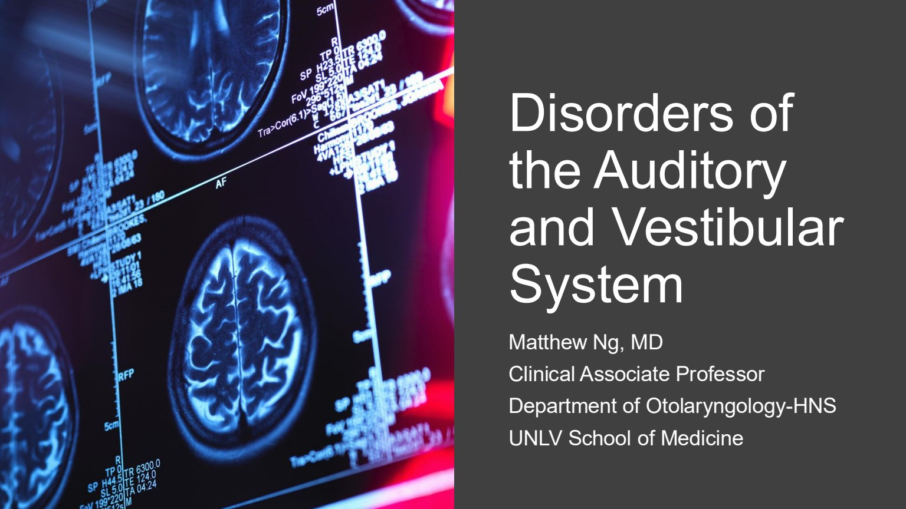</a></details><details><summary>Original extracted slide text</summary><pre class="transcript">Disorders of 
the Auditory 
and Vestibular 
System
Matthew Ng, MD
Clinical Associate Professor
Department of Otolaryngology-HNS
UNLV School of Medicine</pre></details></section><section class="slide" id="slide-av-2"><h3>Auditory &amp; vestibular disorders · original slide 2</h3><p>Title, objectives, outline, divider, or closing summary retained.</p><details><summary>Show full original slide and credits</summary><a href="images/av-002.jpg" target="_blank" rel="noopener">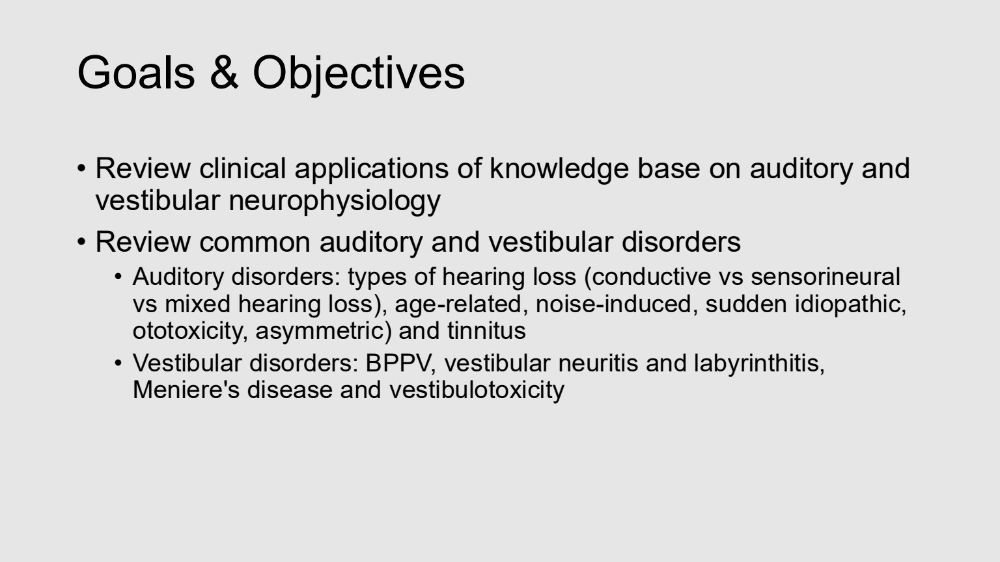</a></details><details><summary>Original extracted slide text</summary><pre class="transcript">Goals &amp; Objectives
• Review clinical applications of knowledge base on auditory and 
vestibular neurophysiology
• Review common auditory and vestibular disorders
• Auditory disorders: types of hearing loss (conductive vs sensorineural 
vs mixed hearing loss), age-related, noise-induced, sudden idiopathic, 
ototoxicity, asymmetric) and tinnitus
• Vestibular disorders: BPPV, vestibular neuritis and labyrinthitis, 
Meniere&#x27;s disease and vestibulotoxicity</pre></details></section><section class="slide" id="slide-av-3"><h3>Auditory &amp; vestibular disorders · original slide 3</h3><details><summary>Mapped concepts and practice</summary><ul><li><a href="index.html?q=Q001">Q001</a> — Residual middle-ear fluid restricts tympanic membrane and ossicular motion, causing conductive hearing loss. Tympanostomy can restore ventilation in appropriately selected children.</li><li><a href="index.html?q=Q042">Q042</a> — Middle-ear effusion reduces movement and produces a flat trace. Canal volume helps distinguish fluid from a perforation or tube.</li><li><a href="index.html?q=Q045">Q045</a> — A tube ventilates the middle ear and permits drainage without depending on normal Eustachian tube opening. Selection follows clinical duration, hearing, and infection criteria rather than every isolated effusion.</li><li><a href="index.html?q=Q071">Q071</a> — Obstruction impairs pressure equalization and ventilation. Patulous dysfunction reflects excessive openness and has a different symptom pattern.</li><li><a href="index.html?q=Q287">Q287</a> — Persistent middle-ear fluid produces a conductive air-bone gap and a flat normal-volume tympanogram. It can affect functional hearing without fever or the bulging inflamed drum of an acute episode.</li></ul></details><details><summary>Show full original slide and credits</summary><a href="images/av-003.jpg" target="_blank" rel="noopener">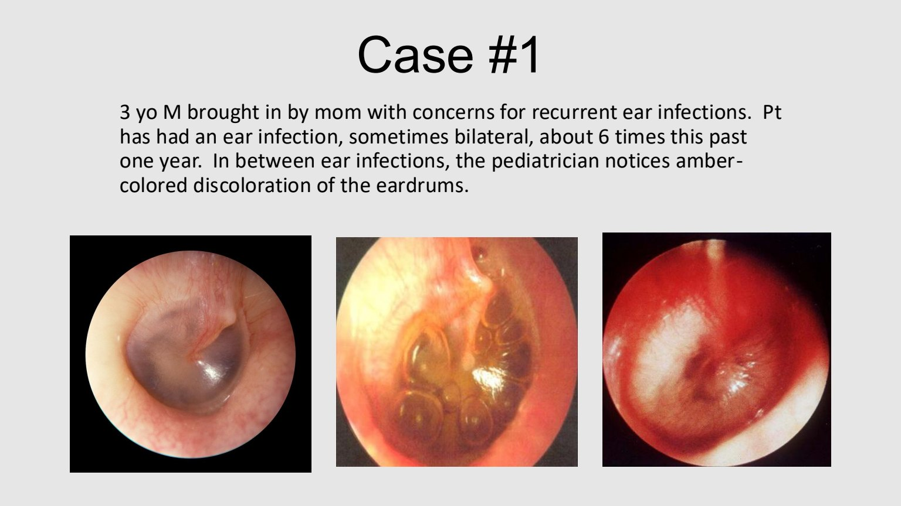</a></details><details><summary>Original extracted slide text</summary><pre class="transcript">Case #1
3 yo M brought in by mom with concerns for recurrent ear infections. Pt 
has had an ear infection, sometimes bilateral, about 6 times this past 
one year. In between ear infections, the pediatrician notices amber￾colored discoloration of the eardrums.</pre></details></section><section class="slide" id="slide-av-4"><h3>Auditory &amp; vestibular disorders · original slide 4</h3><details><summary>Mapped concepts and practice</summary><ul><li><a href="index.html?q=Q001">Q001</a> — Residual middle-ear fluid restricts tympanic membrane and ossicular motion, causing conductive hearing loss. Tympanostomy can restore ventilation in appropriately selected children.</li><li><a href="index.html?q=Q043">Q043</a> — The open tube permits the probe to measure connected middle-ear volume. This is different from an intact fluid-filled middle ear.</li><li><a href="index.html?q=Q045">Q045</a> — A tube ventilates the middle ear and permits drainage without depending on normal Eustachian tube opening. Selection follows clinical duration, hearing, and infection criteria rather than every isolated effusion.</li><li><a href="index.html?q=Q287">Q287</a> — Persistent middle-ear fluid produces a conductive air-bone gap and a flat normal-volume tympanogram. It can affect functional hearing without fever or the bulging inflamed drum of an acute episode.</li></ul></details><details><summary>Show full original slide and credits</summary><a href="images/av-004.jpg" target="_blank" rel="noopener">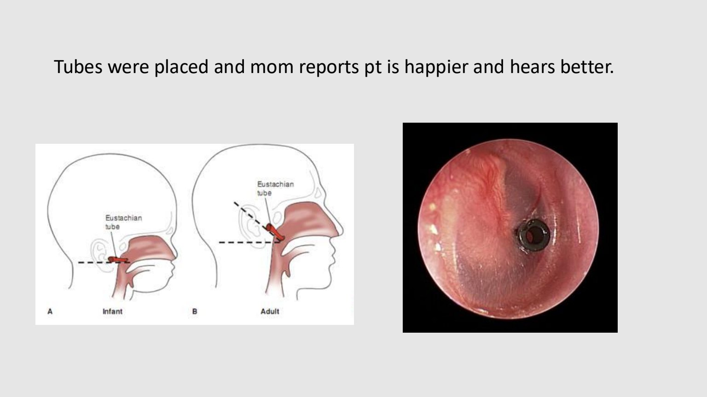</a></details><details><summary>Original extracted slide text</summary><pre class="transcript">Tubes were placed and mom reports pt is happier and hears better.</pre></details></section><section class="slide" id="slide-av-5"><h3>Auditory &amp; vestibular disorders · original slide 5</h3><details><summary>Mapped concepts and practice</summary><ul><li><a href="index.html?q=Q044">Q044</a> — Obstructive Eustachian tube dysfunction can produce negative middle-ear pressure and drum retraction. A type C trace alone does not prove infected fluid.</li><li><a href="index.html?q=Q046">Q046</a> — Balloon dilation is distinct from eardrum tube placement and from management of a patulous tube. Proper patient selection is important.</li><li><a href="index.html?q=Q071">Q071</a> — Obstruction impairs pressure equalization and ventilation. Patulous dysfunction reflects excessive openness and has a different symptom pattern.</li></ul></details><details><summary>Show full original slide and credits</summary><a href="images/av-005.jpg" target="_blank" rel="noopener">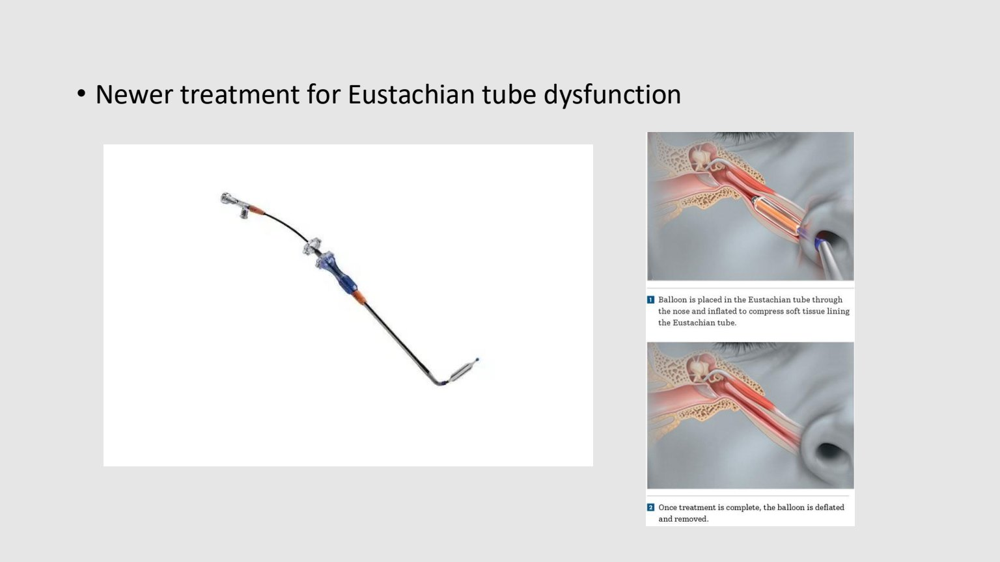</a></details><details><summary>Original extracted slide text</summary><pre class="transcript">• Newer treatment for Eustachian tube dysfunction</pre></details></section><section class="slide" id="slide-av-6"><h3>Auditory &amp; vestibular disorders · original slide 6</h3><details><summary>Mapped concepts and practice</summary><ul><li><a href="index.html?q=Q002">Q002</a> — GJB2 encodes connexin 26, a gap-junction protein important for cochlear ion homeostasis. Recessive inheritance explains unaffected parents and an apparently negative family history.</li><li><a href="index.html?q=Q029">Q029</a> — Scalp-recorded responses after acoustic stimuli permit objective hearing assessment in infants. ABR can estimate thresholds and evaluate neural timing.</li><li><a href="index.html?q=Q040">Q040</a> — Thresholds above about 90 dB HL are profound. Objective testing and aided benefit guide rehabilitation; the number alone does not determine every treatment decision.</li><li><a href="index.html?q=Q049">Q049</a> — Implant electrodes stimulate spiral ganglion/auditory nerve pathways. Early appropriate auditory and language rehabilitation supports development; timing and candidacy are individualized.</li><li><a href="index.html?q=Q054">Q054</a> — Appropriate amplification, implantation when indicated, and language services support development. A good outcome in the lecture case is illustrative rather than guaranteed.</li><li><a href="index.html?q=Q288">Q288</a> — Recessive GJB2-related loss can occur in children of unaffected carrier parents. Connexin-26 dysfunction disrupts cochlear homeostasis; selected profound cases may benefit from implantation plus language rehabilitation.</li></ul></details><details><summary>Show full original slide and credits</summary><a href="images/av-006.jpg" target="_blank" rel="noopener">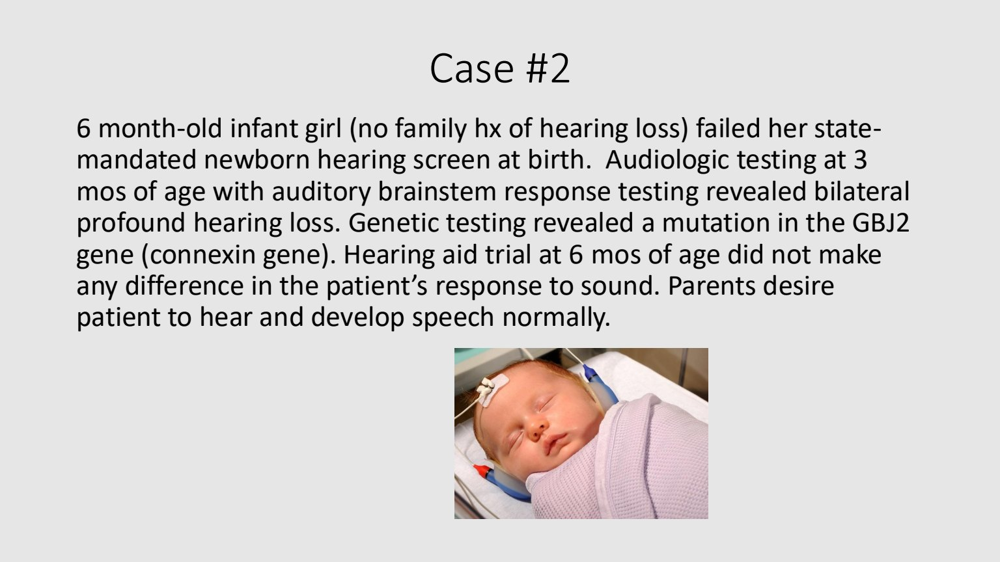</a></details><details><summary>Original extracted slide text</summary><pre class="transcript">Case #2
6 month-old infant girl (no family hx of hearing loss) failed her state￾mandated newborn hearing screen at birth. Audiologic testing at 3 
mos of age with auditory brainstem response testing revealed bilateral 
profound hearing loss. Genetic testing revealed a mutation in the GBJ2 
gene (connexin gene). Hearing aid trial at 6 mos of age did not make 
any difference in the patient’s response to sound. Parents desire 
patient to hear and develop speech normally.</pre></details></section><section class="slide" id="slide-av-7"><h3>Auditory &amp; vestibular disorders · original slide 7</h3><details><summary>Mapped concepts and practice</summary><ul><li><a href="index.html?q=Q002">Q002</a> — GJB2 encodes connexin 26, a gap-junction protein important for cochlear ion homeostasis. Recessive inheritance explains unaffected parents and an apparently negative family history.</li><li><a href="index.html?q=Q049">Q049</a> — Implant electrodes stimulate spiral ganglion/auditory nerve pathways. Early appropriate auditory and language rehabilitation supports development; timing and candidacy are individualized.</li><li><a href="index.html?q=Q054">Q054</a> — Appropriate amplification, implantation when indicated, and language services support development. A good outcome in the lecture case is illustrative rather than guaranteed.</li><li><a href="index.html?q=Q288">Q288</a> — Recessive GJB2-related loss can occur in children of unaffected carrier parents. Connexin-26 dysfunction disrupts cochlear homeostasis; selected profound cases may benefit from implantation plus language rehabilitation.</li></ul></details><details><summary>Show full original slide and credits</summary><a href="images/av-007.jpg" target="_blank" rel="noopener">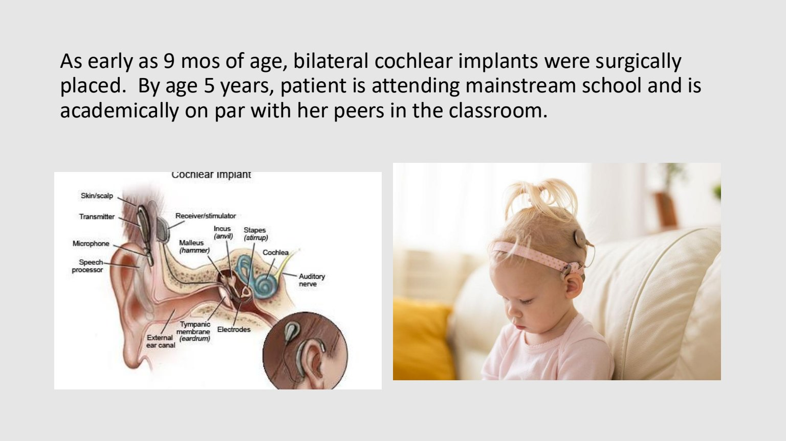</a></details><details><summary>Original extracted slide text</summary><pre class="transcript">As early as 9 mos of age, bilateral cochlear implants were surgically 
placed. By age 5 years, patient is attending mainstream school and is 
academically on par with her peers in the classroom.</pre></details></section><section class="slide" id="slide-av-8"><h3>Auditory &amp; vestibular disorders · original slide 8</h3><details><summary>Mapped concepts and practice</summary><ul><li><a href="index.html?q=Q003">Q003</a> — Asymmetric SNHL with unilateral tinnitus prompts evaluation for retrocochlear pathology. The enhancing vestibular nerve mass supports vestibular schwannoma.</li><li><a href="index.html?q=Q013">Q013</a> — Asymmetric SNHL raises concern for retrocochlear lesions. Audiometry identifies the asymmetry; MRI, rather than the audiogram alone, establishes a tumor.</li><li><a href="index.html?q=Q289">Q289</a> — A vestibular nerve schwannoma can involve hearing through its internal canal/CPA location and produce imbalance. MRI identifies the lesion; the audiogram alone does not establish a tumor.</li></ul></details><details><summary>Show full original slide and credits</summary><a href="images/av-008.jpg" target="_blank" rel="noopener">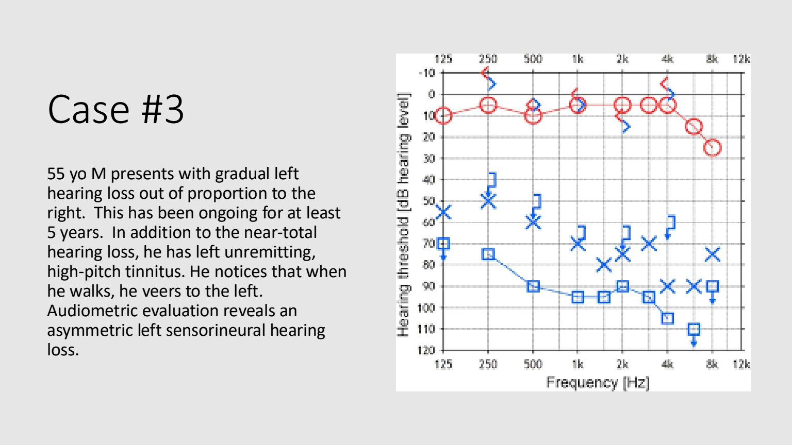</a></details><details><summary>Original extracted slide text</summary><pre class="transcript">Case #3
55 yo M presents with gradual left 
hearing loss out of proportion to the 
right. This has been ongoing for at least 
5 years. In addition to the near-total 
hearing loss, he has left unremitting, 
high-pitch tinnitus. He notices that when 
he walks, he veers to the left. 
Audiometric evaluation reveals an 
asymmetric left sensorineural hearing 
loss.</pre></details></section><section class="slide" id="slide-av-9"><h3>Auditory &amp; vestibular disorders · original slide 9</h3><details><summary>Mapped concepts and practice</summary><ul><li><a href="index.html?q=Q003">Q003</a> — Asymmetric SNHL with unilateral tinnitus prompts evaluation for retrocochlear pathology. The enhancing vestibular nerve mass supports vestibular schwannoma.</li><li><a href="index.html?q=Q013">Q013</a> — Asymmetric SNHL raises concern for retrocochlear lesions. Audiometry identifies the asymmetry; MRI, rather than the audiogram alone, establishes a tumor.</li><li><a href="index.html?q=Q030">Q030</a> — MRI evaluates vestibular nerve and cerebellopontine angle lesions. A normal otoscopic examination does not exclude such pathology.</li><li><a href="index.html?q=Q289">Q289</a> — A vestibular nerve schwannoma can involve hearing through its internal canal/CPA location and produce imbalance. MRI identifies the lesion; the audiogram alone does not establish a tumor.</li></ul></details><details><summary>Show full original slide and credits</summary><a href="images/av-009.jpg" target="_blank" rel="noopener">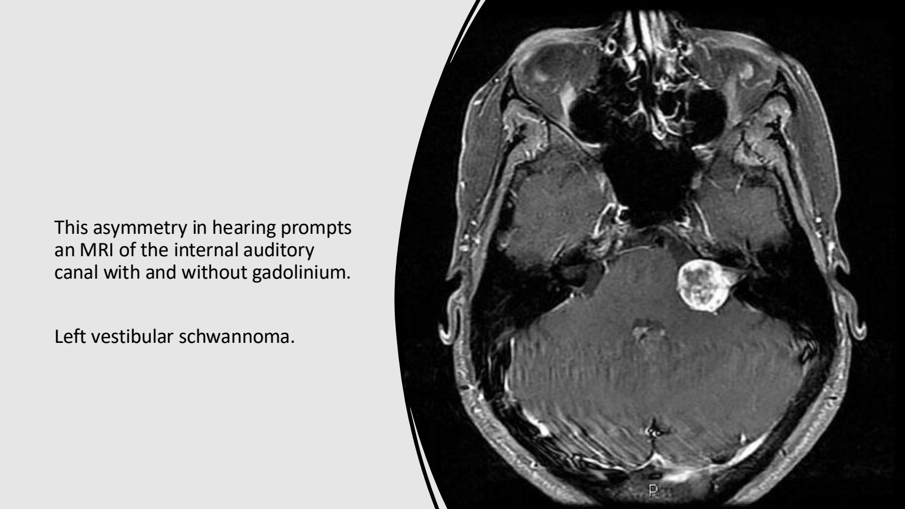</a></details><details><summary>Original extracted slide text</summary><pre class="transcript">This asymmetry in hearing prompts 
an MRI of the internal auditory 
canal with and without gadolinium.
Left vestibular schwannoma.</pre></details></section><section class="slide" id="slide-av-10"><h3>Auditory &amp; vestibular disorders · original slide 10</h3><details><summary>Mapped concepts and practice</summary><ul><li><a href="index.html?q=Q055">Q055</a> — Drilling through the labyrinth provides exposure for tumor removal and facial nerve preservation, but this is not a hearing-preserving approach.</li><li><a href="index.html?q=Q289">Q289</a> — A vestibular nerve schwannoma can involve hearing through its internal canal/CPA location and produce imbalance. MRI identifies the lesion; the audiogram alone does not establish a tumor.</li></ul></details><details><summary>Show full original slide and credits</summary><a href="images/av-010.jpg" target="_blank" rel="noopener">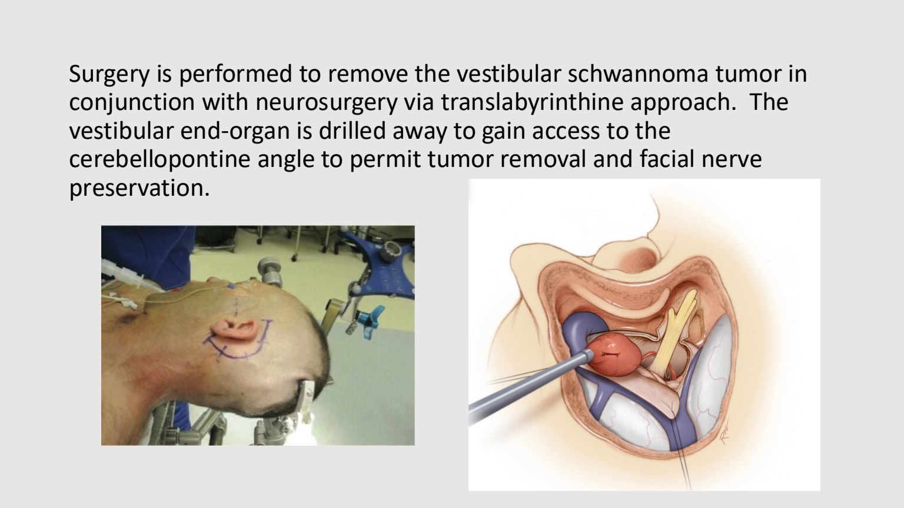</a></details><details><summary>Original extracted slide text</summary><pre class="transcript">Surgery is performed to remove the vestibular schwannoma tumor in 
conjunction with neurosurgery via translabyrinthine approach. The 
vestibular end-organ is drilled away to gain access to the 
cerebellopontine angle to permit tumor removal and facial nerve 
preservation.</pre></details></section><section class="slide" id="slide-av-11"><h3>Auditory &amp; vestibular disorders · original slide 11</h3><details><summary>Mapped concepts and practice</summary><ul><li><a href="index.html?q=Q085">Q085</a> — Balance integrates vision, proprioception, and vestibular input. Impairment of multiple inputs reduces redundancy and increases fall risk.</li></ul></details><details><summary>Show full original slide and credits</summary><a href="images/av-011.jpg" target="_blank" rel="noopener">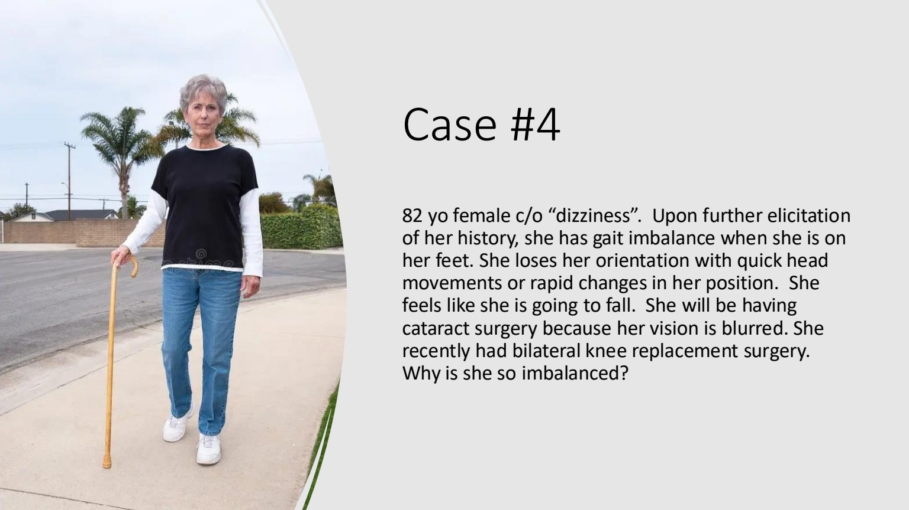</a></details><details><summary>Original extracted slide text</summary><pre class="transcript">Case #4
82 yo female c/o “dizziness”. Upon further elicitation 
of her history, she has gait imbalance when she is on 
her feet. She loses her orientation with quick head 
movements or rapid changes in her position. She 
feels like she is going to fall. She will be having 
cataract surgery because her vision is blurred. She 
recently had bilateral knee replacement surgery. 
Why is she so imbalanced?</pre></details></section><section class="slide" id="slide-av-12"><h3>Auditory &amp; vestibular disorders · original slide 12</h3><details><summary>Mapped concepts and practice</summary><ul><li><a href="index.html?q=Q085">Q085</a> — Balance integrates vision, proprioception, and vestibular input. Impairment of multiple inputs reduces redundancy and increases fall risk.</li></ul></details><details><summary>Show full original slide and credits</summary><a href="images/av-012.jpg" target="_blank" rel="noopener">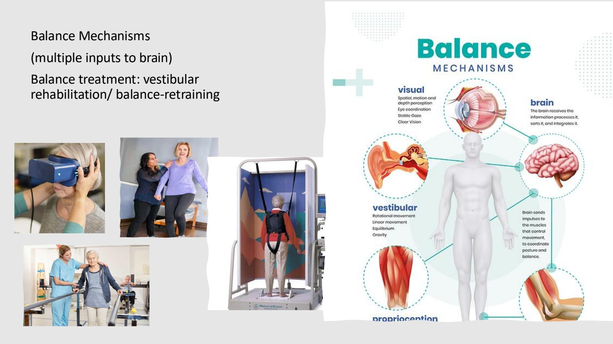</a></details><details><summary>Original extracted slide text</summary><pre class="transcript">Balance Mechanisms
(multiple inputs to brain)
Balance treatment: vestibular 
rehabilitation/ balance-retraining</pre></details></section><section class="slide" id="slide-av-13"><h3>Auditory &amp; vestibular disorders · original slide 13</h3><p>Title, objectives, outline, divider, or closing summary retained.</p><details><summary>Show full original slide and credits</summary><a href="images/av-013.jpg" target="_blank" rel="noopener"></a></details><details><summary>Original extracted slide text</summary><pre class="transcript">HEARING LOSS</pre></details></section><section class="slide" id="slide-av-14"><h3>Auditory &amp; vestibular disorders · original slide 14</h3><details><summary>Mapped concepts and practice</summary><ul><li><a href="index.html?q=Q278">Q278</a> — The external ear captures sound, the middle ear impedance-matches air to fluid, and the inner ear transduces fluid motion to neural activity. Failure of the transmission stage is conductive.</li></ul></details><details><summary>Show full original slide and credits</summary><a href="images/av-014.jpg" target="_blank" rel="noopener">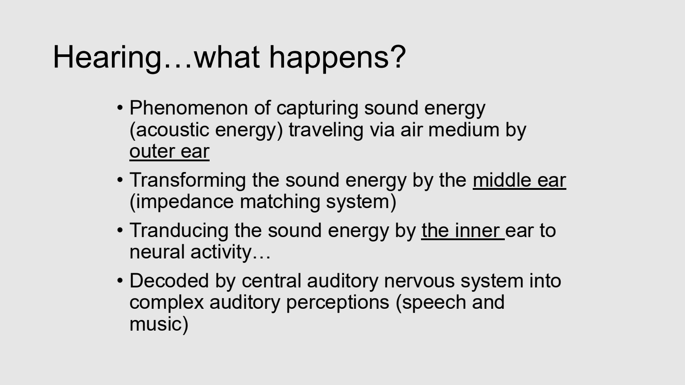</a></details><details><summary>Original extracted slide text</summary><pre class="transcript">Hearing…what happens?
• Phenomenon of capturing sound energy 
(acoustic energy) traveling via air medium by 
outer ear
• Transforming the sound energy by the middle ear 
(impedance matching system)
• Tranducing the sound energy by the inner ear to 
neural activity…
• Decoded by central auditory nervous system into 
complex auditory perceptions (speech and 
music)</pre></details></section><section class="slide" id="slide-av-15"><h3>Auditory &amp; vestibular disorders · original slide 15</h3><details><summary>Mapped concepts and practice</summary><ul><li><a href="index.html?q=Q278">Q278</a> — The external ear captures sound, the middle ear impedance-matches air to fluid, and the inner ear transduces fluid motion to neural activity. Failure of the transmission stage is conductive.</li></ul></details><details><summary>Show full original slide and credits</summary><a href="images/av-015.jpg" target="_blank" rel="noopener">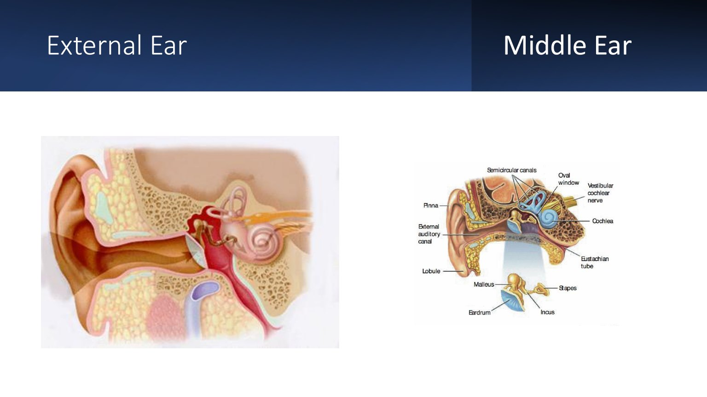</a></details><details><summary>Original extracted slide text</summary><pre class="transcript">External Ear Middle Ear</pre></details></section><section class="slide" id="slide-av-16"><h3>Auditory &amp; vestibular disorders · original slide 16</h3><details><summary>Mapped concepts and practice</summary><ul><li><a href="index.html?q=Q279">Q279</a> — The basilar traveling wave is the hydromechanical input to cochlear hair-cell transduction. Destroying sensory cells produces cochlear SNHL rather than a pure transmission gap.</li><li><a href="index.html?q=Q281">Q281</a> — The traveling-wave framework, associated with von Bekesy, links frequency to the place of maximal basilar displacement. High frequencies peak basally.</li><li><a href="index.html?q=Q282">Q282</a> — Lower-frequency traveling waves peak farther along the wider, more flexible apical membrane. Tonotopy then persists in auditory neural coding.</li></ul></details><details><summary>Show full original slide and credits</summary><a href="images/av-016.jpg" target="_blank" rel="noopener">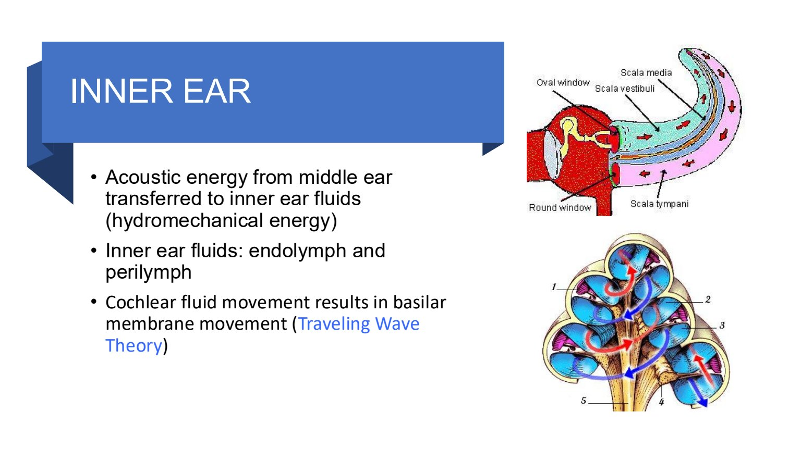</a></details><details><summary>Original extracted slide text</summary><pre class="transcript">INNER EAR
• Acoustic energy from middle ear 
transferred to inner ear fluids 
(hydromechanical energy)
• Inner ear fluids: endolymph and 
perilymph
• Cochlear fluid movement results in basilar 
membrane movement (Traveling Wave 
Theory)</pre></details></section><section class="slide" id="slide-av-17"><h3>Auditory &amp; vestibular disorders · original slide 17</h3><details><summary>Mapped concepts and practice</summary><ul><li><a href="index.html?q=Q279">Q279</a> — The basilar traveling wave is the hydromechanical input to cochlear hair-cell transduction. Destroying sensory cells produces cochlear SNHL rather than a pure transmission gap.</li><li><a href="index.html?q=Q281">Q281</a> — The traveling-wave framework, associated with von Bekesy, links frequency to the place of maximal basilar displacement. High frequencies peak basally.</li><li><a href="index.html?q=Q282">Q282</a> — Lower-frequency traveling waves peak farther along the wider, more flexible apical membrane. Tonotopy then persists in auditory neural coding.</li></ul></details><details><summary>Show full original slide and credits</summary><a href="images/av-017.jpg" target="_blank" rel="noopener">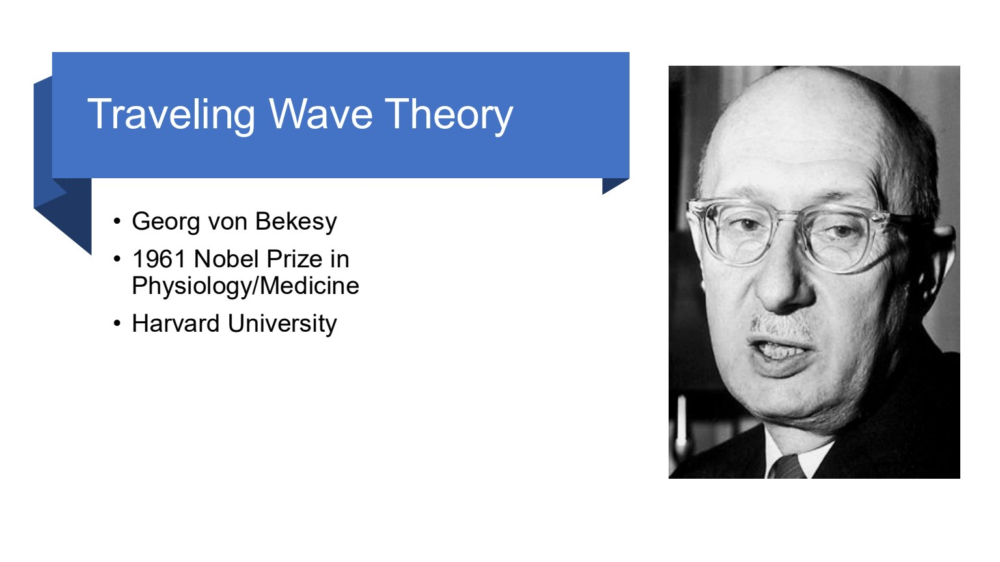</a></details><details><summary>Original extracted slide text</summary><pre class="transcript">Traveling Wave Theory
• Georg von Bekesy 
• 1961 Nobel Prize in 
Physiology/Medicine
• Harvard University</pre></details></section><section class="slide" id="slide-av-18"><h3>Auditory &amp; vestibular disorders · original slide 18</h3><details><summary>Mapped concepts and practice</summary><ul><li><a href="index.html?q=Q281">Q281</a> — The traveling-wave framework, associated with von Bekesy, links frequency to the place of maximal basilar displacement. High frequencies peak basally.</li><li><a href="index.html?q=Q282">Q282</a> — Lower-frequency traveling waves peak farther along the wider, more flexible apical membrane. Tonotopy then persists in auditory neural coding.</li></ul></details><details><summary>Show full original slide and credits</summary><a href="images/av-018.jpg" target="_blank" rel="noopener">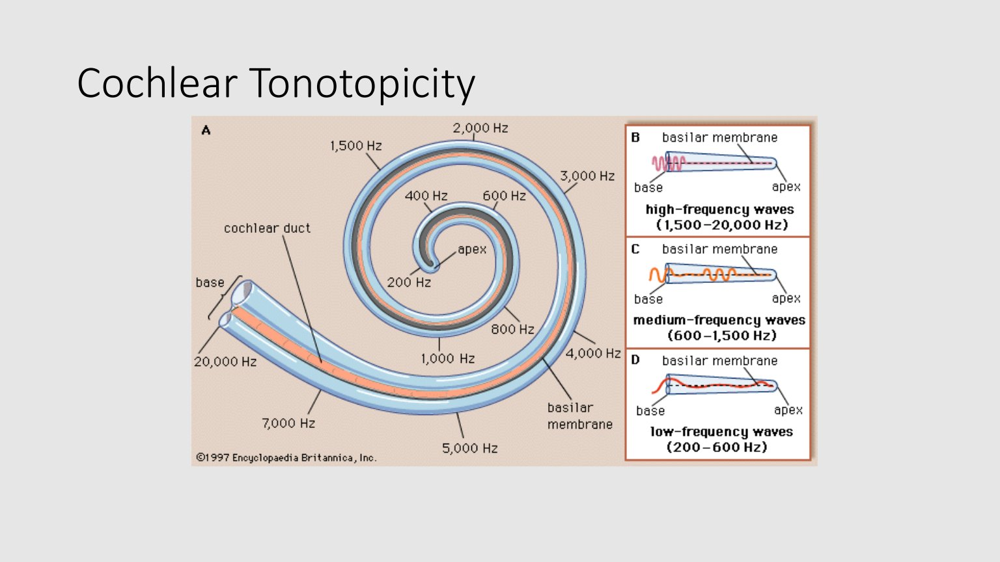</a></details><details><summary>Original extracted slide text</summary><pre class="transcript">Cochlear Tonotopicity</pre></details></section><section class="slide" id="slide-av-19"><h3>Auditory &amp; vestibular disorders · original slide 19</h3><details><summary>Mapped concepts and practice</summary><ul><li><a href="index.html?q=Q280">Q280</a> — Ascending auditory pathways distribute information bilaterally. The lecture gives simplified dorsal/ventral crossing patterns; the key clinical principle is bilateral representation above the initial cochlear input.</li></ul></details><details><summary>Show full original slide and credits</summary><a href="images/av-019.jpg" target="_blank" rel="noopener">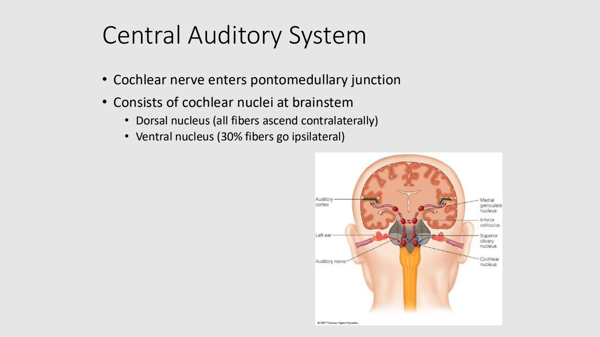</a></details><details><summary>Original extracted slide text</summary><pre class="transcript">Central Auditory System
• Cochlear nerve enters pontomedullary junction
• Consists of cochlear nuclei at brainstem
• Dorsal nucleus (all fibers ascend contralaterally)
• Ventral nucleus (30% fibers go ipsilateral)</pre></details></section><section class="slide" id="slide-av-20"><h3>Auditory &amp; vestibular disorders · original slide 20</h3><details><summary>Mapped concepts and practice</summary><ul><li><a href="index.html?q=Q022">Q022</a> — Auditory cortex contributes to hearing in noise, temporal judgment, localization, and complex sound interpretation; peripheral detection alone does not capture these functions.</li><li><a href="index.html?q=Q280">Q280</a> — Ascending auditory pathways distribute information bilaterally. The lecture gives simplified dorsal/ventral crossing patterns; the key clinical principle is bilateral representation above the initial cochlear input.</li></ul></details><details><summary>Show full original slide and credits</summary><a href="images/av-020.jpg" target="_blank" rel="noopener">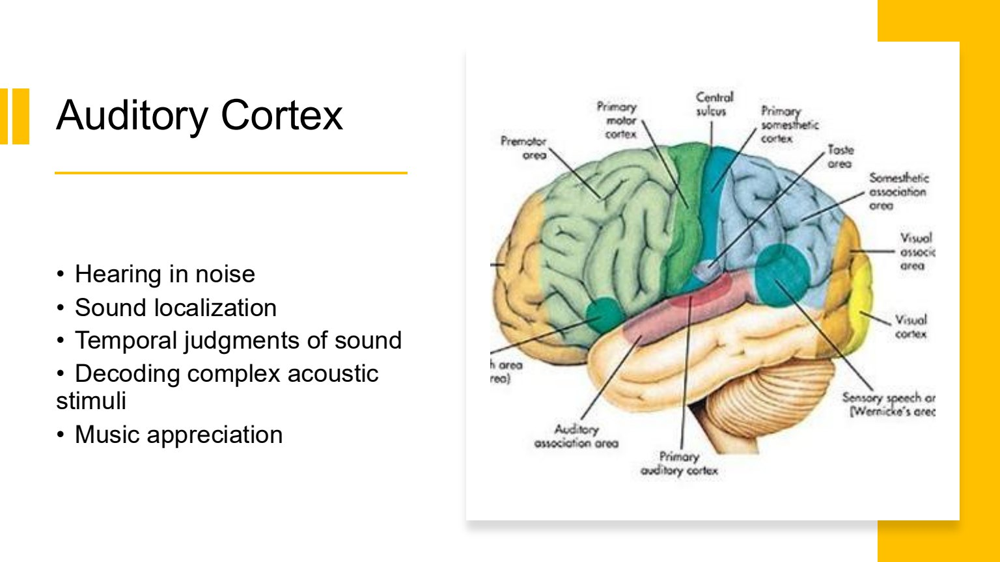</a></details><details><summary>Original extracted slide text</summary><pre class="transcript">Auditory Cortex
• Hearing in noise
• Sound localization
• Temporal judgments of sound
• Decoding complex acoustic 
stimuli
• Music appreciation</pre></details></section><section class="slide" id="slide-av-21"><h3>Auditory &amp; vestibular disorders · original slide 21</h3><details><summary>Mapped concepts and practice</summary><ul><li><a href="index.html?q=Q023">Q023</a> — A voice screen estimates hearing impairment at the bedside. Distance, technique, masking, and examiner intensity affect performance; formal testing quantifies a deficit.</li></ul></details><details><summary>Show full original slide and credits</summary><a href="images/av-021.jpg" target="_blank" rel="noopener">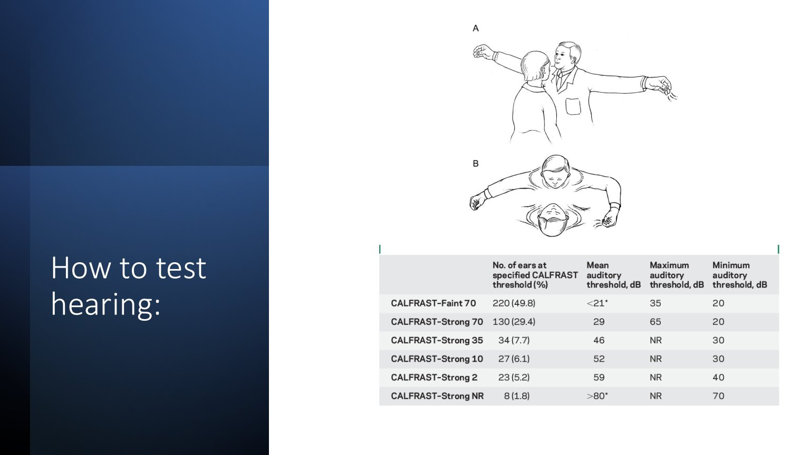</a></details><details><summary>Original extracted slide text</summary><pre class="transcript">How to test 
hearing:</pre></details></section><section class="slide" id="slide-av-22"><h3>Auditory &amp; vestibular disorders · original slide 22</h3><details><summary>Mapped concepts and practice</summary><ul><li><a href="index.html?q=Q024">Q024</a> — Weber compares relative perception between ears. Lateralization must be interpreted with Rinne and the broader clinical examination.</li><li><a href="index.html?q=Q025">Q025</a> — Rinne compares AC and BC in one ear. A positive Rinne, AC greater than BC, does not exclude SNHL.</li><li><a href="index.html?q=Q031">Q031</a> — Conductive loss makes Weber lateralize toward the affected ear and can reverse Rinne when sufficiently large.</li><li><a href="index.html?q=Q032">Q032</a> — Weber lateralizes toward the better-hearing ear in unilateral SNHL. AC remains better than BC even though both are impaired.</li></ul></details><details><summary>Show full original slide and credits</summary><a href="images/av-022.jpg" target="_blank" rel="noopener">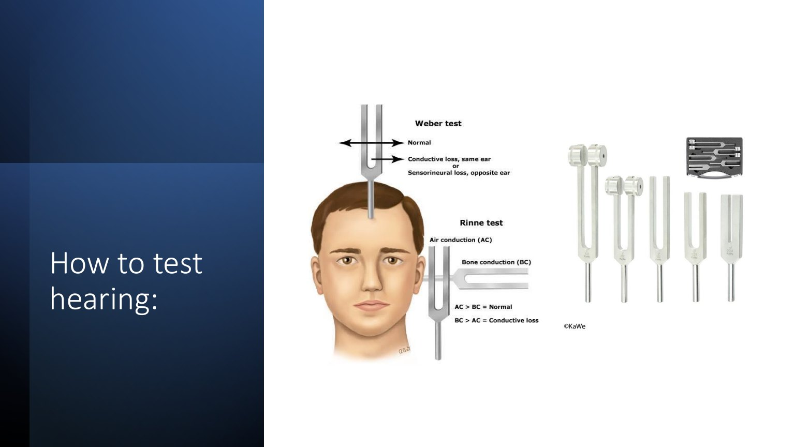</a></details><details><summary>Original extracted slide text</summary><pre class="transcript">How to test 
hearing:</pre></details></section><section class="slide" id="slide-av-23"><h3>Auditory &amp; vestibular disorders · original slide 23</h3><details><summary>Mapped concepts and practice</summary><ul><li><a href="index.html?q=Q026">Q026</a> — Air testing evaluates the entire pathway; bone testing bypasses external/middle-ear transmission. A sound-treated booth and calibration improve reliability.</li></ul></details><details><summary>Show full original slide and credits</summary><a href="images/av-023.jpg" target="_blank" rel="noopener">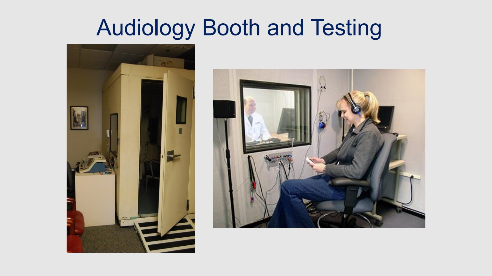</a></details><details><summary>Original extracted slide text</summary><pre class="transcript">Audiology Booth and Testing</pre></details></section><section class="slide" id="slide-av-24"><h3>Auditory &amp; vestibular disorders · original slide 24</h3><details><summary>Mapped concepts and practice</summary><ul><li><a href="index.html?q=Q016">Q016</a> — A large air-bone gap with near-normal bone thresholds identifies impaired outer/middle-ear transmission rather than primary cochlear loss.</li><li><a href="index.html?q=Q017">Q017</a> — Both routes are impaired because they ultimately depend on the cochlea and auditory nerve. Similar air/bone thresholds do not mean normal hearing.</li><li><a href="index.html?q=Q026">Q026</a> — Air testing evaluates the entire pathway; bone testing bypasses external/middle-ear transmission. A sound-treated booth and calibration improve reliability.</li><li><a href="index.html?q=Q033">Q033</a> — Bone vibration stimulates the cochlea more directly. A gap between air and bone thresholds identifies an additional transmission deficit.</li></ul></details><details><summary>Show full original slide and credits</summary><a href="images/av-024.jpg" target="_blank" rel="noopener">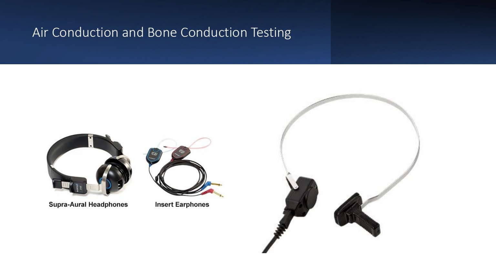</a></details><details><summary>Original extracted slide text</summary><pre class="transcript">Air Conduction and Bone Conduction Testing</pre></details></section><section class="slide" id="slide-av-25"><h3>Auditory &amp; vestibular disorders · original slide 25</h3><details><summary>Mapped concepts and practice</summary><ul><li><a href="index.html?q=Q026">Q026</a> — Air testing evaluates the entire pathway; bone testing bypasses external/middle-ear transmission. A sound-treated booth and calibration improve reliability.</li><li><a href="index.html?q=Q027">Q027</a> — Word recognition measures speech discrimination and provides information beyond threshold sensitivity. Poor recognition influences hearing rehabilitation decisions.</li></ul></details><details><summary>Show full original slide and credits</summary><a href="images/av-025.jpg" target="_blank" rel="noopener">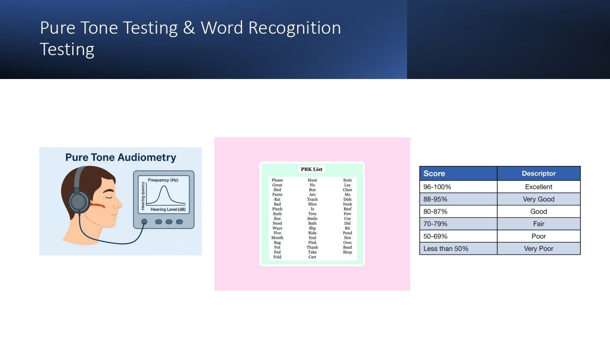</a></details><details><summary>Original extracted slide text</summary><pre class="transcript">Pure Tone Testing &amp; Word Recognition 
Testing</pre></details></section><section class="slide" id="slide-av-26"><h3>Auditory &amp; vestibular disorders · original slide 26</h3><details><summary>Mapped concepts and practice</summary><ul><li><a href="index.html?q=Q015">Q015</a> — Thresholds near 0–20/25 dB HL are generally considered normal in adults, depending on the convention. There is no significant elevation or air-bone gap.</li><li><a href="index.html?q=Q016">Q016</a> — A large air-bone gap with near-normal bone thresholds identifies impaired outer/middle-ear transmission rather than primary cochlear loss.</li><li><a href="index.html?q=Q033">Q033</a> — Bone vibration stimulates the cochlea more directly. A gap between air and bone thresholds identifies an additional transmission deficit.</li><li><a href="index.html?q=Q034">Q034</a> — Audiograms plot increasing hearing level downward. A lower-positioned point means a louder test tone was needed.</li><li><a href="index.html?q=Q035">Q035</a> — dB HL is referenced to normal auditory thresholds, not absolute absence of sound. Different frequencies have different physical reference intensities.</li></ul></details><details><summary>Show full original slide and credits</summary><a href="images/av-026.jpg" target="_blank" rel="noopener">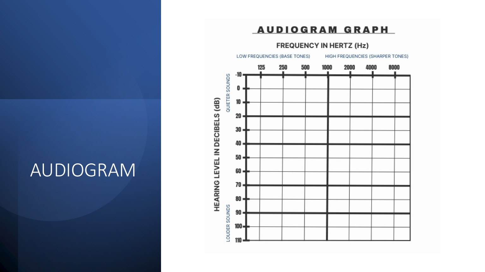</a></details><details><summary>Original extracted slide text</summary><pre class="transcript">AUDIOGRAM</pre></details></section><section class="slide" id="slide-av-27"><h3>Auditory &amp; vestibular disorders · original slide 27</h3><details><summary>Mapped concepts and practice</summary><ul><li><a href="index.html?q=Q036">Q036</a> — A 35-dB threshold is within a common mild range. Severity describes the threshold, not whether the loss is conductive or sensorineural.</li><li><a href="index.html?q=Q037">Q037</a> — A threshold near 50 dB HL lies in a typical moderate range; exact cutoffs vary slightly across conventions.</li><li><a href="index.html?q=Q038">Q038</a> — A typical moderately severe range is approximately 56–70 dB HL.</li><li><a href="index.html?q=Q039">Q039</a> — An 80-dB threshold is commonly classified as severe rather than profound.</li><li><a href="index.html?q=Q040">Q040</a> — Thresholds above about 90 dB HL are profound. Objective testing and aided benefit guide rehabilitation; the number alone does not determine every treatment decision.</li></ul></details><details><summary>Show full original slide and credits</summary><a href="images/av-027.jpg" target="_blank" rel="noopener">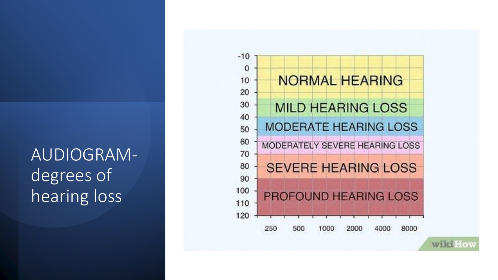</a></details><details><summary>Original extracted slide text</summary><pre class="transcript">AUDIOGRAM￾degrees of 
hearing loss</pre></details></section><section class="slide" id="slide-av-28"><h3>Auditory &amp; vestibular disorders · original slide 28</h3><details><summary>Mapped concepts and practice</summary><ul><li><a href="index.html?q=Q035">Q035</a> — dB HL is referenced to normal auditory thresholds, not absolute absence of sound. Different frequencies have different physical reference intensities.</li><li><a href="index.html?q=Q036">Q036</a> — A 35-dB threshold is within a common mild range. Severity describes the threshold, not whether the loss is conductive or sensorineural.</li><li><a href="index.html?q=Q037">Q037</a> — A threshold near 50 dB HL lies in a typical moderate range; exact cutoffs vary slightly across conventions.</li><li><a href="index.html?q=Q038">Q038</a> — A typical moderately severe range is approximately 56–70 dB HL.</li><li><a href="index.html?q=Q039">Q039</a> — An 80-dB threshold is commonly classified as severe rather than profound.</li><li><a href="index.html?q=Q040">Q040</a> — Thresholds above about 90 dB HL are profound. Objective testing and aided benefit guide rehabilitation; the number alone does not determine every treatment decision.</li></ul></details><details><summary>Show full original slide and credits</summary><a href="images/av-028.jpg" target="_blank" rel="noopener">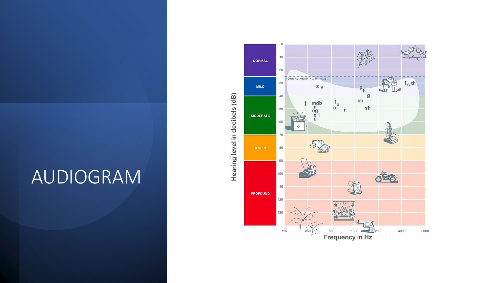</a></details><details><summary>Original extracted slide text</summary><pre class="transcript">AUDIOGRAM</pre></details></section><section class="slide" id="slide-av-29"><h3>Auditory &amp; vestibular disorders · original slide 29</h3><details><summary>Mapped concepts and practice</summary><ul><li><a href="index.html?q=Q015">Q015</a> — Thresholds near 0–20/25 dB HL are generally considered normal in adults, depending on the convention. There is no significant elevation or air-bone gap.</li></ul></details><details><summary>Show full original slide and credits</summary><a href="images/av-029.jpg" target="_blank" rel="noopener">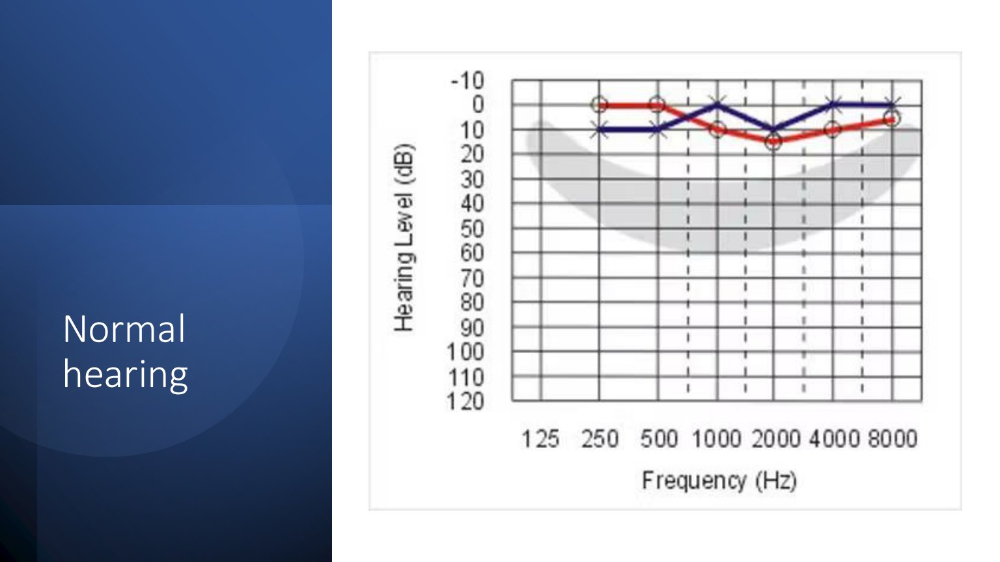</a></details><details><summary>Original extracted slide text</summary><pre class="transcript">Normal 
hearing</pre></details></section><section class="slide" id="slide-av-30"><h3>Auditory &amp; vestibular disorders · original slide 30</h3><details><summary>Mapped concepts and practice</summary><ul><li><a href="index.html?q=Q017">Q017</a> — Both routes are impaired because they ultimately depend on the cochlea and auditory nerve. Similar air/bone thresholds do not mean normal hearing.</li></ul></details><details><summary>Show full original slide and credits</summary><a href="images/av-030.jpg" target="_blank" rel="noopener">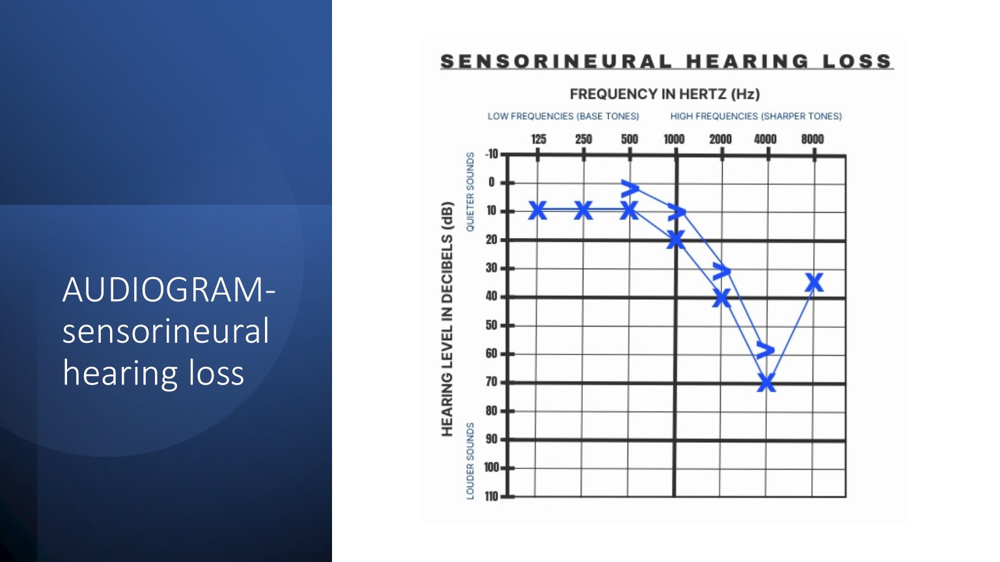</a></details><details><summary>Original extracted slide text</summary><pre class="transcript">AUDIOGRAM￾sensorineural 
hearing loss</pre></details></section><section class="slide" id="slide-av-31"><h3>Auditory &amp; vestibular disorders · original slide 31</h3><details><summary>Mapped concepts and practice</summary><ul><li><a href="index.html?q=Q016">Q016</a> — A large air-bone gap with near-normal bone thresholds identifies impaired outer/middle-ear transmission rather than primary cochlear loss.</li></ul></details><details><summary>Show full original slide and credits</summary><a href="images/av-031.jpg" target="_blank" rel="noopener">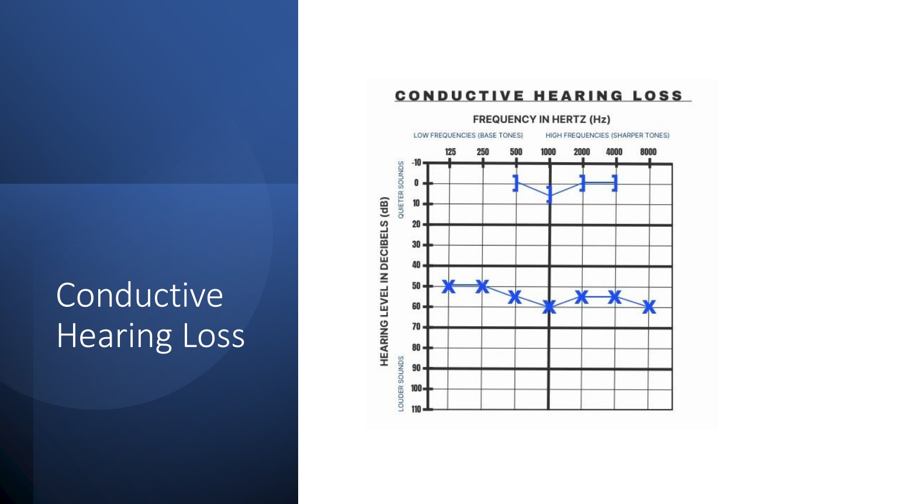</a></details><details><summary>Original extracted slide text</summary><pre class="transcript">Conductive 
Hearing Loss</pre></details></section><section class="slide" id="slide-av-32"><h3>Auditory &amp; vestibular disorders · original slide 32</h3><details><summary>Mapped concepts and practice</summary><ul><li><a href="index.html?q=Q018">Q018</a> — Elevated bone thresholds establish a sensorineural component; the additional air-bone gap establishes a conductive component.</li></ul></details><details><summary>Show full original slide and credits</summary><a href="images/av-032.jpg" target="_blank" rel="noopener">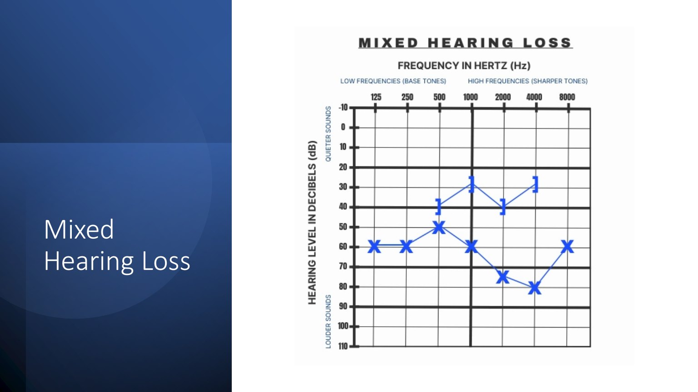</a></details><details><summary>Original extracted slide text</summary><pre class="transcript">Mixed
Hearing Loss</pre></details></section><section class="slide" id="slide-av-33"><h3>Auditory &amp; vestibular disorders · original slide 33</h3><details><summary>Mapped concepts and practice</summary><ul><li><a href="index.html?q=Q028">Q028</a> — Tympanometry assesses middle-ear mechanics. A flat trace or negative-pressure peak requires interpretation with canal volume and otoscopy.</li><li><a href="index.html?q=Q041">Q041</a> — A type A trace supports normal middle-ear mechanics. Cochlear hearing loss can still exist despite this pattern.</li><li><a href="index.html?q=Q042">Q042</a> — Middle-ear effusion reduces movement and produces a flat trace. Canal volume helps distinguish fluid from a perforation or tube.</li><li><a href="index.html?q=Q043">Q043</a> — The open tube permits the probe to measure connected middle-ear volume. This is different from an intact fluid-filled middle ear.</li><li><a href="index.html?q=Q044">Q044</a> — Obstructive Eustachian tube dysfunction can produce negative middle-ear pressure and drum retraction. A type C trace alone does not prove infected fluid.</li><li><a href="index.html?q=Q287">Q287</a> — Persistent middle-ear fluid produces a conductive air-bone gap and a flat normal-volume tympanogram. It can affect functional hearing without fever or the bulging inflamed drum of an acute episode.</li></ul></details><details><summary>Show full original slide and credits</summary><a href="images/av-033.jpg" target="_blank" rel="noopener">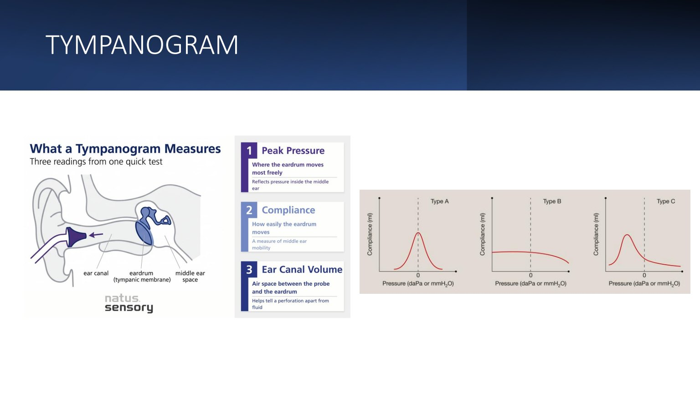</a></details><details><summary>Original extracted slide text</summary><pre class="transcript">TYMPANOGRAM</pre></details></section><section class="slide" id="slide-av-34"><h3>Auditory &amp; vestibular disorders · original slide 34</h3><details><summary>Mapped concepts and practice</summary><ul><li><a href="index.html?q=Q029">Q029</a> — Scalp-recorded responses after acoustic stimuli permit objective hearing assessment in infants. ABR can estimate thresholds and evaluate neural timing.</li><li><a href="index.html?q=Q288">Q288</a> — Recessive GJB2-related loss can occur in children of unaffected carrier parents. Connexin-26 dysfunction disrupts cochlear homeostasis; selected profound cases may benefit from implantation plus language rehabilitation.</li></ul></details><details><summary>Show full original slide and credits</summary><a href="images/av-034.jpg" target="_blank" rel="noopener">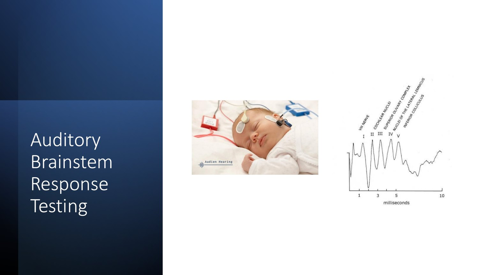</a></details><details><summary>Original extracted slide text</summary><pre class="transcript">Auditory 
Brainstem 
Response 
Testing</pre></details></section><section class="slide" id="slide-av-35"><h3>Auditory &amp; vestibular disorders · original slide 35</h3><details><summary>Mapped concepts and practice</summary><ul><li><a href="index.html?q=Q019">Q019</a> — External canal and middle-ear lesions impair mechanical delivery to the cochlea and typically create an air-bone gap.</li><li><a href="index.html?q=Q020">Q020</a> — Cochlear sensory damage impairs both air- and bone-conducted hearing. Bone conduction bypasses the middle ear, not the cochlea.</li><li><a href="index.html?q=Q021">Q021</a> — A new conductive component is superimposed on existing SNHL. The audiogram shows elevated bone thresholds plus worse air thresholds.</li></ul></details><details><summary>Show full original slide and credits</summary><a href="images/av-035.jpg" target="_blank" rel="noopener">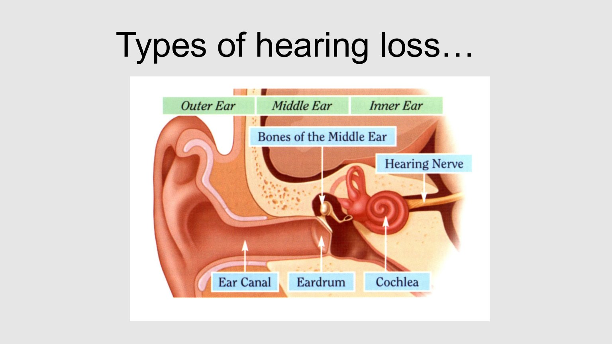</a></details><details><summary>Original extracted slide text</summary><pre class="transcript">Types of hearing loss…</pre></details></section><section class="slide" id="slide-av-36"><h3>Auditory &amp; vestibular disorders · original slide 36</h3><details><summary>Mapped concepts and practice</summary><ul><li><a href="index.html?q=Q016">Q016</a> — A large air-bone gap with near-normal bone thresholds identifies impaired outer/middle-ear transmission rather than primary cochlear loss.</li><li><a href="index.html?q=Q019">Q019</a> — External canal and middle-ear lesions impair mechanical delivery to the cochlea and typically create an air-bone gap.</li></ul></details><details><summary>Show full original slide and credits</summary><a href="images/av-036.jpg" target="_blank" rel="noopener">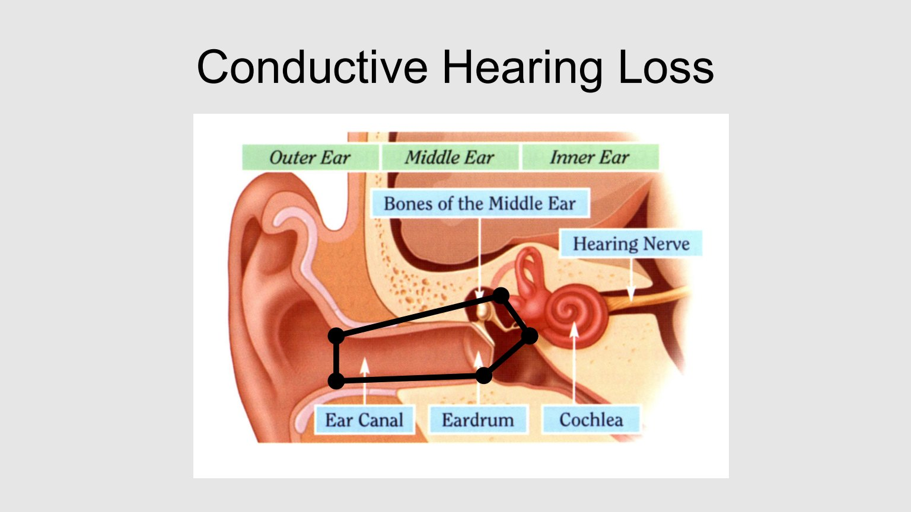</a></details><details><summary>Original extracted slide text</summary><pre class="transcript">Conductive Hearing Loss</pre></details></section><section class="slide" id="slide-av-37"><h3>Auditory &amp; vestibular disorders · original slide 37</h3><details><summary>Mapped concepts and practice</summary><ul><li><a href="index.html?q=Q017">Q017</a> — Both routes are impaired because they ultimately depend on the cochlea and auditory nerve. Similar air/bone thresholds do not mean normal hearing.</li><li><a href="index.html?q=Q020">Q020</a> — Cochlear sensory damage impairs both air- and bone-conducted hearing. Bone conduction bypasses the middle ear, not the cochlea.</li></ul></details><details><summary>Show full original slide and credits</summary><a href="images/av-037.jpg" target="_blank" rel="noopener">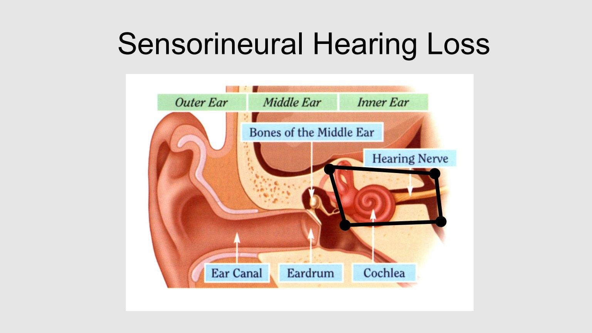</a></details><details><summary>Original extracted slide text</summary><pre class="transcript">Sensorineural Hearing Loss</pre></details></section><section class="slide" id="slide-av-38"><h3>Auditory &amp; vestibular disorders · original slide 38</h3><details><summary>Mapped concepts and practice</summary><ul><li><a href="index.html?q=Q018">Q018</a> — Elevated bone thresholds establish a sensorineural component; the additional air-bone gap establishes a conductive component.</li><li><a href="index.html?q=Q021">Q021</a> — A new conductive component is superimposed on existing SNHL. The audiogram shows elevated bone thresholds plus worse air thresholds.</li></ul></details><details><summary>Show full original slide and credits</summary><a href="images/av-038.jpg" target="_blank" rel="noopener">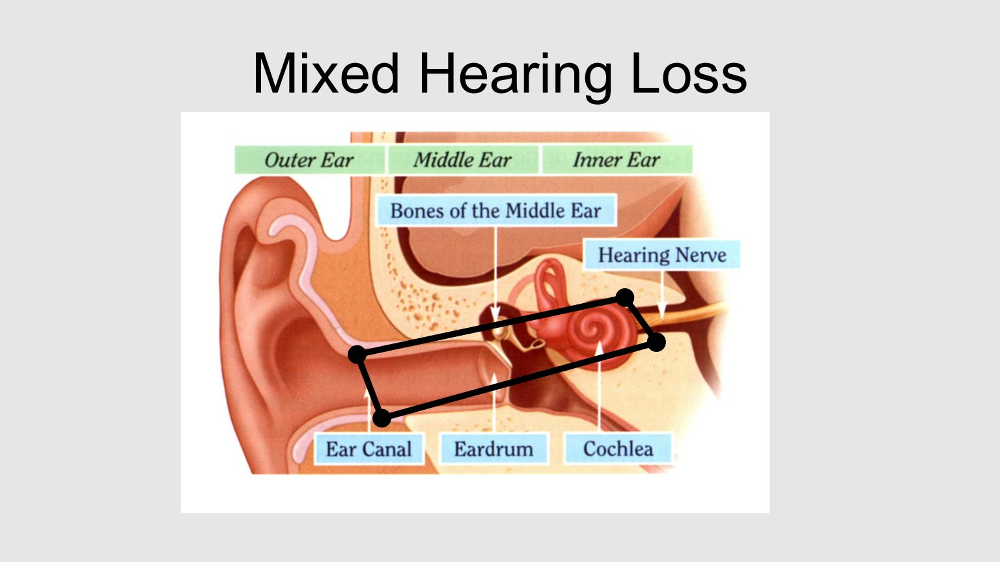</a></details><details><summary>Original extracted slide text</summary><pre class="transcript">Mixed Hearing Loss</pre></details></section><section class="slide" id="slide-av-39"><h3>Auditory &amp; vestibular disorders · original slide 39</h3><details><summary>Mapped concepts and practice</summary><ul><li><a href="index.html?q=Q004">Q004</a> — Wax blocks sound reaching the tympanic membrane and causes conductive loss. Removal addresses the obstruction when performed appropriately.</li><li><a href="index.html?q=Q005">Q005</a> — Aural atresia prevents ordinary air-conducted sound transmission. Preserved cochlear function allows consideration of bone-conduction hearing rehabilitation.</li><li><a href="index.html?q=Q048">Q048</a> — Skull vibration reaches the cochlea while bypassing the conductive obstruction. Percutaneous systems cross the skin; transcutaneous systems transmit across intact skin.</li></ul></details><details><summary>Show full original slide and credits</summary><a href="images/av-039.jpg" target="_blank" rel="noopener">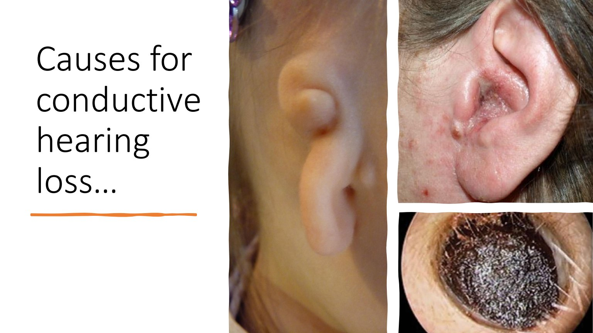</a></details><details><summary>Original extracted slide text</summary><pre class="transcript">Causes for 
conductive 
hearing 
loss…</pre></details></section><section class="slide" id="slide-av-40"><h3>Auditory &amp; vestibular disorders · original slide 40</h3><details><summary>Mapped concepts and practice</summary><ul><li><a href="index.html?q=Q006">Q006</a> — Otosclerotic remodeling commonly fixes the stapes footplate and impairs oval-window transmission; stapes surgery or amplification may help selected patients.</li><li><a href="index.html?q=Q007">Q007</a> — Cholesteatoma can enlarge and erode middle-ear structures, producing conductive loss and serious complications. It is not simply free wax in the external canal.</li><li><a href="index.html?q=Q008">Q008</a> — A perforation reduces effective mechanical sound transfer. Tympanoplasty is a repair option when indicated; the deficit is conductive unless additional injury exists.</li><li><a href="index.html?q=Q051">Q051</a> — Repair addresses the mechanical transmission abnormality. It cannot reverse an unrelated sensorineural component.</li></ul></details><details><summary>Show full original slide and credits</summary><a href="images/av-040.jpg" target="_blank" rel="noopener">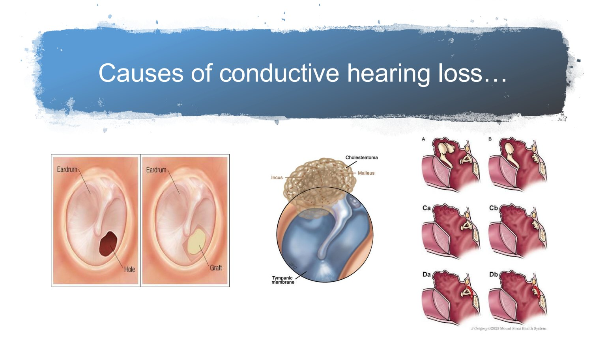</a></details><details><summary>Original extracted slide text</summary><pre class="transcript">Causes of conductive hearing loss…</pre></details></section><section class="slide" id="slide-av-41"><h3>Auditory &amp; vestibular disorders · original slide 41</h3><details><summary>Mapped concepts and practice</summary><ul><li><a href="index.html?q=Q006">Q006</a> — Otosclerotic remodeling commonly fixes the stapes footplate and impairs oval-window transmission; stapes surgery or amplification may help selected patients.</li><li><a href="index.html?q=Q008">Q008</a> — A perforation reduces effective mechanical sound transfer. Tympanoplasty is a repair option when indicated; the deficit is conductive unless additional injury exists.</li><li><a href="index.html?q=Q050">Q050</a> — A prosthesis transmits ossicular vibration past the fixed stapes footplate. This treats the conductive mechanism rather than regenerating cochlear cells.</li><li><a href="index.html?q=Q051">Q051</a> — Repair addresses the mechanical transmission abnormality. It cannot reverse an unrelated sensorineural component.</li></ul></details><details><summary>Show full original slide and credits</summary><a href="images/av-041.jpg" target="_blank" rel="noopener">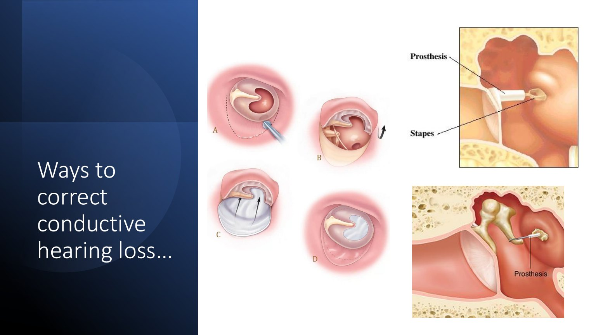</a></details><details><summary>Original extracted slide text</summary><pre class="transcript">Ways to 
correct 
conductive 
hearing loss…</pre></details></section><section class="slide" id="slide-av-42"><h3>Auditory &amp; vestibular disorders · original slide 42</h3><details><summary>Mapped concepts and practice</summary><ul><li><a href="index.html?q=Q048">Q048</a> — Skull vibration reaches the cochlea while bypassing the conductive obstruction. Percutaneous systems cross the skin; transcutaneous systems transmit across intact skin.</li><li><a href="index.html?q=Q053">Q053</a> — Both aim to bypass a conductive pathway. Skin care, transmission efficiency, anatomy, and device candidacy influence selection.</li></ul></details><details><summary>Show full original slide and credits</summary><a href="images/av-042.jpg" target="_blank" rel="noopener">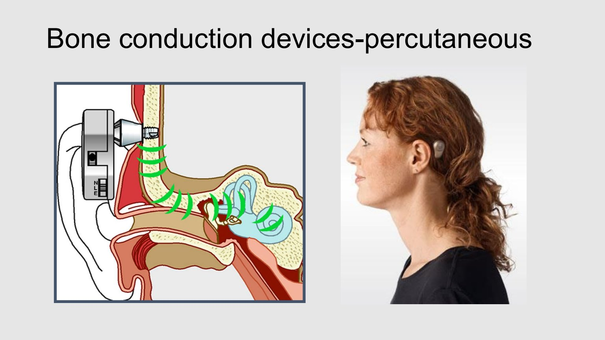</a></details><details><summary>Original extracted slide text</summary><pre class="transcript">Bone conduction devices-percutaneous</pre></details></section><section class="slide" id="slide-av-43"><h3>Auditory &amp; vestibular disorders · original slide 43</h3><details><summary>Mapped concepts and practice</summary><ul><li><a href="index.html?q=Q048">Q048</a> — Skull vibration reaches the cochlea while bypassing the conductive obstruction. Percutaneous systems cross the skin; transcutaneous systems transmit across intact skin.</li><li><a href="index.html?q=Q053">Q053</a> — Both aim to bypass a conductive pathway. Skin care, transmission efficiency, anatomy, and device candidacy influence selection.</li></ul></details><details><summary>Show full original slide and credits</summary><a href="images/av-043.jpg" target="_blank" rel="noopener">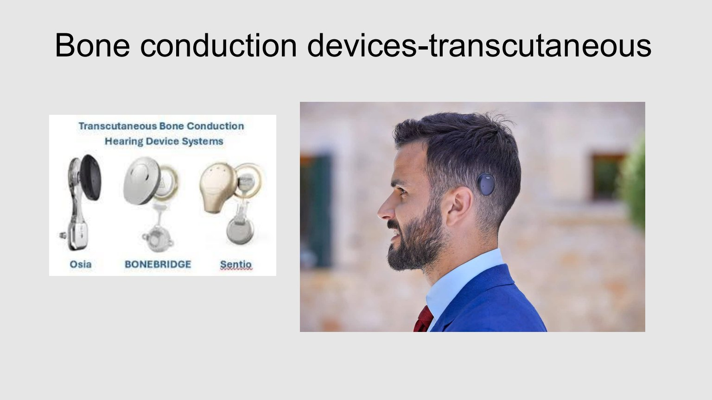</a></details><details><summary>Original extracted slide text</summary><pre class="transcript">Bone conduction devices-transcutaneous</pre></details></section><section class="slide" id="slide-av-44"><h3>Auditory &amp; vestibular disorders · original slide 44</h3><details><summary>Mapped concepts and practice</summary><ul><li><a href="index.html?q=Q017">Q017</a> — Both routes are impaired because they ultimately depend on the cochlea and auditory nerve. Similar air/bone thresholds do not mean normal hearing.</li><li><a href="index.html?q=Q049">Q049</a> — Implant electrodes stimulate spiral ganglion/auditory nerve pathways. Early appropriate auditory and language rehabilitation supports development; timing and candidacy are individualized.</li></ul></details><details><summary>Show full original slide and credits</summary><a href="images/av-044.jpg" target="_blank" rel="noopener">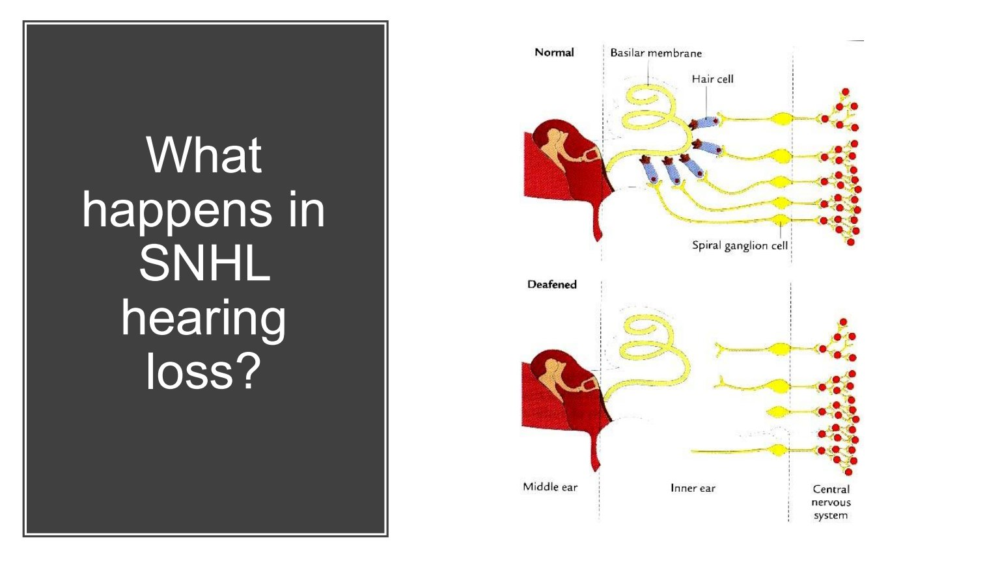</a></details><details><summary>Original extracted slide text</summary><pre class="transcript">What 
happens in 
SNHL 
hearing 
loss?</pre></details></section><section class="slide" id="slide-av-45"><h3>Auditory &amp; vestibular disorders · original slide 45</h3><details><summary>Mapped concepts and practice</summary><ul><li><a href="index.html?q=Q047">Q047</a> — A hearing aid uses a microphone, processing/amplification, and a receiver to deliver sound. It does not bypass cochlear transduction in the way an implant does.</li></ul></details><details><summary>Show full original slide and credits</summary><a href="images/av-045.jpg" target="_blank" rel="noopener">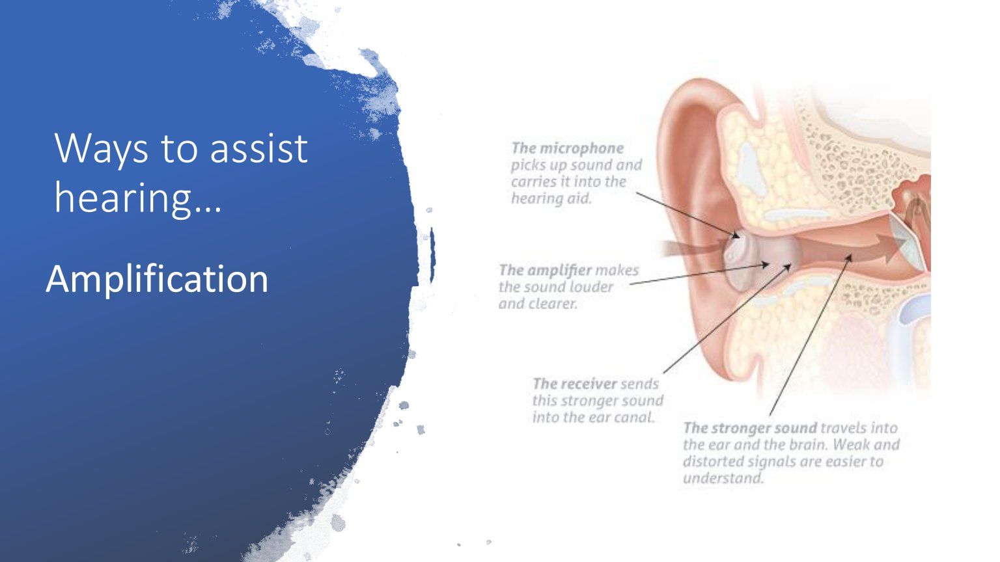</a></details><details><summary>Original extracted slide text</summary><pre class="transcript">Ways to assist 
hearing…
Amplification</pre></details></section><section class="slide" id="slide-av-46"><h3>Auditory &amp; vestibular disorders · original slide 46</h3><details><summary>Mapped concepts and practice</summary><ul><li><a href="index.html?q=Q049">Q049</a> — Implant electrodes stimulate spiral ganglion/auditory nerve pathways. Early appropriate auditory and language rehabilitation supports development; timing and candidacy are individualized.</li><li><a href="index.html?q=Q054">Q054</a> — Appropriate amplification, implantation when indicated, and language services support development. A good outcome in the lecture case is illustrative rather than guaranteed.</li><li><a href="index.html?q=Q288">Q288</a> — Recessive GJB2-related loss can occur in children of unaffected carrier parents. Connexin-26 dysfunction disrupts cochlear homeostasis; selected profound cases may benefit from implantation plus language rehabilitation.</li></ul></details><details><summary>Show full original slide and credits</summary><a href="images/av-046.jpg" target="_blank" rel="noopener">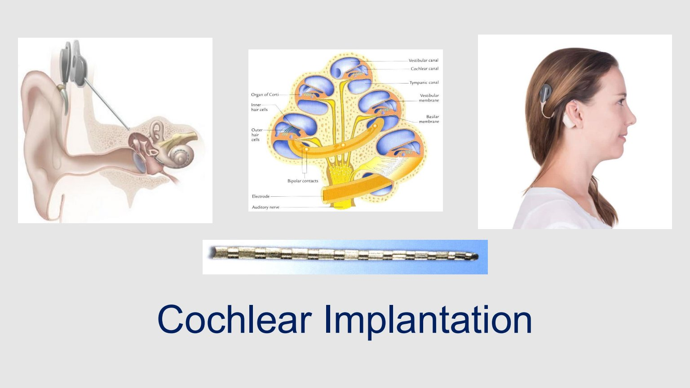</a></details><details><summary>Original extracted slide text</summary><pre class="transcript">Cochlear Implantation</pre></details></section><section class="slide" id="slide-av-47"><h3>Auditory &amp; vestibular disorders · original slide 47</h3><details><summary>Mapped concepts and practice</summary><ul><li><a href="index.html?q=Q009">Q009</a> — Aging-related cochlear and neural degeneration commonly causes symmetric SNHL and reduced word recognition. Noise exposure, vascular disease, smoking, and genetic susceptibility can contribute.</li><li><a href="index.html?q=Q014">Q014</a> — Presbycusis and prior noise injury can coexist. A symmetric high-frequency pattern is compatible with aging; a new major asymmetry requires separate evaluation.</li><li><a href="index.html?q=Q047">Q047</a> — A hearing aid uses a microphone, processing/amplification, and a receiver to deliver sound. It does not bypass cochlear transduction in the way an implant does.</li><li><a href="index.html?q=Q290">Q290</a> — Age-associated sensory and neural degeneration causes symmetric SNHL and impaired complex speech understanding. Multiple risk factors can contribute, but symmetry and gradual progression differ from sudden loss or a focal retrocochlear presentation.</li></ul></details><details><summary>Show full original slide and credits</summary><a href="images/av-047.jpg" target="_blank" rel="noopener">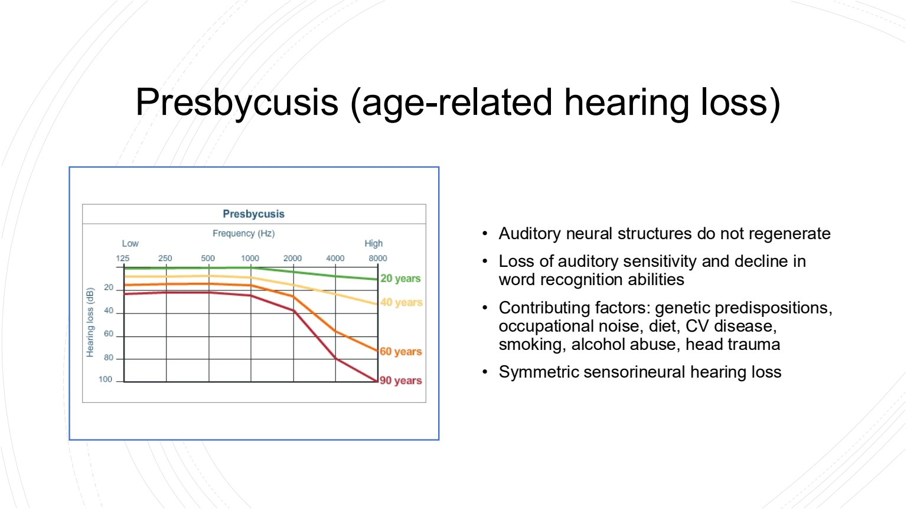</a></details><details><summary>Original extracted slide text</summary><pre class="transcript">Presbycusis (age-related hearing loss)
• Auditory neural structures do not regenerate 
• Loss of auditory sensitivity and decline in 
word recognition abilities
• Contributing factors: genetic predispositions, 
occupational noise, diet, CV disease, 
smoking, alcohol abuse, head trauma
• Symmetric sensorineural hearing loss</pre></details></section><section class="slide" id="slide-av-48"><h3>Auditory &amp; vestibular disorders · original slide 48</h3><details><summary>Mapped concepts and practice</summary><ul><li><a href="index.html?q=Q010">Q010</a> — Noise commonly damages the 3–6 kHz region. Human cochlear hair cells do not meaningfully regenerate, so persistent injury can produce permanent threshold shifts.</li><li><a href="index.html?q=Q014">Q014</a> — Presbycusis and prior noise injury can coexist. A symmetric high-frequency pattern is compatible with aging; a new major asymmetry requires separate evaluation.</li><li><a href="index.html?q=Q063">Q063</a> — A 5-dB increase halves duration under the OSHA exchange rule. This is separate from the more protective NIOSH 85-dBA/8-hour recommendation with a 3-dB exchange rate.</li><li><a href="index.html?q=Q064">Q064</a> — A 3-dB rise halves the duration under NIOSH. The lecture combines an 85-dBA warning with an OSHA-style 5-dB rule; the standards should not be conflated.</li><li><a href="index.html?q=Q065">Q065</a> — A reversible postexposure threshold change differs from persistent injury. Repeated exposure can still contribute to lasting damage.</li><li><a href="index.html?q=Q290">Q290</a> — Age-associated sensory and neural degeneration causes symmetric SNHL and impaired complex speech understanding. Multiple risk factors can contribute, but symmetry and gradual progression differ from sudden loss or a focal retrocochlear presentation.</li></ul></details><details><summary>Show full original slide and credits</summary><a href="images/av-048.jpg" target="_blank" rel="noopener">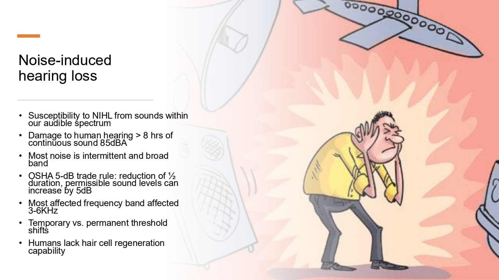</a></details><details><summary>Original extracted slide text</summary><pre class="transcript">Noise-induced 
hearing loss
• Susceptibility to NIHL from sounds within 
our audible spectrum
• Damage to human hearing &gt; 8 hrs of 
continuous sound 85dBA
• Most noise is intermittent and broad 
band
• OSHA 5-dB trade rule: reduction of ½ 
duration, permissible sound levels can 
increase by 5dB
• Most affected frequency band affected 
3-6KHz 
• Temporary vs. permanent threshold 
shifts
• Humans lack hair cell regeneration 
capability</pre></details></section><section class="slide" id="slide-av-49"><h3>Auditory &amp; vestibular disorders · original slide 49</h3><details><summary>Mapped concepts and practice</summary><ul><li><a href="index.html?q=Q011">Q011</a> — Cisplatin can cause irreversible outer hair cell injury, often initially affecting high frequencies. Baseline and follow-up auditory monitoring help detect toxicity.</li><li><a href="index.html?q=Q057">Q057</a> — Gentamicin can injure vestibular hair cells and cause persistent imbalance with gaze instability. Hearing may be relatively less affected in some patients.</li><li><a href="index.html?q=Q058">Q058</a> — Loop diuretics can reduce the endocochlear potential. Dose, infusion rate, renal status, and concurrent ototoxic exposures affect risk.</li><li><a href="index.html?q=Q059">Q059</a> — Salicylate-associated tinnitus and threshold changes are often reversible, unlike many aminoglycoside or platinum injuries.</li><li><a href="index.html?q=Q060">Q060</a> — Cisplatin cochleotoxicity is commonly permanent and can progress with cumulative exposure. This differs from the often reversible salicylate effect.</li><li><a href="index.html?q=Q061">Q061</a> — The basal cochlea encodes high frequencies, and outer hair cells are often more susceptible than inner hair cells. Initial high-frequency loss can precede wider impairment.</li><li><a href="index.html?q=Q062">Q062</a> — Risk reduction depends on the agent and indication. Audiometric monitoring is useful; no strategy guarantees complete protection.</li><li><a href="index.html?q=Q090">Q090</a> — Bilateral vestibular hair-cell injury reduces the VOR, causing oscillopsia with head movement. Loss of visual compensation worsens balance in darkness.</li><li><a href="index.html?q=Q286">Q286</a> — Risk patterns differ among agents, but all can injure inner-ear structures. Basal outer hair cells and vestibular sensory cells are important targets.</li><li><a href="index.html?q=Q296">Q296</a> — Bilateral vestibulotoxic injury reduces VOR function and produces head-motion oscillopsia. Darkness and unstable surfaces remove reliable alternative inputs; rehabilitation aims to improve compensation and remaining sensory use.</li></ul></details><details><summary>Show full original slide and credits</summary><a href="images/av-049.jpg" target="_blank" rel="noopener">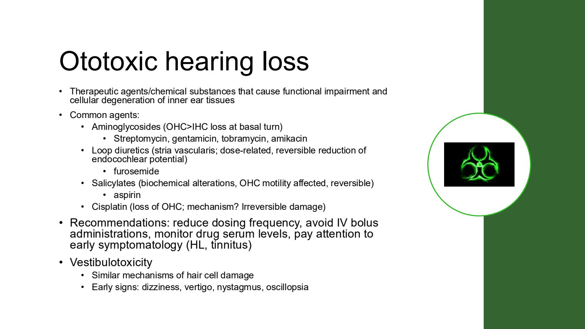</a></details><details><summary>Original extracted slide text</summary><pre class="transcript">Ototoxic hearing loss
• Therapeutic agents/chemical substances that cause functional impairment and 
cellular degeneration of inner ear tissues
• Common agents:
• Aminoglycosides (OHC&gt;IHC loss at basal turn) 
• Streptomycin, gentamicin, tobramycin, amikacin
• Loop diuretics (stria vascularis; dose-related, reversible reduction of 
endocochlear potential)
• furosemide
• Salicylates (biochemical alterations, OHC motility affected, reversible)
• aspirin
• Cisplatin (loss of OHC; mechanism? Irreversible damage)
• Recommendations: reduce dosing frequency, avoid IV bolus 
administrations, monitor drug serum levels, pay attention to 
early symptomatology (HL, tinnitus)
• Vestibulotoxicity
• Similar mechanisms of hair cell damage
• Early signs: dizziness, vertigo, nystagmus, oscillopsia</pre></details></section><section class="slide" id="slide-av-50"><h3>Auditory &amp; vestibular disorders · original slide 50</h3><details><summary>Mapped concepts and practice</summary><ul><li><a href="index.html?q=Q012">Q012</a> — The common definition is at least 30 dB across three contiguous frequencies within 72 hours. Prompt assessment distinguishes SNHL from conductive causes and supports time-sensitive treatment. </li><li><a href="index.html?q=Q052">Q052</a> — Sudden SNHL warrants urgent assessment. Corticosteroids may be offered early; intratympanic treatment has an important salvage role. Waiting months can miss a therapeutic window.</li><li><a href="index.html?q=Q291">Q291</a> — Abrupt cochlear/neural loss with the rule-of-threes threshold pattern is SSNHL. Normal otoscopy and a positive Rinne do not rule it out. Prompt treatment assessment matters even when the patient describes fullness rather than explicitly reporting deafness.</li></ul></details><details><summary>Show full original slide and credits</summary><a href="images/av-050.jpg" target="_blank" rel="noopener">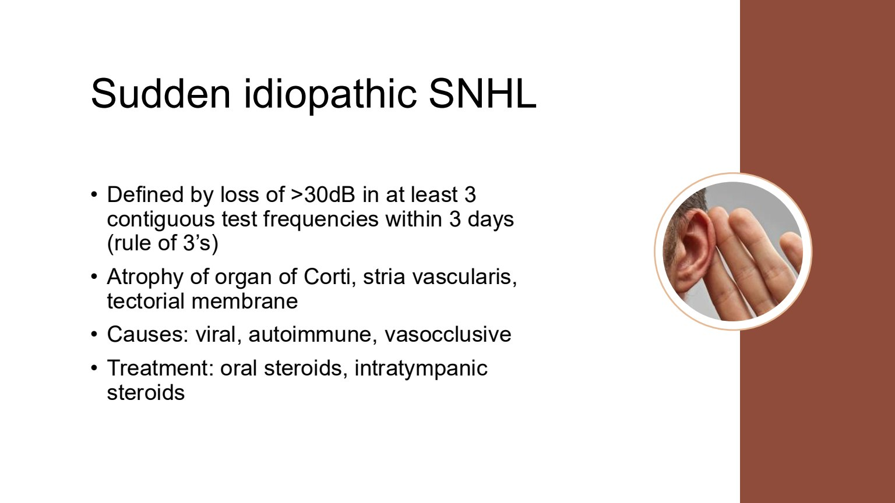</a></details><details><summary>Original extracted slide text</summary><pre class="transcript">Sudden idiopathic SNHL
• Defined by loss of &gt;30dB in at least 3 
contiguous test frequencies within 3 days 
(rule of 3’s)
• Atrophy of organ of Corti, stria vascularis, 
tectorial membrane
• Causes: viral, autoimmune, vasocclusive
• Treatment: oral steroids, intratympanic 
steroids</pre></details></section><section class="slide" id="slide-av-51"><h3>Auditory &amp; vestibular disorders · original slide 51</h3><details><summary>Mapped concepts and practice</summary><ul><li><a href="index.html?q=Q003">Q003</a> — Asymmetric SNHL with unilateral tinnitus prompts evaluation for retrocochlear pathology. The enhancing vestibular nerve mass supports vestibular schwannoma.</li><li><a href="index.html?q=Q030">Q030</a> — MRI evaluates vestibular nerve and cerebellopontine angle lesions. A normal otoscopic examination does not exclude such pathology.</li><li><a href="index.html?q=Q056">Q056</a> — The lecture uses these teaching thresholds. Actual MRI referral criteria vary; clinical context and the complete audiogram matter.</li><li><a href="index.html?q=Q289">Q289</a> — A vestibular nerve schwannoma can involve hearing through its internal canal/CPA location and produce imbalance. MRI identifies the lesion; the audiogram alone does not establish a tumor.</li></ul></details><details><summary>Show full original slide and credits</summary><a href="images/av-051.jpg" target="_blank" rel="noopener">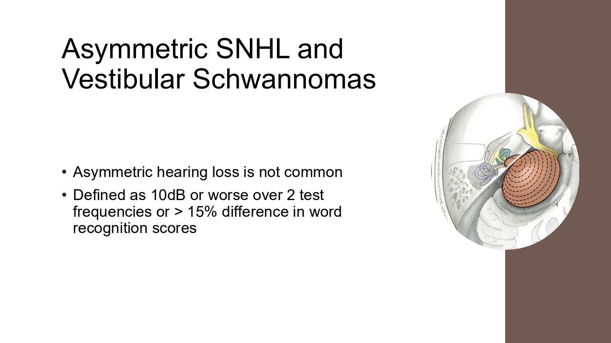</a></details><details><summary>Original extracted slide text</summary><pre class="transcript">Asymmetric SNHL and 
Vestibular Schwannomas
• Asymmetric hearing loss is not common
• Defined as 10dB or worse over 2 test 
frequencies or &gt; 15% difference in word 
recognition scores</pre></details></section><section class="slide" id="slide-av-52"><h3>Auditory &amp; vestibular disorders · original slide 52</h3><p>Title, objectives, outline, divider, or closing summary retained.</p><details><summary>Show full original slide and credits</summary><a href="images/av-052.jpg" target="_blank" rel="noopener"></a></details><details><summary>Original extracted slide text</summary><pre class="transcript">TINNITUS</pre></details></section><section class="slide" id="slide-av-53"><h3>Auditory &amp; vestibular disorders · original slide 53</h3><details><summary>Mapped concepts and practice</summary><ul><li><a href="index.html?q=Q066">Q066</a> — Tinnitus is sound perception without an external acoustic stimulus. Subjective tinnitus is perceived only by the affected person.</li></ul></details><details><summary>Show full original slide and credits</summary><a href="images/av-053.jpg" target="_blank" rel="noopener"></a></details><details><summary>Original extracted slide text</summary><pre class="transcript">TINNITUS
Definition
• Tinnitus: perception of noise in the absence of 
acoustic stimulus</pre></details></section><section class="slide" id="slide-av-54"><h3>Auditory &amp; vestibular disorders · original slide 54</h3><details><summary>Mapped concepts and practice</summary><ul><li><a href="index.html?q=Q066">Q066</a> — Tinnitus is sound perception without an external acoustic stimulus. Subjective tinnitus is perceived only by the affected person.</li><li><a href="index.html?q=Q067">Q067</a> — Pulse synchrony suggests a vascular mechanism. Some pulsatile tinnitus is not audible to an examiner, so pulsatile and objectively audible are overlapping rather than identical categories.</li></ul></details><details><summary>Show full original slide and credits</summary><a href="images/av-054.jpg" target="_blank" rel="noopener"></a></details><details><summary>Original extracted slide text</summary><pre class="transcript">TINNITUS
• Objective and subjective 
tinnitus
• Objective: that which is audible by 
physician or with pulsatile 
character
• Subjective: that which is audible 
by patient only
Tinnitus 
Help</pre></details></section><section class="slide" id="slide-av-55"><h3>Auditory &amp; vestibular disorders · original slide 55</h3><details><summary>Mapped concepts and practice</summary><ul><li><a href="index.html?q=Q067">Q067</a> — Pulse synchrony suggests a vascular mechanism. Some pulsatile tinnitus is not audible to an examiner, so pulsatile and objectively audible are overlapping rather than identical categories.</li><li><a href="index.html?q=Q068">Q068</a> — Middle-ear muscle spasm can create mechanically generated objective tinnitus. Tensor tympani and stapedius are the lecture examples.</li><li><a href="index.html?q=Q069">Q069</a> — Respiratory and phonatory autophony are characteristic clues. An open tube is different from the obstructive dysfunction treated by ventilation or selected balloon dilation.</li></ul></details><details><summary>Show full original slide and credits</summary><a href="images/av-055.jpg" target="_blank" rel="noopener"></a></details><details><summary>Original extracted slide text</summary><pre class="transcript">Objective Tinnitus
• Types of objective tinnitus
• Vascular
• Muscular
• Eustachian tube dysfunction</pre></details></section><section class="slide" id="slide-av-56"><h3>Auditory &amp; vestibular disorders · original slide 56</h3><details><summary>Mapped concepts and practice</summary><ul><li><a href="index.html?q=Q067">Q067</a> — Pulse synchrony suggests a vascular mechanism. Some pulsatile tinnitus is not audible to an examiner, so pulsatile and objectively audible are overlapping rather than identical categories.</li><li><a href="index.html?q=Q075">Q075</a> — The sound tracks circulation rather than ordinary external acoustic input. Vascular anatomy and pressure relationships guide the workup.</li></ul></details><details><summary>Show full original slide and credits</summary><a href="images/av-056.jpg" target="_blank" rel="noopener"></a></details><details><summary>Original extracted slide text</summary><pre class="transcript">Objective Tinnitus
Vascular</pre></details></section><section class="slide" id="slide-av-57"><h3>Auditory &amp; vestibular disorders · original slide 57</h3><details><summary>Mapped concepts and practice</summary><ul><li><a href="index.html?q=Q070">Q070</a> — A vascular middle-ear mass, such as a paraganglioma, can produce pulse-synchronous tinnitus. The image alone does not establish every possible vascular diagnosis; blind biopsy should be avoided.</li></ul></details><details><summary>Show full original slide and credits</summary><a href="images/av-057.jpg" target="_blank" rel="noopener"></a></details><details><summary>Original extracted slide text</summary><pre class="transcript">Objective Tinnitus
Vascular</pre></details></section><section class="slide" id="slide-av-58"><h3>Auditory &amp; vestibular disorders · original slide 58</h3><details><summary>Mapped concepts and practice</summary><ul><li><a href="index.html?q=Q067">Q067</a> — Pulse synchrony suggests a vascular mechanism. Some pulsatile tinnitus is not audible to an examiner, so pulsatile and objectively audible are overlapping rather than identical categories.</li><li><a href="index.html?q=Q075">Q075</a> — The sound tracks circulation rather than ordinary external acoustic input. Vascular anatomy and pressure relationships guide the workup.</li><li><a href="index.html?q=Q077">Q077</a> — Vascular and temporal-bone imaging are tailored to the history and examination; catheter angiography is reserved for selected cases rather than every patient.</li><li><a href="index.html?q=Q078">Q078</a> — Raised ICP can produce pulsatile tinnitus and papilledema. The diagnosis requires appropriate evaluation, not symptoms alone.</li></ul></details><details><summary>Show full original slide and credits</summary><a href="images/av-058.jpg" target="_blank" rel="noopener"></a></details><details><summary>Original extracted slide text</summary><pre class="transcript">Objective Tinnitus
Vascular
• Pulsatile sound
• Synchronous with heartbeat/pulse
• Tempo or rate increases with exercise
• Pathologies to consider:
• Arteriovenous shunts (intracranial or periauricular, congenital or 
acquired)
• Congenital AV malformations (direct connection between 
arterial and venous systems)
• Arterial bruits (from carotid or vertebral A systems, stenoses)
• Venous hums (related to HTN)
• Idiopathic intracranial hypertention</pre></details></section><section class="slide" id="slide-av-59"><h3>Auditory &amp; vestibular disorders · original slide 59</h3><details><summary>Mapped concepts and practice</summary><ul><li><a href="index.html?q=Q077">Q077</a> — Vascular and temporal-bone imaging are tailored to the history and examination; catheter angiography is reserved for selected cases rather than every patient.</li></ul></details><details><summary>Show full original slide and credits</summary><a href="images/av-059.jpg" target="_blank" rel="noopener"></a></details><details><summary>Original extracted slide text</summary><pre class="transcript">• Diagnosis: MRA/MRV; CT angiography; conventional 
angiography
Objective Tinnitus
Vascular</pre></details></section><section class="slide" id="slide-av-60"><h3>Auditory &amp; vestibular disorders · original slide 60</h3><details><summary>Mapped concepts and practice</summary><ul><li><a href="index.html?q=Q068">Q068</a> — Middle-ear muscle spasm can create mechanically generated objective tinnitus. Tensor tympani and stapedius are the lecture examples.</li><li><a href="index.html?q=Q076">Q076</a> — Middle-ear muscle activity can generate a real internally produced acoustic signal. This is distinct from a purely phantom nonpulsatile percept.</li></ul></details><details><summary>Show full original slide and credits</summary><a href="images/av-060.jpg" target="_blank" rel="noopener"></a></details><details><summary>Original extracted slide text</summary><pre class="transcript">Objective Tinnitus
Muscular
• Tensor tympani muscle/ 
stapedius muscle spasm</pre></details></section><section class="slide" id="slide-av-61"><h3>Auditory &amp; vestibular disorders · original slide 61</h3><details><summary>Mapped concepts and practice</summary><ul><li><a href="index.html?q=Q069">Q069</a> — Respiratory and phonatory autophony are characteristic clues. An open tube is different from the obstructive dysfunction treated by ventilation or selected balloon dilation.</li><li><a href="index.html?q=Q071">Q071</a> — Obstruction impairs pressure equalization and ventilation. Patulous dysfunction reflects excessive openness and has a different symptom pattern.</li></ul></details><details><summary>Show full original slide and credits</summary><a href="images/av-061.jpg" target="_blank" rel="noopener"></a></details><details><summary>Original extracted slide text</summary><pre class="transcript">Objective 
Tinnitus
Eustachian tube 
dysfunction
• Patulous Eustachian Tube
• Respiratory &amp; phonatory 
autophony
• Aural fullness</pre></details></section><section class="slide" id="slide-av-62"><h3>Auditory &amp; vestibular disorders · original slide 62</h3><p>Title, objectives, outline, divider, or closing summary retained.</p><details><summary>Show full original slide and credits</summary><a href="images/av-062.jpg" target="_blank" rel="noopener"></a></details><details><summary>Original extracted slide text</summary><pre class="transcript">Subjective Tinnitus</pre></details></section><section class="slide" id="slide-av-63"><h3>Auditory &amp; vestibular disorders · original slide 63</h3><details><summary>Mapped concepts and practice</summary><ul><li><a href="index.html?q=Q072">Q072</a> — The deafferentation/loss-of-inhibition model proposes compensatory central hyperactivity. It is a mechanistic framework rather than proof of one cause in every patient.</li><li><a href="index.html?q=Q073">Q073</a> — Spontaneous firing from injured or metabolically altered auditory fibers may contribute to phantom sound perception.</li><li><a href="index.html?q=Q074">Q074</a> — The disordered hair-cell theory links peripheral injury to abnormal signaling interpreted as sound. Central changes may coexist.</li></ul></details><details><summary>Show full original slide and credits</summary><a href="images/av-063.jpg" target="_blank" rel="noopener"></a></details><details><summary>Original extracted slide text</summary><pre class="transcript">Subjective Tinnitus
Causes/ Theories
• Disordered hair cell theory: hair cell injury from hearing loss causes repetitive 
discharge in a way that central auditory system does not discriminate from actual 
sound
• Spontaneous neural activity within individual nerve fibers of the auditory nerve 
originate from neural injury or metabolic abnormality
• Hyperactivity of nuclei in ascending auditory pathway stimulates different areas 
of auditory cortex in absence of acoustic stimulus</pre></details></section><section class="slide" id="slide-av-64"><h3>Auditory &amp; vestibular disorders · original slide 64</h3><details><summary>Mapped concepts and practice</summary><ul><li><a href="index.html?q=Q072">Q072</a> — The deafferentation/loss-of-inhibition model proposes compensatory central hyperactivity. It is a mechanistic framework rather than proof of one cause in every patient.</li></ul></details><details><summary>Show full original slide and credits</summary><a href="images/av-064.jpg" target="_blank" rel="noopener"></a></details><details><summary>Original extracted slide text</summary><pre class="transcript">Subjective Tinnitus
Causes/ Theories
• **Cochlear damage reduces suppressive influence of CNS allowing increase in 
neural activity at higher centers in the auditory system
DEAFFERENTATION- LOSS OF INHIBITION HYPOTHESIS OF TINNITUS</pre></details></section><section class="slide" id="slide-av-65"><h3>Auditory &amp; vestibular disorders · original slide 65</h3><details><summary>Mapped concepts and practice</summary><ul><li><a href="index.html?q=Q072">Q072</a> — The deafferentation/loss-of-inhibition model proposes compensatory central hyperactivity. It is a mechanistic framework rather than proof of one cause in every patient.</li></ul></details><details><summary>Show full original slide and credits</summary><a href="images/av-065.jpg" target="_blank" rel="noopener"></a></details><details><summary>Original extracted slide text</summary><pre class="transcript">Subjective Tinnitus
Causes/ Theories</pre></details></section><section class="slide" id="slide-av-66"><h3>Auditory &amp; vestibular disorders · original slide 66</h3><details><summary>Mapped concepts and practice</summary><ul><li><a href="index.html?q=Q079">Q079</a> — The deck emphasizes correlation with a high-frequency loss region, often 3–8 kHz. A population association is not a rule for every patient or proof of a specific lesion.</li></ul></details><details><summary>Show full original slide and credits</summary><a href="images/av-066.jpg" target="_blank" rel="noopener"></a></details><details><summary>Original extracted slide text</summary><pre class="transcript">Tinnitus
Common Presentation
• 75% with tinnitus have 30+ dB hearing loss from 3-8 KHz
• Pitch match of tinnitus correlates with frequency of hearing loss 
nadir</pre></details></section><section class="slide" id="slide-av-67"><h3>Auditory &amp; vestibular disorders · original slide 67</h3><details><summary>Mapped concepts and practice</summary><ul><li><a href="index.html?q=Q080">Q080</a> — Education, addressing hearing loss, and CBT-based approaches can reduce distress. Commercial supplement claims do not establish efficacy; treating anxiety or insomnia is distinct from curing tinnitus.</li></ul></details><details><summary>Show full original slide and credits</summary><a href="images/av-067.jpg" target="_blank" rel="noopener"></a></details><details><summary>Original extracted slide text</summary><pre class="transcript">Tinnitus
Treatment</pre></details></section><section class="slide" id="slide-av-68"><h3>Auditory &amp; vestibular disorders · original slide 68</h3><details><summary>Mapped concepts and practice</summary><ul><li><a href="index.html?q=Q080">Q080</a> — Education, addressing hearing loss, and CBT-based approaches can reduce distress. Commercial supplement claims do not establish efficacy; treating anxiety or insomnia is distinct from curing tinnitus.</li><li><a href="index.html?q=Q081">Q081</a> — Management is individualized. An antidepressant may treat comorbid depression without being a proven direct cure for the tinnitus percept.</li><li><a href="index.html?q=Q083">Q083</a> — Evidence-based tinnitus care distinguishes treatment of distress or comorbid conditions from direct suppression of the percept. Blanket use of these drug classes is not recommended solely for primary tinnitus.</li><li><a href="index.html?q=Q084">Q084</a> — High-dose salicylates can cause tinnitus. A blanket instruction to stop indicated antiplatelet therapy ignores the balance of cardiovascular benefit and auditory risk.</li></ul></details><details><summary>Show full original slide and credits</summary><a href="images/av-068.jpg" target="_blank" rel="noopener"></a></details><details><summary>Original extracted slide text</summary><pre class="transcript">Tinnitus
Treatment
• General lifestyle and dietary modifications:
• Reduce chocolate, caffeine, nicotine
• Avoid noisy environments
• Home masking techniques
• Avoid ASA-containing medications
• Treatment should be directed to associated conditions (targeted￾therapy)
• TMJ (TMJ treatment)
• Cervical muscular tension (muscle relaxant)
• Depression/anxiety disorder (SSRI/anxiolytic)
• Poor sleep patterns (melatonin)</pre></details></section><section class="slide" id="slide-av-69"><h3>Auditory &amp; vestibular disorders · original slide 69</h3><details><summary>Mapped concepts and practice</summary><ul><li><a href="index.html?q=Q080">Q080</a> — Education, addressing hearing loss, and CBT-based approaches can reduce distress. Commercial supplement claims do not establish efficacy; treating anxiety or insomnia is distinct from curing tinnitus.</li><li><a href="index.html?q=Q082">Q082</a> — Gabapentin is structurally related to GABA but is not a direct GABA receptor agonist. Its mechanism does not establish routine efficacy for primary tinnitus.</li><li><a href="index.html?q=Q083">Q083</a> — Evidence-based tinnitus care distinguishes treatment of distress or comorbid conditions from direct suppression of the percept. Blanket use of these drug classes is not recommended solely for primary tinnitus.</li></ul></details><details><summary>Show full original slide and credits</summary><a href="images/av-069.jpg" target="_blank" rel="noopener"></a></details><details><summary>Original extracted slide text</summary><pre class="transcript">Tinnitus
Medical Treatment
• Anti-depressants 
• Heterocyclics (nortriptyline) /SSRI (sertraline)
• Anti-convulsants
• Carbamazepine, gabapentin
• Tranquilizers 
• diazepam, clonazepam, oxazepam, alprazolam
• Rationale: 
• Enhance neural inhibition: GABA (inhibitory neurotransmitter) analogue 
such as gabapentin useful
• Maintain serotonin levels (serotonin is a chemical modulator of neural 
sensory systems)</pre></details></section><section class="slide" id="slide-av-70"><h3>Auditory &amp; vestibular disorders · original slide 70</h3><details><summary>Mapped concepts and practice</summary><ul><li><a href="index.html?q=Q080">Q080</a> — Education, addressing hearing loss, and CBT-based approaches can reduce distress. Commercial supplement claims do not establish efficacy; treating anxiety or insomnia is distinct from curing tinnitus.</li></ul></details><details><summary>Show full original slide and credits</summary><a href="images/av-070.jpg" target="_blank" rel="noopener"></a></details><details><summary>Original extracted slide text</summary><pre class="transcript">No machine-readable text; inspect the original image above.</pre></details></section><section class="slide" id="slide-av-71"><h3>Auditory &amp; vestibular disorders · original slide 71</h3><p>Title, objectives, outline, divider, or closing summary retained.</p><details><summary>Show full original slide and credits</summary><a href="images/av-071.jpg" target="_blank" rel="noopener"></a></details><details><summary>Original extracted slide text</summary><pre class="transcript">Vestibular System, 
Balance, Dizziness, &amp; 
Vestibulopathies</pre></details></section><section class="slide" id="slide-av-72"><h3>Auditory &amp; vestibular disorders · original slide 72</h3><details><summary>Mapped concepts and practice</summary><ul><li><a href="index.html?q=Q097">Q097</a> — The utricular macula is oriented to detect horizontal linear acceleration and head tilt. It belongs to the otolith system.</li><li><a href="index.html?q=Q098">Q098</a> — The saccule preferentially detects vertical linear acceleration. The semicircular canals encode angular acceleration rather than elevator translation.</li><li><a href="index.html?q=Q099">Q099</a> — Angular acceleration displaces endolymph relative to the canal and deflects the cupula over the crista hair cells.</li><li><a href="index.html?q=Q100">Q100</a> — Dislodged utricular otoconia can enter a semicircular canal or adhere to its cupula. They are not normally produced by cochlear auditory hair cells.</li><li><a href="index.html?q=Q101">Q101</a> — The organ of Corti in the cochlea supports hearing. Utricle, saccule, and canals support vestibular sensing.</li><li><a href="index.html?q=Q102">Q102</a> — Fluid inertia bends the cupula and hair bundles at the canal crista. Otolith maculae instead use an otoconial membrane for linear/gravitational signals.</li><li><a href="index.html?q=Q103">Q103</a> — Utricle and saccule contain otoconia. Canals use a cupula and endolymph dynamics to detect angular acceleration.</li></ul></details><details><summary>Show full original slide and credits</summary><a href="images/av-072.jpg" target="_blank" rel="noopener"></a></details><details><summary>Original extracted slide text</summary><pre class="transcript">Vestibular 
Endorgans</pre></details></section><section class="slide" id="slide-av-73"><h3>Auditory &amp; vestibular disorders · original slide 73</h3><details><summary>Mapped concepts and practice</summary><ul><li><a href="index.html?q=Q097">Q097</a> — The utricular macula is oriented to detect horizontal linear acceleration and head tilt. It belongs to the otolith system.</li><li><a href="index.html?q=Q098">Q098</a> — The saccule preferentially detects vertical linear acceleration. The semicircular canals encode angular acceleration rather than elevator translation.</li><li><a href="index.html?q=Q099">Q099</a> — Angular acceleration displaces endolymph relative to the canal and deflects the cupula over the crista hair cells.</li><li><a href="index.html?q=Q101">Q101</a> — The organ of Corti in the cochlea supports hearing. Utricle, saccule, and canals support vestibular sensing.</li><li><a href="index.html?q=Q102">Q102</a> — Fluid inertia bends the cupula and hair bundles at the canal crista. Otolith maculae instead use an otoconial membrane for linear/gravitational signals.</li><li><a href="index.html?q=Q103">Q103</a> — Utricle and saccule contain otoconia. Canals use a cupula and endolymph dynamics to detect angular acceleration.</li></ul></details><details><summary>Show full original slide and credits</summary><a href="images/av-073.jpg" target="_blank" rel="noopener"></a></details><details><summary>Original extracted slide text</summary><pre class="transcript">Vestibular Endorgans</pre></details></section><section class="slide" id="slide-av-74"><h3>Auditory &amp; vestibular disorders · original slide 74</h3><details><summary>Mapped concepts and practice</summary><ul><li><a href="index.html?q=Q085">Q085</a> — Balance integrates vision, proprioception, and vestibular input. Impairment of multiple inputs reduces redundancy and increases fall risk.</li><li><a href="index.html?q=Q104">Q104</a> — These inputs are integrated with CNS processing and motor output. Losing one increases dependence on the others.</li></ul></details><details><summary>Show full original slide and credits</summary><a href="images/av-074.jpg" target="_blank" rel="noopener"></a></details><details><summary>Original extracted slide text</summary><pre class="transcript">Maintaining Orientation and Balance</pre></details></section><section class="slide" id="slide-av-75"><h3>Auditory &amp; vestibular disorders · original slide 75</h3><details><summary>Mapped concepts and practice</summary><ul><li><a href="index.html?q=Q085">Q085</a> — Balance integrates vision, proprioception, and vestibular input. Impairment of multiple inputs reduces redundancy and increases fall risk.</li><li><a href="index.html?q=Q104">Q104</a> — These inputs are integrated with CNS processing and motor output. Losing one increases dependence on the others.</li></ul></details><details><summary>Show full original slide and credits</summary><a href="images/av-075.jpg" target="_blank" rel="noopener"></a></details><details><summary>Original extracted slide text</summary><pre class="transcript">Maintaining Orientation and Balance
VESTIBULAR
VISION PROPRIOCEPTION
BALANCE</pre></details></section><section class="slide" id="slide-av-76"><h3>Auditory &amp; vestibular disorders · original slide 76</h3><details><summary>Mapped concepts and practice</summary><ul><li><a href="index.html?q=Q105">Q105</a> — The VOR produces compensatory eye movement opposite head movement, maintaining gaze on a target.</li><li><a href="index.html?q=Q106">Q106</a> — Vestibular signals influence axial and limb motor activity to stabilize the body as the head and center of gravity move.</li></ul></details><details><summary>Show full original slide and credits</summary><a href="images/av-076.jpg" target="_blank" rel="noopener"></a></details><details><summary>Original extracted slide text</summary><pre class="transcript">VESTIBULAR
VISION PROPRIOCEPTION
BALANCE
VESTIBULAR
-Associated reflexes:
VESTIBULO-OCULAR REFLEX
VESTIBULO-SPINAL REFLEX</pre></details></section><section class="slide" id="slide-av-77"><h3>Auditory &amp; vestibular disorders · original slide 77</h3><details><summary>Mapped concepts and practice</summary><ul><li><a href="index.html?q=Q085">Q085</a> — Balance integrates vision, proprioception, and vestibular input. Impairment of multiple inputs reduces redundancy and increases fall risk.</li><li><a href="index.html?q=Q107">Q107</a> — Clear visual targets and coordinated eyes support orientation and gaze stability; cataracts and ocular motor disease can reduce these contributions.</li></ul></details><details><summary>Show full original slide and credits</summary><a href="images/av-077.jpg" target="_blank" rel="noopener"></a></details><details><summary>Original extracted slide text</summary><pre class="transcript">VESTIBULAR
VISION
PROPRIOCEPTION
BALANCE
• Visual acuity (clear vision)
• Oculomotor system
•Binocular vision</pre></details></section><section class="slide" id="slide-av-78"><h3>Auditory &amp; vestibular disorders · original slide 78</h3><details><summary>Mapped concepts and practice</summary><ul><li><a href="index.html?q=Q085">Q085</a> — Balance integrates vision, proprioception, and vestibular input. Impairment of multiple inputs reduces redundancy and increases fall risk.</li><li><a href="index.html?q=Q106">Q106</a> — Vestibular signals influence axial and limb motor activity to stabilize the body as the head and center of gravity move.</li><li><a href="index.html?q=Q108">Q108</a> — Joint and somatic input helps estimate body position and support postural corrections. Orthopedic and sensory problems can add to vestibular deficits.</li></ul></details><details><summary>Show full original slide and credits</summary><a href="images/av-078.jpg" target="_blank" rel="noopener"></a></details><details><summary>Original extracted slide text</summary><pre class="transcript">VESTIBULAR
VISION
PROPRIOCEPTION
BALANCE
• Sensory input from major 
joints (hips, knees, ankles)
• Center of gravity shifts to 
remain upright</pre></details></section><section class="slide" id="slide-av-79"><h3>Auditory &amp; vestibular disorders · original slide 79</h3><details><summary>Mapped concepts and practice</summary><ul><li><a href="index.html?q=Q109">Q109</a> — Balance systems can compensate for one impaired input by relying on the other two. This question concerns multisensory integration, not proof that every input is normal.</li><li><a href="index.html?q=Q110">Q110</a> — Removing visual compensation leaves greater dependence on proprioception. An abnormal balance test must be interpreted with sensory and motor examination.</li><li><a href="index.html?q=Q111">Q111</a> — Foam reduces the reliability of somatosensory information. When all three streams are compromised, redundancy is greatly reduced.</li><li><a href="index.html?q=Q112">Q112</a> — Restoring one reliable sensory stream can improve compensation for another deficit. Improvement does not necessarily mean vestibular hair cells regenerated.</li></ul></details><details><summary>Show full original slide and credits</summary><a href="images/av-079.jpg" target="_blank" rel="noopener"></a></details><details><summary>Original extracted slide text</summary><pre class="transcript">Maintaining Orientation and Balance
Sensory and Multisensory Conflict
VESTIBULAR
VISION PROPRIOCEPTION
BALANCE</pre></details></section><section class="slide" id="slide-av-80"><h3>Auditory &amp; vestibular disorders · original slide 80</h3><details><summary>Mapped concepts and practice</summary><ul><li><a href="index.html?q=Q109">Q109</a> — Balance systems can compensate for one impaired input by relying on the other two. This question concerns multisensory integration, not proof that every input is normal.</li><li><a href="index.html?q=Q110">Q110</a> — Removing visual compensation leaves greater dependence on proprioception. An abnormal balance test must be interpreted with sensory and motor examination.</li><li><a href="index.html?q=Q111">Q111</a> — Foam reduces the reliability of somatosensory information. When all three streams are compromised, redundancy is greatly reduced.</li><li><a href="index.html?q=Q112">Q112</a> — Restoring one reliable sensory stream can improve compensation for another deficit. Improvement does not necessarily mean vestibular hair cells regenerated.</li></ul></details><details><summary>Show full original slide and credits</summary><a href="images/av-080.jpg" target="_blank" rel="noopener"></a></details><details><summary>Original extracted slide text</summary><pre class="transcript">Maintaining Orientation and Balance
Sensory and Multisensory Conflict
VESTIBULAR
VISION PROPRIOCEPTION
BALANCE</pre></details></section><section class="slide" id="slide-av-81"><h3>Auditory &amp; vestibular disorders · original slide 81</h3><details><summary>Mapped concepts and practice</summary><ul><li><a href="index.html?q=Q110">Q110</a> — Removing visual compensation leaves greater dependence on proprioception. An abnormal balance test must be interpreted with sensory and motor examination.</li><li><a href="index.html?q=Q111">Q111</a> — Foam reduces the reliability of somatosensory information. When all three streams are compromised, redundancy is greatly reduced.</li></ul></details><details><summary>Show full original slide and credits</summary><a href="images/av-081.jpg" target="_blank" rel="noopener"></a></details><details><summary>Original extracted slide text</summary><pre class="transcript">Maintaining Orientation and Balance
Sensory and Multisensory Conflict
VESTIBULAR
VISION PROPRIOCEPTION
BALANCE</pre></details></section><section class="slide" id="slide-av-82"><h3>Auditory &amp; vestibular disorders · original slide 82</h3><details><summary>Mapped concepts and practice</summary><ul><li><a href="index.html?q=Q111">Q111</a> — Foam reduces the reliability of somatosensory information. When all three streams are compromised, redundancy is greatly reduced.</li></ul></details><details><summary>Show full original slide and credits</summary><a href="images/av-082.jpg" target="_blank" rel="noopener"></a></details><details><summary>Original extracted slide text</summary><pre class="transcript">Maintaining Orientation and Balance
Sensory and Multisensory Conflict
VESTIBULAR
VISION PROPRIOCEPTION
BALANCE</pre></details></section><section class="slide" id="slide-av-83"><h3>Auditory &amp; vestibular disorders · original slide 83</h3><details><summary>Mapped concepts and practice</summary><ul><li><a href="index.html?q=Q112">Q112</a> — Restoring one reliable sensory stream can improve compensation for another deficit. Improvement does not necessarily mean vestibular hair cells regenerated.</li></ul></details><details><summary>Show full original slide and credits</summary><a href="images/av-083.jpg" target="_blank" rel="noopener"></a></details><details><summary>Original extracted slide text</summary><pre class="transcript">Maintaining Orientation and Balance
Sensory and Multisensory Conflict
VESTIBULAR
VISION PROPRIOCEPTION
BALANCE</pre></details></section><section class="slide" id="slide-av-84"><h3>Auditory &amp; vestibular disorders · original slide 84</h3><details><summary>Mapped concepts and practice</summary><ul><li><a href="index.html?q=Q091">Q091</a> — Neurologic deficits and central ocular motor signs raise concern for posterior circulation disease. These should not be attributed to a benign peripheral diagnosis without evaluation.</li><li><a href="index.html?q=Q092">Q092</a> — Migraine-associated vestibular episodes are a common dizziness differential shown in the lecture diagram. The history differs from the cochlear tetrad of Meniere disease.</li><li><a href="index.html?q=Q093">Q093</a> — Dizziness is a broad symptom. Orthostatic hypoperfusion is distinguished from vestibular vertigo by triggers, associated symptoms, and measured hemodynamics.</li></ul></details><details><summary>Show full original slide and credits</summary><a href="images/av-084.jpg" target="_blank" rel="noopener"></a></details><details><summary>Original extracted slide text</summary><pre class="transcript">Dizziness</pre></details></section><section class="slide" id="slide-av-85"><h3>Auditory &amp; vestibular disorders · original slide 85</h3><details><summary>Mapped concepts and practice</summary><ul><li><a href="index.html?q=Q086">Q086</a> — Brief position-triggered spells and the characteristic positional nystagmus indicate posterior canal BPPV, usually from utricular otoconia in the canal.</li><li><a href="index.html?q=Q087">Q087</a> — Vestibular neuritis affects vestibular function without the new cochlear loss expected in labyrinthitis. Symptoms peak early and improve as peripheral recovery and central compensation occur.</li><li><a href="index.html?q=Q088">Q088</a> — Cochlear plus vestibular involvement suggests labyrinthitis. Suppurative disease can spread from middle ear or meninges and requires urgent infection-directed care.</li><li><a href="index.html?q=Q089">Q089</a> — The classic tetrad is episodic vertigo, fluctuating hearing loss, tinnitus, and fullness. Attacks last much longer than typical posterior canal BPPV.</li><li><a href="index.html?q=Q090">Q090</a> — Bilateral vestibular hair-cell injury reduces the VOR, causing oscillopsia with head movement. Loss of visual compensation worsens balance in darkness.</li><li><a href="index.html?q=Q091">Q091</a> — Neurologic deficits and central ocular motor signs raise concern for posterior circulation disease. These should not be attributed to a benign peripheral diagnosis without evaluation.</li><li><a href="index.html?q=Q292">Q292</a> — Brief positional attacks with the characteristic posterior-canal nystagmus support BPPV. Epley addresses displaced otoconia; it is more appropriate than routine chronic suppression or assuming the symptoms are Meniere attacks.</li><li><a href="index.html?q=Q293">Q293</a> — Vestibular neuritis causes a sustained acute vestibular syndrome, unlike seconds-long triggered BPPV. Preserved hearing distinguishes it from classic labyrinthitis; recovery depends partly on central compensation.</li></ul></details><details><summary>Show full original slide and credits</summary><a href="images/av-085.jpg" target="_blank" rel="noopener"></a></details><details><summary>Original extracted slide text</summary><pre class="transcript">PERIPHERAL LABYRINTHINE 
DISORDERS
• Benign Paroxysmal Positional Vertigo
• Vestibular neuritis/ labyrinthitis
• Meniere’s disease
• Vestibulotoxicity</pre></details></section><section class="slide" id="slide-av-86"><h3>Auditory &amp; vestibular disorders · original slide 86</h3><details><summary>Mapped concepts and practice</summary><ul><li><a href="index.html?q=Q086">Q086</a> — Brief position-triggered spells and the characteristic positional nystagmus indicate posterior canal BPPV, usually from utricular otoconia in the canal.</li><li><a href="index.html?q=Q094">Q094</a> — Head movement worsens many vestibular disorders, but BPPV is characterized by brief triggered episodes. A sustained acute vestibular syndrome requires a broader, including central, evaluation.</li><li><a href="index.html?q=Q100">Q100</a> — Dislodged utricular otoconia can enter a semicircular canal or adhere to its cupula. They are not normally produced by cochlear auditory hair cells.</li><li><a href="index.html?q=Q113">Q113</a> — Both involve displaced otoconia. Particle location changes the mechanics and can affect nystagmus duration and response to maneuvers.</li><li><a href="index.html?q=Q114">Q114</a> — The response is aligned with the posterior canal and often has a short latency and fatigability. The lecture&#x27;s geotropic shorthand should not replace the full torsional-upbeat description.</li><li><a href="index.html?q=Q115">Q115</a> — Sequential head/body positions use gravity to clear particles from the posterior canal. It is a mechanical repositioning treatment.</li><li><a href="index.html?q=Q116">Q116</a> — Repositioning targets the cause. Routine long-term suppressants can cause sedation and do not clear the displaced particles.</li><li><a href="index.html?q=Q292">Q292</a> — Brief positional attacks with the characteristic posterior-canal nystagmus support BPPV. Epley addresses displaced otoconia; it is more appropriate than routine chronic suppression or assuming the symptoms are Meniere attacks.</li></ul></details><details><summary>Show full original slide and credits</summary><a href="images/av-086.jpg" target="_blank" rel="noopener"></a></details><details><summary>Original extracted slide text</summary><pre class="transcript">COMMON PERIPHERAL 
LABYRINTHINE DISORDERS
• Benign Paroxysmal Positional Vertigo (BPPV)
• Cupulolithiasis/ Canalithiasis: Loose otoconial particles 
from posterior SCC from utricle
• Positionally induced vertigo, lasting seconds
• Provoking positions: turn over in bed, get in/out of bed, 
bending over, extend neck to look up and back
• + Dix-Hallpike positioning test: torsional vertical positional 
nystagmus in plane of posterior SCC
• Treatment: Canalith repositioning maneuver (Epley 
maneuver)</pre></details></section><section class="slide" id="slide-av-87"><h3>Auditory &amp; vestibular disorders · original slide 87</h3><details><summary>Mapped concepts and practice</summary><ul><li><a href="index.html?q=Q086">Q086</a> — Brief position-triggered spells and the characteristic positional nystagmus indicate posterior canal BPPV, usually from utricular otoconia in the canal.</li><li><a href="index.html?q=Q100">Q100</a> — Dislodged utricular otoconia can enter a semicircular canal or adhere to its cupula. They are not normally produced by cochlear auditory hair cells.</li><li><a href="index.html?q=Q113">Q113</a> — Both involve displaced otoconia. Particle location changes the mechanics and can affect nystagmus duration and response to maneuvers.</li></ul></details><details><summary>Show full original slide and credits</summary><a href="images/av-087.jpg" target="_blank" rel="noopener"></a></details><details><summary>Original extracted slide text</summary><pre class="transcript">BENIGN PAROXYSMAL POSITIONAL VERTIGO</pre></details></section><section class="slide" id="slide-av-88"><h3>Auditory &amp; vestibular disorders · original slide 88</h3><details><summary>Mapped concepts and practice</summary><ul><li><a href="index.html?q=Q086">Q086</a> — Brief position-triggered spells and the characteristic positional nystagmus indicate posterior canal BPPV, usually from utricular otoconia in the canal.</li><li><a href="index.html?q=Q114">Q114</a> — The response is aligned with the posterior canal and often has a short latency and fatigability. The lecture&#x27;s geotropic shorthand should not replace the full torsional-upbeat description.</li><li><a href="index.html?q=Q292">Q292</a> — Brief positional attacks with the characteristic posterior-canal nystagmus support BPPV. Epley addresses displaced otoconia; it is more appropriate than routine chronic suppression or assuming the symptoms are Meniere attacks.</li></ul></details><details><summary>Show full original slide and credits</summary><a href="images/av-088.jpg" target="_blank" rel="noopener"></a></details><details><summary>Original extracted slide text</summary><pre class="transcript">Dix-Hallpike test for BPPV
• Look for rotary, jerk nystagmus
• Geotropic (toward lowermost 
involved ear) rotational 
nystagmus</pre></details></section><section class="slide" id="slide-av-89"><h3>Auditory &amp; vestibular disorders · original slide 89</h3><details><summary>Mapped concepts and practice</summary><ul><li><a href="index.html?q=Q115">Q115</a> — Sequential head/body positions use gravity to clear particles from the posterior canal. It is a mechanical repositioning treatment.</li><li><a href="index.html?q=Q116">Q116</a> — Repositioning targets the cause. Routine long-term suppressants can cause sedation and do not clear the displaced particles.</li><li><a href="index.html?q=Q292">Q292</a> — Brief positional attacks with the characteristic posterior-canal nystagmus support BPPV. Epley addresses displaced otoconia; it is more appropriate than routine chronic suppression or assuming the symptoms are Meniere attacks.</li></ul></details><details><summary>Show full original slide and credits</summary><a href="images/av-089.jpg" target="_blank" rel="noopener"></a></details><details><summary>Original extracted slide text</summary><pre class="transcript">Epley Maneuver for BPPV</pre></details></section><section class="slide" id="slide-av-90"><h3>Auditory &amp; vestibular disorders · original slide 90</h3><details><summary>Mapped concepts and practice</summary><ul><li><a href="index.html?q=Q087">Q087</a> — Vestibular neuritis affects vestibular function without the new cochlear loss expected in labyrinthitis. Symptoms peak early and improve as peripheral recovery and central compensation occur.</li><li><a href="index.html?q=Q094">Q094</a> — Head movement worsens many vestibular disorders, but BPPV is characterized by brief triggered episodes. A sustained acute vestibular syndrome requires a broader, including central, evaluation.</li><li><a href="index.html?q=Q117">Q117</a> — Pure vestibular neuritis usually spares hearing. Acute hearing loss with vertigo can also occur in vascular disease, so it should not automatically be assumed benign.</li><li><a href="index.html?q=Q120">Q120</a> — Brief symptom-directed medication may help acutely, while activity and vestibular rehabilitation support compensation. Corticosteroid benefit is context-dependent rather than guaranteed.</li><li><a href="index.html?q=Q293">Q293</a> — Vestibular neuritis causes a sustained acute vestibular syndrome, unlike seconds-long triggered BPPV. Preserved hearing distinguishes it from classic labyrinthitis; recovery depends partly on central compensation.</li></ul></details><details><summary>Show full original slide and credits</summary><a href="images/av-090.jpg" target="_blank" rel="noopener"></a></details><details><summary>Original extracted slide text</summary><pre class="transcript">COMMON 
PERIPHERAL 
LABYRINTHINE 
DISORDERS
• Vestibular Neuritis
• Inflammation of labyrinth or vestibular 
nerve from viral
• Acute onset vertigo (peak at 24 hours), 
duration for days, and gradual 
improvement over weeks
• 20-30% have recurrence
• usually not associated hearing loss
• Treatment: vestibular suppressants, 
antiemetics, corticosteorids</pre></details></section><section class="slide" id="slide-av-91"><h3>Auditory &amp; vestibular disorders · original slide 91</h3><details><summary>Mapped concepts and practice</summary><ul><li><a href="index.html?q=Q088">Q088</a> — Cochlear plus vestibular involvement suggests labyrinthitis. Suppurative disease can spread from middle ear or meninges and requires urgent infection-directed care.</li><li><a href="index.html?q=Q095">Q095</a> — Labyrinthitis involves cochlear as well as vestibular structures. Meniere disease is typically episodic and not defined by an acute infectious spread.</li><li><a href="index.html?q=Q118">Q118</a> — The lecture lists middle-ear routes, internal auditory canal, and cochlear aqueduct. Toxic/inflammatory mediators and frank bacteria can cause different severities.</li><li><a href="index.html?q=Q119">Q119</a> — Vestibular suppressants or antiemetics alone do not control bacterial infection. Steroids may be considered in selected circumstances, but cannot replace antibiotics/source management.</li><li><a href="index.html?q=Q294">Q294</a> — Labyrinthine involvement causes vertigo plus hearing loss. In a bacterial context, antibiotics and source management are essential; antiemetics or steroids cannot substitute for control of suppurative infection.</li></ul></details><details><summary>Show full original slide and credits</summary><a href="images/av-091.jpg" target="_blank" rel="noopener"></a></details><details><summary>Original extracted slide text</summary><pre class="transcript">COMMON 
PERIPHERAL 
LABYRINTHINE 
DISORDERS
• Serous / suppurative labyrinthitis
• Infection of the labyrinth
• Entry of infection from middle ear or 
intracranial cavity (meningitis, internal 
auditory canal, cochlear aqueduct)
• May have entry of inflammatory 
mediators / toxins / bacteria
• Features hearing loss
• Treatment: vestibular suppressants, 
antiemetics, corticosteorids + 
ANTIBIOTICS</pre></details></section><section class="slide" id="slide-av-92"><h3>Auditory &amp; vestibular disorders · original slide 92</h3><details><summary>Mapped concepts and practice</summary><ul><li><a href="index.html?q=Q089">Q089</a> — The classic tetrad is episodic vertigo, fluctuating hearing loss, tinnitus, and fullness. Attacks last much longer than typical posterior canal BPPV.</li><li><a href="index.html?q=Q129">Q129</a> — Endolymphatic hydrops is the classic correlate, including enlargement of the cochlear duct. Hydrops and symptoms have a complex relationship, so it is not a complete single-cause explanation in every case.</li><li><a href="index.html?q=Q295">Q295</a> — The classic tetrad and duration favor Meniere disease. Endolymphatic hydrops is its characteristic histopathologic correlate, though the causal relationship and individual course are complex.</li></ul></details><details><summary>Show full original slide and credits</summary><a href="images/av-092.jpg" target="_blank" rel="noopener"></a></details><details><summary>Original extracted slide text</summary><pre class="transcript">Meniere’s disease
• Symptom complex described by Prosper Ménière
in 1861
• Spontaneous episodic vertigo
• Tinnitus
• Fluctuating hearing loss
• Aural fullness
• Histopathologic correlate described independently 
by Hallpike &amp; Cairns and Yamakawa (1938): 
endolymphatic hydrops</pre></details></section><section class="slide" id="slide-av-93"><h3>Auditory &amp; vestibular disorders · original slide 93</h3><details><summary>Mapped concepts and practice</summary><ul><li><a href="index.html?q=Q129">Q129</a> — Endolymphatic hydrops is the classic correlate, including enlargement of the cochlear duct. Hydrops and symptoms have a complex relationship, so it is not a complete single-cause explanation in every case.</li><li><a href="index.html?q=Q295">Q295</a> — The classic tetrad and duration favor Meniere disease. Endolymphatic hydrops is its characteristic histopathologic correlate, though the causal relationship and individual course are complex.</li></ul></details><details><summary>Show full original slide and credits</summary><a href="images/av-093.jpg" target="_blank" rel="noopener"></a></details><details><summary>Original extracted slide text</summary><pre class="transcript">Endolymphatic Hydrops</pre></details></section><section class="slide" id="slide-av-94"><h3>Auditory &amp; vestibular disorders · original slide 94</h3><details><summary>Mapped concepts and practice</summary><ul><li><a href="index.html?q=Q129">Q129</a> — Endolymphatic hydrops is the classic correlate, including enlargement of the cochlear duct. Hydrops and symptoms have a complex relationship, so it is not a complete single-cause explanation in every case.</li><li><a href="index.html?q=Q295">Q295</a> — The classic tetrad and duration favor Meniere disease. Endolymphatic hydrops is its characteristic histopathologic correlate, though the causal relationship and individual course are complex.</li></ul></details><details><summary>Show full original slide and credits</summary><a href="images/av-094.jpg" target="_blank" rel="noopener"></a></details><details><summary>Original extracted slide text</summary><pre class="transcript">MENIERE’S DISEASE
DISTENTION OF 
ENDOLYMPHATIC 
COMPARTMENT</pre></details></section><section class="slide" id="slide-av-95"><h3>Auditory &amp; vestibular disorders · original slide 95</h3><details><summary>Mapped concepts and practice</summary><ul><li><a href="index.html?q=Q129">Q129</a> — Endolymphatic hydrops is the classic correlate, including enlargement of the cochlear duct. Hydrops and symptoms have a complex relationship, so it is not a complete single-cause explanation in every case.</li><li><a href="index.html?q=Q130">Q130</a> — They help maintain the specialized endolymph ionic environment. Disrupted secretion, resorption, or homeostasis can contribute to hydrops.</li><li><a href="index.html?q=Q295">Q295</a> — The classic tetrad and duration favor Meniere disease. Endolymphatic hydrops is its characteristic histopathologic correlate, though the causal relationship and individual course are complex.</li></ul></details><details><summary>Show full original slide and credits</summary><a href="images/av-095.jpg" target="_blank" rel="noopener"></a></details><details><summary>Original extracted slide text</summary><pre class="transcript">Endolymphatic Hydrops &amp; Meniere’s disease: a complex 
relationship
• Endolymph produced by stria vascularis and dark cells of 
the vestibular labyrinth
• Endolymphatic hydrops might result from overproduction 
or under-resorption of endolymph
• Local alteration of the biochemical environment &amp; 
homeostasis of the labyrinth</pre></details></section><section class="slide" id="slide-av-96"><h3>Auditory &amp; vestibular disorders · original slide 96</h3><details><summary>Mapped concepts and practice</summary><ul><li><a href="index.html?q=Q089">Q089</a> — The classic tetrad is episodic vertigo, fluctuating hearing loss, tinnitus, and fullness. Attacks last much longer than typical posterior canal BPPV.</li><li><a href="index.html?q=Q095">Q095</a> — Labyrinthitis involves cochlear as well as vestibular structures. Meniere disease is typically episodic and not defined by an acute infectious spread.</li><li><a href="index.html?q=Q131">Q131</a> — Low-frequency cochlear impairment can accompany attacks; hearing may progressively worsen and flatten over time. Bilateral involvement is possible but not inevitable.</li><li><a href="index.html?q=Q295">Q295</a> — The classic tetrad and duration favor Meniere disease. Endolymphatic hydrops is its characteristic histopathologic correlate, though the causal relationship and individual course are complex.</li></ul></details><details><summary>Show full original slide and credits</summary><a href="images/av-096.jpg" target="_blank" rel="noopener"></a></details><details><summary>Original extracted slide text</summary><pre class="transcript">Meniere’s disease: Presentation 
(classic tetrad)
• Episodic vertigo (minutes to hrs)
• Fluctuating hearing loss (50-70%) (low 
frequency)
• Tinnitus (roaring, gets louder with attacks)
• Aural fullness (50-70%)
• Progression of Meniere’s disease to contralateral 
ear (up to 50%)</pre></details></section><section class="slide" id="slide-av-97"><h3>Auditory &amp; vestibular disorders · original slide 97</h3><details><summary>Mapped concepts and practice</summary><ul><li><a href="index.html?q=Q096">Q096</a> — A late &#x27;burnt-out&#x27; pattern can include reduced attack frequency with chronic disequilibrium and lasting hearing loss. The lecture’s 50-dB/50%-WRS description is illustrative rather than universal.</li><li><a href="index.html?q=Q131">Q131</a> — Low-frequency cochlear impairment can accompany attacks; hearing may progressively worsen and flatten over time. Bilateral involvement is possible but not inevitable.</li><li><a href="index.html?q=Q295">Q295</a> — The classic tetrad and duration favor Meniere disease. Endolymphatic hydrops is its characteristic histopathologic correlate, though the causal relationship and individual course are complex.</li></ul></details><details><summary>Show full original slide and credits</summary><a href="images/av-097.jpg" target="_blank" rel="noopener"></a></details><details><summary>Original extracted slide text</summary><pre class="transcript">Course of Meniere’s Disease
• Spontaneous attacks of vertigo in clusters or on 
regular schedule
• Fluctuating hearing loss leading to progressive 
hearing loss
• Periods of remission for years followed by 
recurrence
• Burnt-out phase: 
• no more acute attacks of vertigo
• chronic dysequilibrium
• hearing stabilizes at 50dB flat audiometric 
configuration, 50% WRS</pre></details></section><section class="slide" id="slide-av-98"><h3>Auditory &amp; vestibular disorders · original slide 98</h3><details><summary>Mapped concepts and practice</summary><ul><li><a href="index.html?q=Q121">Q121</a> — Meclizine or selected sedating agents reduce acute vestibular symptoms; antiemetics such as ondansetron address nausea. Ondansetron is not a vestibular suppressant in the same mechanistic sense.</li><li><a href="index.html?q=Q132">Q132</a> — The deck includes sodium reduction, moderation of caffeine/alcohol, sleep, and diuretics. Evidence varies and betahistine availability differs by country; these are not guaranteed cures.</li></ul></details><details><summary>Show full original slide and credits</summary><a href="images/av-098.jpg" target="_blank" rel="noopener"></a></details><details><summary>Original extracted slide text</summary><pre class="transcript">Medical Management
• Symptomatic treatment
• Vestibular suppressants: meclizine, valium, 
clonazepam, phenergan, ondansetron
• Dietary modifications
• Low sodium diet (&lt; 2 grams/ day)
• Reduce caffeine, alcohol intake
• General health maintenance: sleep, rest, control 
allergies, thyroid, DM control, avoid hormonal 
fluxes</pre></details></section><section class="slide" id="slide-av-99"><h3>Auditory &amp; vestibular disorders · original slide 99</h3><details><summary>Mapped concepts and practice</summary><ul><li><a href="index.html?q=Q132">Q132</a> — The deck includes sodium reduction, moderation of caffeine/alcohol, sleep, and diuretics. Evidence varies and betahistine availability differs by country; these are not guaranteed cures.</li><li><a href="index.html?q=Q133">Q133</a> — Diamox inhibits carbonic anhydrase. The same class also reduces aqueous production in ophthalmology; clinical use and risk assessment depend on the indication.</li><li><a href="index.html?q=Q134">Q134</a> — The combination pairs a thiazide with a potassium-sparing agent. Calling the entire product simply a potassium-sparing class omits its thiazide component.</li><li><a href="index.html?q=Q135">Q135</a> — It has histaminergic actions and is proposed to affect inner-ear circulation/neurotransmission. Efficacy certainty and regulatory availability vary; it is not a universal proven cure.</li></ul></details><details><summary>Show full original slide and credits</summary><a href="images/av-099.jpg" target="_blank" rel="noopener"></a></details><details><summary>Original extracted slide text</summary><pre class="transcript">Medical Management
• Diuretics
• Classes of diuretics used: thiazide (HCTZ), potassium sparing (Dyazide, Maxzide), 
carbonic anhydrase inhibitor (Diamox)\
• Vasodilators
• Betahistine (Serc)
• Oral analogue of histamine
• Causes capillary dilation</pre></details></section><section class="slide" id="slide-av-100"><h3>Auditory &amp; vestibular disorders · original slide 100</h3><details><summary>Mapped concepts and practice</summary><ul><li><a href="index.html?q=Q122">Q122</a> — This is a sac-directed nonablative operation. The presence of hydrops does not guarantee success, and evidence/selection must be discussed.</li></ul></details><details><summary>Show full original slide and credits</summary><a href="images/av-100.jpg" target="_blank" rel="noopener"></a></details><details><summary>Original extracted slide text</summary><pre class="transcript">Surgical Treatment
• Endolymphatic sac shunt / decompression</pre></details></section><section class="slide" id="slide-av-101"><h3>Auditory &amp; vestibular disorders · original slide 101</h3><details><summary>Mapped concepts and practice</summary><ul><li><a href="index.html?q=Q123">Q123</a> — Labyrinthectomy is ablative and sacrifices residual hearing. Compensation requires an effective contralateral system and central adaptation.</li></ul></details><details><summary>Show full original slide and credits</summary><a href="images/av-101.jpg" target="_blank" rel="noopener"></a></details><details><summary>Original extracted slide text</summary><pre class="transcript">Surgical Treatment
• Labyrinthectomy</pre></details></section><section class="slide" id="slide-av-102"><h3>Auditory &amp; vestibular disorders · original slide 102</h3><details><summary>Mapped concepts and practice</summary><ul><li><a href="index.html?q=Q124">Q124</a> — Vestibular neurectomy may preserve hearing better than labyrinthectomy, though surgery carries intracranial and cranial nerve risks.</li></ul></details><details><summary>Show full original slide and credits</summary><a href="images/av-102.jpg" target="_blank" rel="noopener"></a></details><details><summary>Original extracted slide text</summary><pre class="transcript">Surgical Treatment
• Vestibular Nerve Section</pre></details></section><section class="slide" id="slide-av-103"><h3>Auditory &amp; vestibular disorders · original slide 103</h3><details><summary>Mapped concepts and practice</summary><ul><li><a href="index.html?q=Q125">Q125</a> — Gentamicin crosses into the inner ear and exploits vestibulotoxicity to reduce attacks. Hearing damage and excessive vestibular loss remain important risks.</li></ul></details><details><summary>Show full original slide and credits</summary><a href="images/av-103.jpg" target="_blank" rel="noopener"></a></details><details><summary>Original extracted slide text</summary><pre class="transcript">Intratympanic Gentamicin</pre></details></section><section class="slide" id="slide-av-104"><h3>Auditory &amp; vestibular disorders · original slide 104</h3><details><summary>Mapped concepts and practice</summary><ul><li><a href="index.html?q=Q057">Q057</a> — Gentamicin can injure vestibular hair cells and cause persistent imbalance with gaze instability. Hearing may be relatively less affected in some patients.</li><li><a href="index.html?q=Q090">Q090</a> — Bilateral vestibular hair-cell injury reduces the VOR, causing oscillopsia with head movement. Loss of visual compensation worsens balance in darkness.</li><li><a href="index.html?q=Q296">Q296</a> — Bilateral vestibulotoxic injury reduces VOR function and produces head-motion oscillopsia. Darkness and unstable surfaces remove reliable alternative inputs; rehabilitation aims to improve compensation and remaining sensory use.</li></ul></details><details><summary>Show full original slide and credits</summary><a href="images/av-104.jpg" target="_blank" rel="noopener"></a></details><details><summary>Original extracted slide text</summary><pre class="transcript">COMMON PERIPHERAL 
LABYRINTHINE DISORDERS
•Vestibulotoxicity
• Drug-induced hair cell injury
• Common agents: aminoglycosides (gentamicin), 
chemotherapeutic agents (cisplatin), salicylates
• May lead to bilateral vestibular hypofunction
• Symptoms: oscillopsia (visual bobbing), imbalance, high￾frequency hearing loss</pre></details></section><section class="slide" id="slide-av-105"><h3>Auditory &amp; vestibular disorders · original slide 105</h3><details><summary>Mapped concepts and practice</summary><ul><li><a href="index.html?q=Q120">Q120</a> — Brief symptom-directed medication may help acutely, while activity and vestibular rehabilitation support compensation. Corticosteroid benefit is context-dependent rather than guaranteed.</li><li><a href="index.html?q=Q126">Q126</a> — Exercises promote compensation, gaze stability, sensory reweighting, and gait function. They depend on active CNS plasticity and individualized progression.</li><li><a href="index.html?q=Q136">Q136</a> — Central plasticity reduces static imbalance and adapts dynamic responses. Recovery depends on injury severity, remaining inputs, and CNS health.</li><li><a href="index.html?q=Q293">Q293</a> — Vestibular neuritis causes a sustained acute vestibular syndrome, unlike seconds-long triggered BPPV. Preserved hearing distinguishes it from classic labyrinthitis; recovery depends partly on central compensation.</li></ul></details><details><summary>Show full original slide and credits</summary><a href="images/av-105.jpg" target="_blank" rel="noopener"></a></details><details><summary>Original extracted slide text</summary><pre class="transcript">RECOVERY FROM VESTIBULAR INJURY
• Central nervous system has adaptive mechanisms 
to handle sensory conflicts
(CENTRAL COMPENSATION)
• Develop coping strategies
• Adaptive mechanisms will differ in each case; hence, 
recovery will be variable
• Factors: health of CNS, severity of insult</pre></details></section><section class="slide" id="slide-av-106"><h3>Auditory &amp; vestibular disorders · original slide 106</h3><details><summary>Mapped concepts and practice</summary><ul><li><a href="index.html?q=Q126">Q126</a> — Exercises promote compensation, gaze stability, sensory reweighting, and gait function. They depend on active CNS plasticity and individualized progression.</li><li><a href="index.html?q=Q136">Q136</a> — Central plasticity reduces static imbalance and adapts dynamic responses. Recovery depends on injury severity, remaining inputs, and CNS health.</li><li><a href="index.html?q=Q293">Q293</a> — Vestibular neuritis causes a sustained acute vestibular syndrome, unlike seconds-long triggered BPPV. Preserved hearing distinguishes it from classic labyrinthitis; recovery depends partly on central compensation.</li></ul></details><details><summary>Show full original slide and credits</summary><a href="images/av-106.jpg" target="_blank" rel="noopener"></a></details><details><summary>Original extracted slide text</summary><pre class="transcript">Recovery
• Recovery through process of central 
compensation
• Consists of (2) phases:
• Suppression of asymmetry in the acute 
phase
• Re-balance neural activity (recalibration)
• CNS plasticity (ability to adapt to 
sensory input and maintain appropriate 
response)
• Rationale for vestibular rehabilitation
• Habituation exercises</pre></details></section><section class="slide" id="slide-av-107"><h3>Auditory &amp; vestibular disorders · original slide 107</h3><details><summary>Mapped concepts and practice</summary><ul><li><a href="index.html?q=Q137">Q137</a> — Previously adequate compensation can deteriorate when health, medication exposure, or sensory conditions change. This differs from never achieving adequate recovery.</li><li><a href="index.html?q=Q138">Q138</a> — Adaptation depends on CNS plasticity and adequate sensory experience. Recovery and residual deficits vary across patients.</li></ul></details><details><summary>Show full original slide and credits</summary><a href="images/av-107.jpg" target="_blank" rel="noopener"></a></details><details><summary>Original extracted slide text</summary><pre class="transcript">COMPENSATION PATTERNS
FAILURE OF COMPENSATION
DECOMPENSATION INCOMPLETE RECOVERY</pre></details></section><section class="slide" id="slide-av-108"><h3>Auditory &amp; vestibular disorders · original slide 108</h3><details><summary>Mapped concepts and practice</summary><ul><li><a href="index.html?q=Q138">Q138</a> — Adaptation depends on CNS plasticity and adequate sensory experience. Recovery and residual deficits vary across patients.</li></ul></details><details><summary>Show full original slide and credits</summary><a href="images/av-108.jpg" target="_blank" rel="noopener"></a></details><details><summary>Original extracted slide text</summary><pre class="transcript">Central Compensation
• Compensation takes longer in older population
• Altered with medications
• Other neurological conditions
• Decompensation can still occur</pre></details></section><section class="slide" id="slide-av-109"><h3>Auditory &amp; vestibular disorders · original slide 109</h3><details><summary>Mapped concepts and practice</summary><ul><li><a href="index.html?q=Q120">Q120</a> — Brief symptom-directed medication may help acutely, while activity and vestibular rehabilitation support compensation. Corticosteroid benefit is context-dependent rather than guaranteed.</li><li><a href="index.html?q=Q126">Q126</a> — Exercises promote compensation, gaze stability, sensory reweighting, and gait function. They depend on active CNS plasticity and individualized progression.</li><li><a href="index.html?q=Q139">Q139</a> — Habituation exercises aim to decrease pathologic motion sensitivity. They are tailored to safety and diagnosis; they are not unrestricted exposure during an undiagnosed acute emergency.</li><li><a href="index.html?q=Q296">Q296</a> — Bilateral vestibulotoxic injury reduces VOR function and produces head-motion oscillopsia. Darkness and unstable surfaces remove reliable alternative inputs; rehabilitation aims to improve compensation and remaining sensory use.</li></ul></details><details><summary>Show full original slide and credits</summary><a href="images/av-109.jpg" target="_blank" rel="noopener"></a></details><details><summary>Original extracted slide text</summary><pre class="transcript">VESTIBULAR REHABILITATION
• Balance exercises to maximize and enhance 
remaining vestibular function
• Exercises to improve gaze stability, balance, and 
gait
• Habituation exercises designed to extinguish 
pathologic responses to head motion
• Must have re-synthesis of visual, vestibular, 
proprioceptive information; changes on-going at 
cerebellum and vestibular nuclei level</pre></details></section><section class="slide" id="slide-av-110"><h3>Auditory &amp; vestibular disorders · original slide 110</h3><details><summary>Mapped concepts and practice</summary><ul><li><a href="index.html?q=Q127">Q127</a> — Gaze-stabilization exercises train compensatory vestibulo-ocular performance. The goal is better visual stability during head movement.</li><li><a href="index.html?q=Q139">Q139</a> — Habituation exercises aim to decrease pathologic motion sensitivity. They are tailored to safety and diagnosis; they are not unrestricted exposure during an undiagnosed acute emergency.</li></ul></details><details><summary>Show full original slide and credits</summary><a href="images/av-110.jpg" target="_blank" rel="noopener"></a></details><details><summary>Original extracted slide text</summary><pre class="transcript">Vestibular Rehabilitation</pre></details></section><section class="slide" id="slide-av-111"><h3>Auditory &amp; vestibular disorders · original slide 111</h3><details><summary>Mapped concepts and practice</summary><ul><li><a href="index.html?q=Q128">Q128</a> — Balance retraining varies sensory reliability and task demands to improve integration. Computerized posturography can help assess sensory dependence but does not itself prove one diagnosis.</li><li><a href="index.html?q=Q139">Q139</a> — Habituation exercises aim to decrease pathologic motion sensitivity. They are tailored to safety and diagnosis; they are not unrestricted exposure during an undiagnosed acute emergency.</li></ul></details><details><summary>Show full original slide and credits</summary><a href="images/av-111.jpg" target="_blank" rel="noopener"></a></details><details><summary>Original extracted slide text</summary><pre class="transcript">Vestibular Rehabilitation</pre></details></section><section class="slide" id="slide-av-112"><h3>Auditory &amp; vestibular disorders · original slide 112</h3><details><summary>Mapped concepts and practice</summary><ul><li><a href="index.html?q=Q128">Q128</a> — Balance retraining varies sensory reliability and task demands to improve integration. Computerized posturography can help assess sensory dependence but does not itself prove one diagnosis.</li><li><a href="index.html?q=Q139">Q139</a> — Habituation exercises aim to decrease pathologic motion sensitivity. They are tailored to safety and diagnosis; they are not unrestricted exposure during an undiagnosed acute emergency.</li></ul></details><details><summary>Show full original slide and credits</summary><a href="images/av-112.jpg" target="_blank" rel="noopener"></a></details><details><summary>Original extracted slide text</summary><pre class="transcript">Vestibular Rehabilitation</pre></details></section><section class="slide" id="slide-av-113"><h3>Auditory &amp; vestibular disorders · original slide 113</h3><p>Title, objectives, outline, divider, or closing summary retained.</p><details><summary>Show full original slide and credits</summary><a href="images/av-113.jpg" target="_blank" rel="noopener"></a></details><details><summary>Original extracted slide text</summary><pre class="transcript">CONCLUSIONS
• Understanding the basics of hearing and balance function 
contributes to a better understanding of the 
pathophysiology of hearing and balance disorders to better 
treat clinical disorders
• Results in more effective and rational treatments
matthew.ng@unlv.edu</pre></details></section><h3>Ophthalmic pharmacology</h3><p><a href="lecture-oph.pdf">Original PDF: Ophthalmics student 2025.pdf</a></p><div class="table-wrap"><table><thead><tr><th>Slide</th><th>Source</th><th>Practice questions</th></tr></thead><tbody><tr><td><a href="#slide-oph-1">1</a></td><td>Ophthalmics</td><td>Administrative/summary page retained</td></tr><tr><td><a href="#slide-oph-2">2</a></td><td>Mydriatics &amp; cycloplegics</td><td><a href="index.html?q=Q140">Q140</a>, <a href="index.html?q=Q141">Q141</a>, <a href="index.html?q=Q142">Q142</a>, <a href="index.html?q=Q143">Q143</a>, <a href="index.html?q=Q158">Q158</a>, <a href="index.html?q=Q159">Q159</a>, <a href="index.html?q=Q168">Q168</a>, <a href="index.html?q=Q169">Q169</a>, <a href="index.html?q=Q170">Q170</a></td></tr><tr><td><a href="#slide-oph-3">3</a></td><td>Antiglaucoma agents</td><td>Administrative/summary page retained</td></tr><tr><td><a href="#slide-oph-4">4</a></td><td>β-blockers (timolol, betaxolol, </td><td><a href="index.html?q=Q144">Q144</a>, <a href="index.html?q=Q145">Q145</a>, <a href="index.html?q=Q160">Q160</a>, <a href="index.html?q=Q171">Q171</a>, <a href="index.html?q=Q172">Q172</a>, <a href="index.html?q=Q173">Q173</a>, <a href="index.html?q=Q183">Q183</a>, <a href="index.html?q=Q283">Q283</a>, <a href="index.html?q=Q297">Q297</a></td></tr><tr><td><a href="#slide-oph-5">5</a></td><td>α-agonists</td><td><a href="index.html?q=Q146">Q146</a>, <a href="index.html?q=Q147">Q147</a>, <a href="index.html?q=Q161">Q161</a>, <a href="index.html?q=Q174">Q174</a>, <a href="index.html?q=Q183">Q183</a>, <a href="index.html?q=Q284">Q284</a></td></tr><tr><td><a href="#slide-oph-6">6</a></td><td>Diuretics (acetazolamide, mannitol)</td><td><a href="index.html?q=Q148">Q148</a>, <a href="index.html?q=Q149">Q149</a>, <a href="index.html?q=Q150">Q150</a>, <a href="index.html?q=Q151">Q151</a>, <a href="index.html?q=Q162">Q162</a>, <a href="index.html?q=Q163">Q163</a>, <a href="index.html?q=Q175">Q175</a>, <a href="index.html?q=Q176">Q176</a>, <a href="index.html?q=Q177">Q177</a>, <a href="index.html?q=Q178">Q178</a>, <a href="index.html?q=Q183">Q183</a>, <a href="index.html?q=Q297">Q297</a>, <a href="index.html?q=Q298">Q298</a></td></tr><tr><td><a href="#slide-oph-7">7</a></td><td>Prostaglandin analogs (bimatoprost, </td><td><a href="index.html?q=Q152">Q152</a>, <a href="index.html?q=Q153">Q153</a>, <a href="index.html?q=Q164">Q164</a>, <a href="index.html?q=Q179">Q179</a>, <a href="index.html?q=Q182">Q182</a>, <a href="index.html?q=Q285">Q285</a>, <a href="index.html?q=Q297">Q297</a></td></tr><tr><td><a href="#slide-oph-8">8</a></td><td>Cholinomimetics</td><td><a href="index.html?q=Q154">Q154</a>, <a href="index.html?q=Q155">Q155</a>, <a href="index.html?q=Q156">Q156</a>, <a href="index.html?q=Q165">Q165</a>, <a href="index.html?q=Q166">Q166</a>, <a href="index.html?q=Q180">Q180</a>, <a href="index.html?q=Q181">Q181</a>, <a href="index.html?q=Q182">Q182</a>, <a href="index.html?q=Q183">Q183</a></td></tr><tr><td><a href="#slide-oph-9">9</a></td><td>Rho kinase inhibitors (netarsudil, ripasudil)</td><td><a href="index.html?q=Q157">Q157</a>, <a href="index.html?q=Q167">Q167</a>, <a href="index.html?q=Q182">Q182</a>, <a href="index.html?q=Q184">Q184</a></td></tr><tr><td><a href="#slide-oph-10">10</a></td><td>Carbonic anhydrase inhibitors</td><td><a href="index.html?q=Q144">Q144</a>, <a href="index.html?q=Q145">Q145</a>, <a href="index.html?q=Q146">Q146</a>, <a href="index.html?q=Q148">Q148</a>, <a href="index.html?q=Q149">Q149</a>, <a href="index.html?q=Q150">Q150</a>, <a href="index.html?q=Q152">Q152</a>, <a href="index.html?q=Q160">Q160</a>, <a href="index.html?q=Q161">Q161</a>, <a href="index.html?q=Q162">Q162</a>, <a href="index.html?q=Q164">Q164</a>, <a href="index.html?q=Q171">Q171</a>, <a href="index.html?q=Q172">Q172</a>, <a href="index.html?q=Q174">Q174</a>, <a href="index.html?q=Q175">Q175</a>, <a href="index.html?q=Q176">Q176</a>, <a href="index.html?q=Q177">Q177</a>, <a href="index.html?q=Q179">Q179</a>, <a href="index.html?q=Q180">Q180</a>, <a href="index.html?q=Q283">Q283</a>, <a href="index.html?q=Q284">Q284</a>, <a href="index.html?q=Q285">Q285</a>, <a href="index.html?q=Q297">Q297</a>, <a href="index.html?q=Q298">Q298</a></td></tr><tr><td><a href="#slide-oph-11">11</a></td><td>Question</td><td><a href="index.html?q=Q154">Q154</a>, <a href="index.html?q=Q165">Q165</a></td></tr><tr><td><a href="#slide-oph-12">12</a></td><td>Question</td><td><a href="index.html?q=Q140">Q140</a>, <a href="index.html?q=Q158">Q158</a></td></tr><tr><td><a href="#slide-oph-13">13</a></td><td>Questions?</td><td>Administrative/summary page retained</td></tr></tbody></table></div><section class="slide" id="slide-oph-1"><h3>Ophthalmic pharmacology · original slide 1</h3><p>Title, objectives, outline, divider, or closing summary retained.</p><details><summary>Show full original slide and credits</summary><a href="images/oph-001.jpg" target="_blank" rel="noopener"></a></details><details><summary>Original extracted slide text</summary><pre class="transcript">Ophthalmics
Aryan Rahbar, PharmD</pre></details></section><section class="slide" id="slide-oph-2"><h3>Ophthalmic pharmacology · original slide 2</h3><details><summary>Mapped concepts and practice</summary><ul><li><a href="index.html?q=Q140">Q140</a> — Radial iris dilator contraction causes mydriasis. Unlike antimuscarinics, phenylephrine does not directly block ciliary accommodation.</li><li><a href="index.html?q=Q141">Q141</a> — The lecture gives atropine roughly 7–14 days, cyclopentolate about 24 hours, and tropicamide about six hours; actual duration varies with patient and formulation.</li><li><a href="index.html?q=Q142">Q142</a> — Tropicamide is relatively short acting, making it useful for routine diagnostic dilation. It can still blur near vision and increase angle-closure risk in susceptible eyes.</li><li><a href="index.html?q=Q143">Q143</a> — Cyclopentolate is intermediate in duration compared with shorter tropicamide and much longer atropine.</li><li><a href="index.html?q=Q158">Q158</a> — Antimuscarinic action inhibits iris sphincter and ciliary accommodation. The pupil dilates and near focusing is impaired.</li><li><a href="index.html?q=Q159">Q159</a> — The radial dilator contracts while ciliary muscarinic receptors are not directly blocked.</li><li><a href="index.html?q=Q168">Q168</a> — Cycloplegia impairs near focusing. Mydriasis means pupil dilation and can occur with or without cycloplegia.</li><li><a href="index.html?q=Q169">Q169</a> — Alpha-1 stimulation contracts the iris dilator without muscarinic ciliary blockade.</li><li><a href="index.html?q=Q170">Q170</a> — The lecture estimates 7–14 days, 24 hours, and six hours respectively; these are teaching approximations, not precise predictions for every patient.</li></ul></details><details><summary>Show full original slide and credits</summary><a href="images/oph-002.jpg" target="_blank" rel="noopener"></a></details><details><summary>Original extracted slide text</summary><pre class="transcript">Mydriatics &amp; cycloplegics
• Atropine, tropicamide, 
cyclopentolate
• Cholinergic antagonists
• Have mydriatic and cycloplegic activity 
• Primary difference between the 
agents is duration of mydriasis 
• Atropine: 7-14 days
• Cyclopentolate: 24 hours
• Tropicamide: 6 hours 
• Phenylephrine 
• α1
agonist → mydriasis (no 
cycloplegia)
Whalen. Pharmacology 8th edition. 2023</pre></details></section><section class="slide" id="slide-oph-3"><h3>Ophthalmic pharmacology · original slide 3</h3><p>Title, objectives, outline, divider, or closing summary retained.</p><details><summary>Show full original slide and credits</summary><a href="images/oph-003.jpg" target="_blank" rel="noopener"></a></details><details><summary>Original extracted slide text</summary><pre class="transcript">Antiglaucoma agents</pre></details></section><section class="slide" id="slide-oph-4"><h3>Ophthalmic pharmacology · original slide 4</h3><details><summary>Mapped concepts and practice</summary><ul><li><a href="index.html?q=Q144">Q144</a> — Ophthalmic timolol can be absorbed systemically, producing beta-2 bronchospasm and beta-1 cardiac effects. Topical delivery does not eliminate systemic contraindications.</li><li><a href="index.html?q=Q145">Q145</a> — Betaxolol is relatively beta-1 selective; the slide’s blanket description of all agents as beta-2 blockers is oversimplified. Selectivity does not make it risk-free in pulmonary or cardiac disease.</li><li><a href="index.html?q=Q160">Q160</a> — Blocking beta-mediated signaling reduces aqueous production. It does not produce the muscarinic ciliary contraction of pilocarpine.</li><li><a href="index.html?q=Q171">Q171</a> — Topical ocular administration can cause significant cardiopulmonary effects. Asthma or severe reactive airway disease is a major concern.</li><li><a href="index.html?q=Q172">Q172</a> — Systemic beta blockade can slow heart rate and conduction. Overt heart failure or cardiogenic shock also warrants avoidance according to labeling.</li><li><a href="index.html?q=Q173">Q173</a> — The slide’s illustrations emphasize systemic effects despite ocular dosing. Risk depends on selectivity, exposure, and comorbidity.</li><li><a href="index.html?q=Q183">Q183</a> — Beta blockers, alpha-2 agents, systemic CA inhibition, or osmotic therapy may be used as appropriate; laser iridotomy treats pupillary block. Miotics may be ineffective until very high IOP falls.</li><li><a href="index.html?q=Q283">Q283</a> — These agents reduce aqueous production. Betaxolol is a relatively beta-1-selective member; the others named here are nonselective.</li><li><a href="index.html?q=Q297">Q297</a> — Nonselective systemic beta blockade can provoke bronchospasm and bradycardia after ophthalmic absorption. Asthma and conduction disease are important contraindication concerns.</li></ul></details><details><summary>Show full original slide and credits</summary><a href="images/oph-004.jpg" target="_blank" rel="noopener"></a></details><details><summary>Original extracted slide text</summary><pre class="transcript">β-blockers (timolol, betaxolol, 
carteolol)
• Mechanism of action
• Blocks β2
activated aqueous humor production from 
the ciliary epithelium
• Adverse effects
• Indicated for angle closure and open angle 
glaucoma 
Whalen. Pharmacology 8th edition. 2023</pre></details></section><section class="slide" id="slide-oph-5"><h3>Ophthalmic pharmacology · original slide 5</h3><details><summary>Mapped concepts and practice</summary><ul><li><a href="index.html?q=Q146">Q146</a> — Brimonidine is an alpha-2 agonist. Its mechanism differs from phenylephrine’s alpha-1-mediated dilation; local allergy and systemic sedation can occur.</li><li><a href="index.html?q=Q147">Q147</a> — Epinephrine can initially stimulate beta-mediated aqueous production, with later pressure-lowering effects through other actions. Pupil dilation can worsen angle closure in a susceptible eye.</li><li><a href="index.html?q=Q161">Q161</a> — Alpha-2 activation reduces aqueous secretion. Brimonidine shares this class and can also improve uveoscleral outflow.</li><li><a href="index.html?q=Q174">Q174</a> — Brimonidine/apraclonidine can cause local ocular reactions; systemic fatigue, dry mouth, or CNS effects also require attention.</li><li><a href="index.html?q=Q183">Q183</a> — Beta blockers, alpha-2 agents, systemic CA inhibition, or osmotic therapy may be used as appropriate; laser iridotomy treats pupillary block. Miotics may be ineffective until very high IOP falls.</li><li><a href="index.html?q=Q284">Q284</a> — They reduce aqueous synthesis, with uveoscleral outflow effects particularly relevant to brimonidine.</li></ul></details><details><summary>Show full original slide and credits</summary><a href="images/oph-005.jpg" target="_blank" rel="noopener"></a></details><details><summary>Original extracted slide text</summary><pre class="transcript">α-agonists
• α2
agonist(apraclonidine, brimonidine)
• Mechanism of action
• Primary:  aqueous humor synthesis via α2
receptor activation
• Secondary: ↑outflow of aqueous humor 
through the uveoscleral pathway 
• Adverse effects
• Blurry vision
• Ocular hyperemia 
• Foreign body sensation
• Itchy eyes 
• Indicated for open angle glaucoma 
• α and β agonist (epinephrine)
• Mechanism of action
• Early effect:  β2 aqueous humor production
• DO NOT GIVE IN ANGLE-CLOSURE GLAUCOMA 
• Later effect:  aqueous humor synthesis via 
vasoconstriction and α2
receptor activation
• Later effect: ↑outflow of aqueous humor 
through the uveoscleral pathway 
• Adverse effects
• Mydriasis
• Blurry vision
• Ocular hyperemia 
• Foreign body sensation
• Itchy eyes 
• Not routinely used anymore for glaucoma 
management 
Whalen. Pharmacology 8th edition. 2023</pre></details></section><section class="slide" id="slide-oph-6"><h3>Ophthalmic pharmacology · original slide 6</h3><details><summary>Mapped concepts and practice</summary><ul><li><a href="index.html?q=Q148">Q148</a> — Systemic carbonic anhydrase inhibition causes renal bicarbonate loss and related adverse effects while also decreasing ciliary aqueous secretion.</li><li><a href="index.html?q=Q149">Q149</a> — Dorzolamide is a topical CA inhibitor. It shares the aqueous-production mechanism of acetazolamide with generally lower systemic exposure.</li><li><a href="index.html?q=Q150">Q150</a> — Brinzolamide, like dorzolamide, reduces aqueous production through ciliary carbonic anhydrase inhibition.</li><li><a href="index.html?q=Q151">Q151</a> — IV mannitol shifts water from ocular tissues toward plasma. It is an osmotic approach rather than inhibition of aqueous synthesis.</li><li><a href="index.html?q=Q162">Q162</a> — Ciliary bicarbonate-dependent secretion falls when carbonic anhydrase is inhibited, reducing aqueous formation.</li><li><a href="index.html?q=Q163">Q163</a> — Osmotic water movement reduces ocular volume, including vitreous water. The slide’s focus solely on anterior chamber fluid is too narrow.</li><li><a href="index.html?q=Q175">Q175</a> — Renal bicarbonate loss produces a non-anion-gap acidosis. Hypokalemia, paresthesias, and kidney stones are additional relevant effects.</li><li><a href="index.html?q=Q176">Q176</a> — Urinary changes from CA inhibition favor stones, while systemic electrolyte and acid-base effects can produce symptoms.</li><li><a href="index.html?q=Q177">Q177</a> — Both inhibit carbonic anhydrase. Route changes the exposure and adverse-effect burden, though topical drugs are not completely free of systemic effects.</li><li><a href="index.html?q=Q178">Q178</a> — Volume status and renal/cardiac function require monitoring. Mannitol can also initially expand intravascular volume, so risk is not limited to dehydration.</li><li><a href="index.html?q=Q183">Q183</a> — Beta blockers, alpha-2 agents, systemic CA inhibition, or osmotic therapy may be used as appropriate; laser iridotomy treats pupillary block. Miotics may be ineffective until very high IOP falls.</li><li><a href="index.html?q=Q297">Q297</a> — Nonselective systemic beta blockade can provoke bronchospasm and bradycardia after ophthalmic absorption. Asthma and conduction disease are important contraindication concerns.</li><li><a href="index.html?q=Q298">Q298</a> — Systemic carbonic anhydrase inhibition reduces aqueous formation while causing bicarbonate wasting, hyperchloremic acidosis, potassium depletion, paresthesias, and stone risk.</li></ul></details><details><summary>Show full original slide and credits</summary><a href="images/oph-006.jpg" target="_blank" rel="noopener"></a></details><details><summary>Original extracted slide text</summary><pre class="transcript">Diuretics (acetazolamide, mannitol)
• Carbonic anhydrase inhibitors 
(acetazolamide, dorzolamide, 
brinzolamide)
• Mechanism of action
• Inhibits carbonic anhydrase on the ciliary 
epithelium of the eye → decreased 
production of aqueous humor 
• Adverse effects
• Metabolic acidosis
• Potassium depletion 
• Paresthesia 
• Renal stones 
• Acetazolamide given orally or 
intravenously → increased risk for 
systemic effects
• Indicated for angle closure glaucoma or 
open angle glaucoma 
• Mannitol
• Mechanism of action
•  serum osmolarity → draws fluid out of 
the anterior chamber of the eye 
• Adverse effects
• Dehydration → prerenal acute kidney injury 
• Indicated for angle closure glaucoma 
Whalen. Pharmacology 8th edition. 2023</pre></details></section><section class="slide" id="slide-oph-7"><h3>Ophthalmic pharmacology · original slide 7</h3><details><summary>Mapped concepts and practice</summary><ul><li><a href="index.html?q=Q152">Q152</a> — Latanoprost increases uveoscleral outflow. Iris darkening and eyelash growth are characteristic local effects.</li><li><a href="index.html?q=Q153">Q153</a> — Bimatoprost promotes eyelash growth and is used in glaucoma formulations. Cosmetic efficacy does not mean absence of pigmentation or ocular adverse effects.</li><li><a href="index.html?q=Q164">Q164</a> — Latanoprost increases uveoscleral drainage rather than primarily decreasing secretion at the ciliary epithelium.</li><li><a href="index.html?q=Q179">Q179</a> — Latanoprost and bimatoprost can increase iris pigmentation and eyelash growth. Local redness/irritation may also occur.</li><li><a href="index.html?q=Q182">Q182</a> — Prostaglandin analogs increase alternative uveoscleral drainage. Ciliary contraction from pilocarpine improves conventional trabecular drainage; Rho kinase inhibitors also act on conventional resistance.</li><li><a href="index.html?q=Q285">Q285</a> — These prostaglandin-related agents lower IOP through outflow enhancement and can cause pigmentation, redness, and lash changes.</li><li><a href="index.html?q=Q297">Q297</a> — Nonselective systemic beta blockade can provoke bronchospasm and bradycardia after ophthalmic absorption. Asthma and conduction disease are important contraindication concerns.</li></ul></details><details><summary>Show full original slide and credits</summary><a href="images/oph-007.jpg" target="_blank" rel="noopener"></a></details><details><summary>Original extracted slide text</summary><pre class="transcript">Prostaglandin analogs (bimatoprost, 
latanoprost)
• Mechanism of action
• PGF2α analog→ increase outflow 
of aqueous humor via uveoscleral 
pathway
• Adverse effects
• Darkening of iris 
• Eyelash growth (Latisse)
• Indicated for open angle 
glaucoma 
Latisse.com
Whalen. Pharmacology 8th edition. 2023</pre></details></section><section class="slide" id="slide-oph-8"><h3>Ophthalmic pharmacology · original slide 8</h3><details><summary>Mapped concepts and practice</summary><ul><li><a href="index.html?q=Q154">Q154</a> — Pilocarpine activates muscarinic receptors directly, causing miosis and traction on the trabecular drainage apparatus.</li><li><a href="index.html?q=Q155">Q155</a> — Carbachol is a direct cholinergic agonist; echothiophate is an indirect cholinomimetic through enzyme inhibition.</li><li><a href="index.html?q=Q156">Q156</a> — Echothiophate prolongs endogenous acetylcholine action, increasing muscarinic effects. It is a long-acting organophosphate-type inhibitor, not the same mechanism as pilocarpine.</li><li><a href="index.html?q=Q165">Q165</a> — Ciliary muscle contraction opens the conventional drainage apparatus and the iris sphincter produces miosis. This original question expands the lecture’s review item to five options.</li><li><a href="index.html?q=Q166">Q166</a> — Blocking acetylcholine breakdown indirectly activates ocular muscarinic receptors. Pilocarpine reaches similar downstream effects through direct agonism.</li><li><a href="index.html?q=Q180">Q180</a> — Sphincter contraction constricts the pupil. Ciliary spasm can also cause brow pain, induced myopia, and near-focusing effects.</li><li><a href="index.html?q=Q181">Q181</a> — Direct or indirect cholinomimetics can produce systemic muscarinic effects if exposure is sufficient. Eye-drop delivery does not guarantee purely local action.</li><li><a href="index.html?q=Q182">Q182</a> — Prostaglandin analogs increase alternative uveoscleral drainage. Ciliary contraction from pilocarpine improves conventional trabecular drainage; Rho kinase inhibitors also act on conventional resistance.</li><li><a href="index.html?q=Q183">Q183</a> — Beta blockers, alpha-2 agents, systemic CA inhibition, or osmotic therapy may be used as appropriate; laser iridotomy treats pupillary block. Miotics may be ineffective until very high IOP falls.</li></ul></details><details><summary>Show full original slide and credits</summary><a href="images/oph-008.jpg" target="_blank" rel="noopener"></a></details><details><summary>Original extracted slide text</summary><pre class="transcript">Cholinomimetics
• Direct (pilocarpine, carbachol)
• Mechanism of action
• M3
receptor activation contracts 
ciliary muscle → increased outflow 
of aqueous humor through 
trabecular meshwork 
• Adverse effects
• Cholinergic toxicity 
• Miosis → blurry vision in low light
• Angle closure glaucoma or open 
angle glaucoma 
• Indirect (echothiophate)
• Mechanism of action
• Inhibits acetylcholinesterase →
increased acetycholine → M3
receptor activation contracts ciliary 
muscle → increased outflow of 
aqueous humor through trabecular 
meshwork 
• Adverse effects
• Cholinergic toxicity 
• Miosis → blurry vision in low light
• Open angle glaucoma 
Whalen. Pharmacology 8th edition. 2023</pre></details></section><section class="slide" id="slide-oph-9"><h3>Ophthalmic pharmacology · original slide 9</h3><details><summary>Mapped concepts and practice</summary><ul><li><a href="index.html?q=Q157">Q157</a> — Netarsudil inhibits Rho kinase and improves conventional outflow. Ripasudil is another Rho kinase inhibitor named in the lecture, with availability differing by region.</li><li><a href="index.html?q=Q167">Q167</a> — Relaxation and reduced stiffness in the trabecular outflow system lower resistance; antifibrotic effects are also discussed in the lecture.</li><li><a href="index.html?q=Q182">Q182</a> — Prostaglandin analogs increase alternative uveoscleral drainage. Ciliary contraction from pilocarpine improves conventional trabecular drainage; Rho kinase inhibitors also act on conventional resistance.</li><li><a href="index.html?q=Q184">Q184</a> — Netarsudil commonly causes redness; tolerability is relative, not an absence of adverse effects. Ripasudil availability differs by country.</li></ul></details><details><summary>Show full original slide and credits</summary><a href="images/oph-009.jpg" target="_blank" rel="noopener"></a></details><details><summary>Original extracted slide text</summary><pre class="transcript">Rho kinase inhibitors (netarsudil, ripasudil)
• Mechanism of action
• ↓ cell stiffness of trabecular 
meshwork → increased drainage 
of aqueous humor
• Can ↓ fibrosis of trabecular 
meshwork
• Well tolerated
• Used in open angle glaucoma 
rhopressa.myalcon.com
Whalen. Pharmacology 8th edition. 2023</pre></details></section><section class="slide" id="slide-oph-10"><h3>Ophthalmic pharmacology · original slide 10</h3><details><summary>Mapped concepts and practice</summary><ul><li><a href="index.html?q=Q144">Q144</a> — Ophthalmic timolol can be absorbed systemically, producing beta-2 bronchospasm and beta-1 cardiac effects. Topical delivery does not eliminate systemic contraindications.</li><li><a href="index.html?q=Q145">Q145</a> — Betaxolol is relatively beta-1 selective; the slide’s blanket description of all agents as beta-2 blockers is oversimplified. Selectivity does not make it risk-free in pulmonary or cardiac disease.</li><li><a href="index.html?q=Q146">Q146</a> — Brimonidine is an alpha-2 agonist. Its mechanism differs from phenylephrine’s alpha-1-mediated dilation; local allergy and systemic sedation can occur.</li><li><a href="index.html?q=Q148">Q148</a> — Systemic carbonic anhydrase inhibition causes renal bicarbonate loss and related adverse effects while also decreasing ciliary aqueous secretion.</li><li><a href="index.html?q=Q149">Q149</a> — Dorzolamide is a topical CA inhibitor. It shares the aqueous-production mechanism of acetazolamide with generally lower systemic exposure.</li><li><a href="index.html?q=Q150">Q150</a> — Brinzolamide, like dorzolamide, reduces aqueous production through ciliary carbonic anhydrase inhibition.</li><li><a href="index.html?q=Q152">Q152</a> — Latanoprost increases uveoscleral outflow. Iris darkening and eyelash growth are characteristic local effects.</li><li><a href="index.html?q=Q160">Q160</a> — Blocking beta-mediated signaling reduces aqueous production. It does not produce the muscarinic ciliary contraction of pilocarpine.</li><li><a href="index.html?q=Q161">Q161</a> — Alpha-2 activation reduces aqueous secretion. Brimonidine shares this class and can also improve uveoscleral outflow.</li><li><a href="index.html?q=Q162">Q162</a> — Ciliary bicarbonate-dependent secretion falls when carbonic anhydrase is inhibited, reducing aqueous formation.</li><li><a href="index.html?q=Q164">Q164</a> — Latanoprost increases uveoscleral drainage rather than primarily decreasing secretion at the ciliary epithelium.</li><li><a href="index.html?q=Q171">Q171</a> — Topical ocular administration can cause significant cardiopulmonary effects. Asthma or severe reactive airway disease is a major concern.</li><li><a href="index.html?q=Q172">Q172</a> — Systemic beta blockade can slow heart rate and conduction. Overt heart failure or cardiogenic shock also warrants avoidance according to labeling.</li><li><a href="index.html?q=Q174">Q174</a> — Brimonidine/apraclonidine can cause local ocular reactions; systemic fatigue, dry mouth, or CNS effects also require attention.</li><li><a href="index.html?q=Q175">Q175</a> — Renal bicarbonate loss produces a non-anion-gap acidosis. Hypokalemia, paresthesias, and kidney stones are additional relevant effects.</li><li><a href="index.html?q=Q176">Q176</a> — Urinary changes from CA inhibition favor stones, while systemic electrolyte and acid-base effects can produce symptoms.</li><li><a href="index.html?q=Q177">Q177</a> — Both inhibit carbonic anhydrase. Route changes the exposure and adverse-effect burden, though topical drugs are not completely free of systemic effects.</li><li><a href="index.html?q=Q179">Q179</a> — Latanoprost and bimatoprost can increase iris pigmentation and eyelash growth. Local redness/irritation may also occur.</li><li><a href="index.html?q=Q180">Q180</a> — Sphincter contraction constricts the pupil. Ciliary spasm can also cause brow pain, induced myopia, and near-focusing effects.</li><li><a href="index.html?q=Q283">Q283</a> — These agents reduce aqueous production. Betaxolol is a relatively beta-1-selective member; the others named here are nonselective.</li><li><a href="index.html?q=Q284">Q284</a> — They reduce aqueous synthesis, with uveoscleral outflow effects particularly relevant to brimonidine.</li><li><a href="index.html?q=Q285">Q285</a> — These prostaglandin-related agents lower IOP through outflow enhancement and can cause pigmentation, redness, and lash changes.</li><li><a href="index.html?q=Q297">Q297</a> — Nonselective systemic beta blockade can provoke bronchospasm and bradycardia after ophthalmic absorption. Asthma and conduction disease are important contraindication concerns.</li><li><a href="index.html?q=Q298">Q298</a> — Systemic carbonic anhydrase inhibition reduces aqueous formation while causing bicarbonate wasting, hyperchloremic acidosis, potassium depletion, paresthesias, and stone risk.</li></ul></details><details><summary>Show full original slide and credits</summary><a href="images/oph-010.jpg" target="_blank" rel="noopener"></a></details><details><summary>Original extracted slide text</summary><pre class="transcript">Carbonic anhydrase inhibitors
Whalen. Pharmacology 8th edition. 2023</pre></details></section><section class="slide" id="slide-oph-11"><h3>Ophthalmic pharmacology · original slide 11</h3><details><summary>Mapped concepts and practice</summary><ul><li><a href="index.html?q=Q154">Q154</a> — Pilocarpine activates muscarinic receptors directly, causing miosis and traction on the trabecular drainage apparatus.</li><li><a href="index.html?q=Q165">Q165</a> — Ciliary muscle contraction opens the conventional drainage apparatus and the iris sphincter produces miosis. This original question expands the lecture’s review item to five options.</li></ul></details><details><summary>Show full original slide and credits</summary><a href="images/oph-011.jpg" target="_blank" rel="noopener"></a></details><details><summary>Original extracted slide text</summary><pre class="transcript">Question
A 53-year-old woman suffering from open-angle glaucoma was 
prescribed pilocarpine to help control her intraocular pressure. The 
therapeutic effect of pilocarpine is due to:
A. Inhibition of carbonic anhydrase
B. Inhibition of acetylcholinesterase
C. Activation of muscarinic M3
receptors
D. Blockade of β-adrenergic receptors</pre></details></section><section class="slide" id="slide-oph-12"><h3>Ophthalmic pharmacology · original slide 12</h3><details><summary>Mapped concepts and practice</summary><ul><li><a href="index.html?q=Q140">Q140</a> — Radial iris dilator contraction causes mydriasis. Unlike antimuscarinics, phenylephrine does not directly block ciliary accommodation.</li><li><a href="index.html?q=Q158">Q158</a> — Antimuscarinic action inhibits iris sphincter and ciliary accommodation. The pupil dilates and near focusing is impaired.</li></ul></details><details><summary>Show full original slide and credits</summary><a href="images/oph-012.jpg" target="_blank" rel="noopener"></a></details><details><summary>Original extracted slide text</summary><pre class="transcript">Question
If an ophthalmologist wants to dilate the pupils for an eye examination, 
which of the following class of drugs would be most useful?
A. Muscarinic receptor agonist
B. Muscarinic receptor antagonist
C. Beta-blocker
D. Osmotic diuretic </pre></details></section><section class="slide" id="slide-oph-13"><h3>Ophthalmic pharmacology · original slide 13</h3><p>Title, objectives, outline, divider, or closing summary retained.</p><details><summary>Show full original slide and credits</summary><a href="images/oph-013.jpg" target="_blank" rel="noopener"></a></details><details><summary>Original extracted slide text</summary><pre class="transcript">Questions?
Aryan.Rahbar@unlv.edu</pre></details></section><h3>Visual &amp; auditory physiology</h3><p><a href="lecture-va.pdf">Original PDF: Visual and Auditory  Systems_Lecture Slides 10.14.2026b.pdf</a></p><div class="table-wrap"><table><thead><tr><th>Slide</th><th>Source</th><th>Practice questions</th></tr></thead><tbody><tr><td><a href="#slide-va-1">1</a></td><td>Visual and Auditory Systems</td><td>Administrative/summary page retained</td></tr><tr><td><a href="#slide-va-2">2</a></td><td>Learning Objectives</td><td>Administrative/summary page retained</td></tr><tr><td><a href="#slide-va-3">3</a></td><td>Lecture Outline</td><td>Administrative/summary page retained</td></tr><tr><td><a href="#slide-va-4">4</a></td><td>Photoreceptors</td><td>Administrative/summary page retained</td></tr><tr><td><a href="#slide-va-5">5</a></td><td>Photoreceptors</td><td><a href="index.html?q=Q185">Q185</a>, <a href="index.html?q=Q186">Q186</a>, <a href="index.html?q=Q187">Q187</a>, <a href="index.html?q=Q188">Q188</a>, <a href="index.html?q=Q195">Q195</a>, <a href="index.html?q=Q196">Q196</a></td></tr><tr><td><a href="#slide-va-6">6</a></td><td>TABLE 3.4 Properties of Rods and Cones</td><td><a href="index.html?q=Q185">Q185</a>, <a href="index.html?q=Q186">Q186</a>, <a href="index.html?q=Q187">Q187</a>, <a href="index.html?q=Q188">Q188</a>, <a href="index.html?q=Q193">Q193</a>, <a href="index.html?q=Q194">Q194</a></td></tr><tr><td><a href="#slide-va-7">7</a></td><td>Photoreception in the </td><td>Administrative/summary page retained</td></tr><tr><td><a href="#slide-va-8">8</a></td><td>Photoreception</td><td><a href="index.html?q=Q192">Q192</a>, <a href="index.html?q=Q197">Q197</a>, <a href="index.html?q=Q198">Q198</a>, <a href="index.html?q=Q299">Q299</a></td></tr><tr><td><a href="#slide-va-9">9</a></td><td>1. In darkness, the cyclic GMP levels of photoreceptors </td><td><a href="index.html?q=Q189">Q189</a>, <a href="index.html?q=Q199">Q199</a>, <a href="index.html?q=Q206">Q206</a>, <a href="index.html?q=Q209">Q209</a>, <a href="index.html?q=Q211">Q211</a>, <a href="index.html?q=Q212">Q212</a>, <a href="index.html?q=Q214">Q214</a>, <a href="index.html?q=Q215">Q215</a>, <a href="index.html?q=Q299">Q299</a></td></tr><tr><td><a href="#slide-va-10">10</a></td><td>1. When light strikes on the retina the cis-retinal undergoes </td><td><a href="index.html?q=Q189">Q189</a>, <a href="index.html?q=Q190">Q190</a>, <a href="index.html?q=Q191">Q191</a>, <a href="index.html?q=Q198">Q198</a>, <a href="index.html?q=Q200">Q200</a>, <a href="index.html?q=Q201">Q201</a>, <a href="index.html?q=Q202">Q202</a>, <a href="index.html?q=Q203">Q203</a>, <a href="index.html?q=Q206">Q206</a>, <a href="index.html?q=Q207">Q207</a>, <a href="index.html?q=Q210">Q210</a>, <a href="index.html?q=Q211">Q211</a>, <a href="index.html?q=Q212">Q212</a>, <a href="index.html?q=Q213">Q213</a>, <a href="index.html?q=Q214">Q214</a>, <a href="index.html?q=Q215">Q215</a>, <a href="index.html?q=Q216">Q216</a>, <a href="index.html?q=Q260">Q260</a>, <a href="index.html?q=Q299">Q299</a></td></tr><tr><td><a href="#slide-va-11">11</a></td><td>• Phototransduction in retinal rod cells in response to light is triggered by </td><td><a href="index.html?q=Q190">Q190</a>, <a href="index.html?q=Q198">Q198</a>, <a href="index.html?q=Q200">Q200</a>, <a href="index.html?q=Q201">Q201</a>, <a href="index.html?q=Q202">Q202</a>, <a href="index.html?q=Q204">Q204</a>, <a href="index.html?q=Q205">Q205</a>, <a href="index.html?q=Q206">Q206</a>, <a href="index.html?q=Q207">Q207</a>, <a href="index.html?q=Q208">Q208</a>, <a href="index.html?q=Q210">Q210</a>, <a href="index.html?q=Q213">Q213</a>, <a href="index.html?q=Q215">Q215</a>, <a href="index.html?q=Q299">Q299</a></td></tr><tr><td><a href="#slide-va-12">12</a></td><td>Vision in the Presence of Darkness and Light</td><td><a href="index.html?q=Q189">Q189</a>, <a href="index.html?q=Q191">Q191</a>, <a href="index.html?q=Q203">Q203</a>, <a href="index.html?q=Q204">Q204</a>, <a href="index.html?q=Q205">Q205</a>, <a href="index.html?q=Q208">Q208</a>, <a href="index.html?q=Q209">Q209</a>, <a href="index.html?q=Q210">Q210</a>, <a href="index.html?q=Q215">Q215</a>, <a href="index.html?q=Q216">Q216</a>, <a href="index.html?q=Q299">Q299</a></td></tr><tr><td><a href="#slide-va-13">13</a></td><td>Clinical Correlation: Vitamin A Deficiency </td><td><a href="index.html?q=Q192">Q192</a>, <a href="index.html?q=Q217">Q217</a></td></tr><tr><td><a href="#slide-va-14">14</a></td><td>Clinical Correlation: Vitamin A Deficiency </td><td><a href="index.html?q=Q192">Q192</a>, <a href="index.html?q=Q217">Q217</a>, <a href="index.html?q=Q218">Q218</a>, <a href="index.html?q=Q219">Q219</a>, <a href="index.html?q=Q220">Q220</a></td></tr><tr><td><a href="#slide-va-15">15</a></td><td>Clinical Correlation: Color Blindness</td><td><a href="index.html?q=Q186">Q186</a>, <a href="index.html?q=Q221">Q221</a></td></tr><tr><td><a href="#slide-va-16">16</a></td><td>Visual Perception</td><td>Administrative/summary page retained</td></tr><tr><td><a href="#slide-va-17">17</a></td><td>Visual Perception</td><td><a href="index.html?q=Q222">Q222</a></td></tr><tr><td><a href="#slide-va-18">18</a></td><td>• Both eyes view same image from slightly different angles.</td><td><a href="index.html?q=Q223">Q223</a></td></tr><tr><td><a href="#slide-va-19">19</a></td><td>19</td><td><a href="index.html?q=Q223">Q223</a>, <a href="index.html?q=Q224">Q224</a>, <a href="index.html?q=Q225">Q225</a>, <a href="index.html?q=Q226">Q226</a></td></tr><tr><td><a href="#slide-va-20">20</a></td><td>Overview of </td><td>Administrative/summary page retained</td></tr><tr><td><a href="#slide-va-21">21</a></td><td>Overview</td><td><a href="index.html?q=Q227">Q227</a></td></tr><tr><td><a href="#slide-va-22">22</a></td><td>The Ear Has Three Major Areas</td><td><a href="index.html?q=Q227">Q227</a>, <a href="index.html?q=Q228">Q228</a></td></tr><tr><td><a href="#slide-va-23">23</a></td><td>External and Middle Ear: </td><td>Administrative/summary page retained</td></tr><tr><td><a href="#slide-va-24">24</a></td><td>Inner Ear: Cochlear Structure</td><td><a href="index.html?q=Q229">Q229</a>, <a href="index.html?q=Q230">Q230</a>, <a href="index.html?q=Q231">Q231</a>, <a href="index.html?q=Q232">Q232</a>, <a href="index.html?q=Q233">Q233</a>, <a href="index.html?q=Q235">Q235</a>, <a href="index.html?q=Q236">Q236</a>, <a href="index.html?q=Q300">Q300</a></td></tr><tr><td><a href="#slide-va-25">25</a></td><td>Inner Ear: Cochlear Structure, Cont.</td><td><a href="index.html?q=Q232">Q232</a>, <a href="index.html?q=Q234">Q234</a>, <a href="index.html?q=Q246">Q246</a>, <a href="index.html?q=Q248">Q248</a>, <a href="index.html?q=Q300">Q300</a></td></tr><tr><td><a href="#slide-va-26">26</a></td><td>Inner Ear: Cochlear Structure, Cont.</td><td><a href="index.html?q=Q237">Q237</a>, <a href="index.html?q=Q238">Q238</a>, <a href="index.html?q=Q249">Q249</a></td></tr><tr><td><a href="#slide-va-27">27</a></td><td>Physiological Mechanism of </td><td>Administrative/summary page retained</td></tr><tr><td><a href="#slide-va-28">28</a></td><td>Step 1: Mechanical Vibration</td><td><a href="index.html?q=Q228">Q228</a>, <a href="index.html?q=Q235">Q235</a>, <a href="index.html?q=Q239">Q239</a>, <a href="index.html?q=Q240">Q240</a></td></tr><tr><td><a href="#slide-va-29">29</a></td><td>Step 2: Basilar Membrane Motion</td><td><a href="index.html?q=Q241">Q241</a>, <a href="index.html?q=Q242">Q242</a>, <a href="index.html?q=Q244">Q244</a>, <a href="index.html?q=Q245">Q245</a></td></tr><tr><td><a href="#slide-va-30">30</a></td><td>• Hair cells for higher frequency have </td><td><a href="index.html?q=Q241">Q241</a>, <a href="index.html?q=Q242">Q242</a>, <a href="index.html?q=Q244">Q244</a></td></tr><tr><td><a href="#slide-va-31">31</a></td><td>• Low-frequency sounds, such as </td><td><a href="index.html?q=Q241">Q241</a>, <a href="index.html?q=Q242">Q242</a>, <a href="index.html?q=Q243">Q243</a>, <a href="index.html?q=Q245">Q245</a></td></tr><tr><td><a href="#slide-va-32">32</a></td><td>Step 3: Hair Cell Activation</td><td><a href="index.html?q=Q234">Q234</a>, <a href="index.html?q=Q246">Q246</a>, <a href="index.html?q=Q247">Q247</a>, <a href="index.html?q=Q250">Q250</a>, <a href="index.html?q=Q259">Q259</a>, <a href="index.html?q=Q300">Q300</a></td></tr><tr><td><a href="#slide-va-33">33</a></td><td>Step 4: Mechanotransduction</td><td><a href="index.html?q=Q251">Q251</a>, <a href="index.html?q=Q253">Q253</a>, <a href="index.html?q=Q258">Q258</a>, <a href="index.html?q=Q259">Q259</a>, <a href="index.html?q=Q300">Q300</a></td></tr><tr><td><a href="#slide-va-34">34</a></td><td>Step 4: Mechanotransduction, Cont.</td><td><a href="index.html?q=Q251">Q251</a>, <a href="index.html?q=Q254">Q254</a>, <a href="index.html?q=Q256">Q256</a>, <a href="index.html?q=Q257">Q257</a>, <a href="index.html?q=Q258">Q258</a>, <a href="index.html?q=Q260">Q260</a>, <a href="index.html?q=Q300">Q300</a></td></tr><tr><td><a href="#slide-va-35">35</a></td><td>Step 4: Mechanotransduction, Cont.</td><td><a href="index.html?q=Q252">Q252</a>, <a href="index.html?q=Q255">Q255</a>, <a href="index.html?q=Q258">Q258</a>, <a href="index.html?q=Q300">Q300</a></td></tr><tr><td><a href="#slide-va-36">36</a></td><td>Sound Waves</td><td><a href="index.html?q=Q228">Q228</a>, <a href="index.html?q=Q235">Q235</a>, <a href="index.html?q=Q239">Q239</a></td></tr><tr><td><a href="#slide-va-37">37</a></td><td>37</td><td><a href="index.html?q=Q251">Q251</a>, <a href="index.html?q=Q252">Q252</a>, <a href="index.html?q=Q254">Q254</a>, <a href="index.html?q=Q257">Q257</a></td></tr><tr><td><a href="#slide-va-38">38</a></td><td>Auditory Neural </td><td>Administrative/summary page retained</td></tr><tr><td><a href="#slide-va-39">39</a></td><td>Auditory Neural Pathway</td><td><a href="index.html?q=Q248">Q248</a>, <a href="index.html?q=Q261">Q261</a>, <a href="index.html?q=Q262">Q262</a>, <a href="index.html?q=Q263">Q263</a>, <a href="index.html?q=Q268">Q268</a>, <a href="index.html?q=Q269">Q269</a>, <a href="index.html?q=Q270">Q270</a>, <a href="index.html?q=Q273">Q273</a>, <a href="index.html?q=Q301">Q301</a></td></tr><tr><td><a href="#slide-va-40">40</a></td><td>Auditory Neural Pathway, </td><td><a href="index.html?q=Q264">Q264</a>, <a href="index.html?q=Q265">Q265</a>, <a href="index.html?q=Q266">Q266</a>, <a href="index.html?q=Q273">Q273</a>, <a href="index.html?q=Q301">Q301</a></td></tr><tr><td><a href="#slide-va-41">41</a></td><td>Auditory Neural Pathway, </td><td><a href="index.html?q=Q266">Q266</a>, <a href="index.html?q=Q267">Q267</a>, <a href="index.html?q=Q271">Q271</a>, <a href="index.html?q=Q273">Q273</a>, <a href="index.html?q=Q277">Q277</a>, <a href="index.html?q=Q301">Q301</a></td></tr><tr><td><a href="#slide-va-42">42</a></td><td>• Lesions of the cochlear part of CN VIII or </td><td><a href="index.html?q=Q272">Q272</a>, <a href="index.html?q=Q274">Q274</a>, <a href="index.html?q=Q301">Q301</a></td></tr><tr><td><a href="#slide-va-43">43</a></td><td>• All other lesions to auditory structures </td><td><a href="index.html?q=Q275">Q275</a>, <a href="index.html?q=Q276">Q276</a>, <a href="index.html?q=Q277">Q277</a>, <a href="index.html?q=Q301">Q301</a></td></tr><tr><td><a href="#slide-va-44">44</a></td><td>Clinical Correlate: Lesions </td><td><a href="index.html?q=Q272">Q272</a>, <a href="index.html?q=Q274">Q274</a>, <a href="index.html?q=Q276">Q276</a>, <a href="index.html?q=Q301">Q301</a></td></tr><tr><td><a href="#slide-va-45">45</a></td><td>TABLE 2. Clinical Correlations</td><td><a href="index.html?q=Q272">Q272</a>, <a href="index.html?q=Q273">Q273</a>, <a href="index.html?q=Q274">Q274</a>, <a href="index.html?q=Q275">Q275</a>, <a href="index.html?q=Q276">Q276</a>, <a href="index.html?q=Q301">Q301</a></td></tr><tr><td><a href="#slide-va-46">46</a></td><td>The End!</td><td>Administrative/summary page retained</td></tr><tr><td><a href="#slide-va-47">47</a></td><td>Questions?</td><td>Administrative/summary page retained</td></tr><tr><td><a href="#slide-va-48">48</a></td><td>Questions?</td><td>Administrative/summary page retained</td></tr></tbody></table></div><section class="slide" id="slide-va-1"><h3>Visual &amp; auditory physiology · original slide 1</h3><p>Title, objectives, outline, divider, or closing summary retained.</p><details><summary>Show full original slide and credits</summary><a href="images/va-001.jpg" target="_blank" rel="noopener"></a></details><details><summary>Original extracted slide text</summary><pre class="transcript">Visual and Auditory Systems
MED 808: Neuroscience, Neuroanatomy, and Neurology (NNN), Fall 2026
Reading: 
Linda S. Costanzo: Physiology, 8th Ed., (Refer to Course Syllabus).
Larry D. Alexander, Ph. D. 
Assistant Dean for Biomedical Science Education
Associate Professor of Physiology
Email: larry.alexander@unlv.edu
Office: MED 5-566
Office Hours: Walk-ins and by Appointment
1</pre></details></section><section class="slide" id="slide-va-2"><h3>Visual &amp; auditory physiology · original slide 2</h3><p>Title, objectives, outline, divider, or closing summary retained.</p><details><summary>Show full original slide and credits</summary><a href="images/va-002.jpg" target="_blank" rel="noopener"></a></details><details><summary>Original extracted slide text</summary><pre class="transcript">Learning Objectives
After studying this lecture, the student should be able to:
1. Explain the mechanisms of phototransduction in retinal rod and 
cone photoreceptors and predict how light- and dark-induced 
changes in photopigments, cyclic GMP, ion-channel activity, and 
neurotransmitter release influence bipolar and ganglion cell 
signaling. 
2. Describe the structure of the outer, middle, and inner ear, and 
relate their anatomical organization to hearing and balance.
3. Explain the organization and function of the auditory and vestibular 
pathways from the inner ear to the cerebral cortex. 
2</pre></details></section><section class="slide" id="slide-va-3"><h3>Visual &amp; auditory physiology · original slide 3</h3><p>Title, objectives, outline, divider, or closing summary retained.</p><details><summary>Show full original slide and credits</summary><a href="images/va-003.jpg" target="_blank" rel="noopener"></a></details><details><summary>Original extracted slide text</summary><pre class="transcript">Lecture Outline
I. Photoreceptors
II. Photoreception in the Rod Cell
III. Vision Field Defects
IV. Overview of Hearing
V. External and Middle Ear: Sound Conduction
VI. Physiological Mechanism of Auditory Signal Transduction
VII. Auditory Neural Pathway
3</pre></details></section><section class="slide" id="slide-va-4"><h3>Visual &amp; auditory physiology · original slide 4</h3><p>Title, objectives, outline, divider, or closing summary retained.</p><details><summary>Show full original slide and credits</summary><a href="images/va-004.jpg" target="_blank" rel="noopener"></a></details><details><summary>Original extracted slide text</summary><pre class="transcript">Photoreceptors
4</pre></details></section><section class="slide" id="slide-va-5"><h3>Visual &amp; auditory physiology · original slide 5</h3><details><summary>Mapped concepts and practice</summary><ul><li><a href="index.html?q=Q185">Q185</a> — Rods have low light thresholds and large amounts of rhodopsin, making them sensitive in dim illumination. They do not encode color and have lower spatial acuity.</li><li><a href="index.html?q=Q186">Q186</a> — Cones have wavelength-selective photopsins and are concentrated at the fovea. They require higher light levels than rods.</li><li><a href="index.html?q=Q187">Q187</a> — The central foveola is cone dominated and lacks rods. Rods are optimized for sensitivity rather than fine color detail.</li><li><a href="index.html?q=Q188">Q188</a> — Foveal cone density and limited convergence support high acuity. Rod convergence improves sensitivity while reducing spatial precision.</li><li><a href="index.html?q=Q195">Q195</a> — Pigment-bearing discs or membrane infoldings capture photons. Inner segments contain metabolic organelles, and terminals communicate with retinal interneurons.</li><li><a href="index.html?q=Q196">Q196</a> — The inner segment contains mitochondria and other organelles that support the metabolically demanding outer segment and synapse.</li></ul></details><details><summary>Show full original slide and credits</summary><a href="images/va-005.jpg" target="_blank" rel="noopener"></a></details><details><summary>Original extracted slide text</summary><pre class="transcript">Photoreceptors
• Two types of 
photoreceptors:
– Rods
– Cones
• Modified neurons
– Outer segment: detects light
– Inner segment: cell body
– Synaptic terminal: connects to 
interneurons
• Photoreceptors located in 
retina.
5
FIG. 3.15 Structureof photoreceptors. The enlargements show a
magnified view of the outer segments. Outer segment contains
rhodopsin (a light-sensitive pigment). The greater the amount of
photopigment, the greater the sensitivity to light. The inner segments
contain mitochondria and other organelles.
Apex
Base
Contains large
amounts of 
rhodopsin).
NIGHT vision
HIGH sensitivity to light
LOW visual acuity
COLOR vision
LOW sensitivity to light
HIGH visual acuity</pre></details></section><section class="slide" id="slide-va-6"><h3>Visual &amp; auditory physiology · original slide 6</h3><details><summary>Mapped concepts and practice</summary><ul><li><a href="index.html?q=Q185">Q185</a> — Rods have low light thresholds and large amounts of rhodopsin, making them sensitive in dim illumination. They do not encode color and have lower spatial acuity.</li><li><a href="index.html?q=Q186">Q186</a> — Cones have wavelength-selective photopsins and are concentrated at the fovea. They require higher light levels than rods.</li><li><a href="index.html?q=Q187">Q187</a> — The central foveola is cone dominated and lacks rods. Rods are optimized for sensitivity rather than fine color detail.</li><li><a href="index.html?q=Q188">Q188</a> — Foveal cone density and limited convergence support high acuity. Rod convergence improves sensitivity while reducing spatial precision.</li><li><a href="index.html?q=Q193">Q193</a> — Cones adapt earlier, while rods dominate the later phase as sensitivity increases. This accounts for the classic biphasic dark-adaptation curve.</li><li><a href="index.html?q=Q194">Q194</a> — Cone sensitivity improves relatively early, but rods later achieve much lower light thresholds.</li></ul></details><details><summary>Show full original slide and credits</summary><a href="images/va-006.jpg" target="_blank" rel="noopener"></a></details><details><summary>Original extracted slide text</summary><pre class="transcript">TABLE 3.4 Properties of Rods and Cones
Photoreceptor Sensitivity to Light Acuity Dark Adaptation Color Vision
Rods Low threshold
Sensitive to
low- intensity
light
Night vision
Low acuity
Not present
on fovea
Adapt late No
Cones High threshold
Sensitive to
high- intensity
light
Day vision
High acuity
Present on fovea
Adapt early Yes
6</pre></details></section><section class="slide" id="slide-va-7"><h3>Visual &amp; auditory physiology · original slide 7</h3><p>Title, objectives, outline, divider, or closing summary retained.</p><details><summary>Show full original slide and credits</summary><a href="images/va-007.jpg" target="_blank" rel="noopener"></a></details><details><summary>Original extracted slide text</summary><pre class="transcript">Photoreception in the 
Rod Cell
7</pre></details></section><section class="slide" id="slide-va-8"><h3>Visual &amp; auditory physiology · original slide 8</h3><details><summary>Mapped concepts and practice</summary><ul><li><a href="index.html?q=Q192">Q192</a> — The RPE participates in the visual cycle that restores usable 11-cis-retinal. Vitamin A supply and intact recycling support photoreceptor function.</li><li><a href="index.html?q=Q197">Q197</a> — Retinal is a vitamin-A-derived chromophore; bound to rod opsin it forms rhodopsin, the light-sensitive pigment.</li><li><a href="index.html?q=Q198">Q198</a> — This drives a conformational change in opsin and the activated metarhodopsin II state, initiating transducin signaling.</li><li><a href="index.html?q=Q299">Q299</a> — Transducin normally activates PDE6, which lowers cGMP and closes cyclic-nucleotide-gated channels. Normal pigment absorption does not rescue a block at this downstream step.</li></ul></details><details><summary>Show full original slide and credits</summary><a href="images/va-008.jpg" target="_blank" rel="noopener"></a></details><details><summary>Original extracted slide text</summary><pre class="transcript">Photoreception
• Both rhodopsin and opsin are essential proteins involved in the 
phototransduction process, but they serve different roles in vision.
• Rhodopsin structure:
– Visual pigment in rod cells of the retina
– Composed of 11-cis-retinal (a light-sensitive chromophore derived from 
Vitamin A) bound to opsin (a protein)
– In the dark, rhodopsin is stable and has a purple color due to the 
specific configuration of 11-cis-retinal
8</pre></details></section><section class="slide" id="slide-va-9"><h3>Visual &amp; auditory physiology · original slide 9</h3><details><summary>Mapped concepts and practice</summary><ul><li><a href="index.html?q=Q189">Q189</a> — The rod-to-ON bipolar synapse is sign inverting. Reduced glutamate relieves mGluR6-mediated suppression and depolarizes the ON bipolar cell; not all bipolar cells behave this way.</li><li><a href="index.html?q=Q199">Q199</a> — In darkness, relatively high cGMP keeps outer-segment cation channels open. Inward Na+/Ca2+ current maintains a relatively depolarized state and tonic transmitter release.</li><li><a href="index.html?q=Q206">Q206</a> — Preventing cGMP hydrolysis blunts normal channel closure and hyperpolarization. The response will differ from an intact light cascade.</li><li><a href="index.html?q=Q209">Q209</a> — cGMP rises and outer-segment cation channels reopen. The rod becomes less negative and releases more glutamate than during bright stimulation.</li><li><a href="index.html?q=Q211">Q211</a> — Closing the inward cation current makes the cell more negative and reduces transmitter output. Physiologically, light lowers intracellular cGMP through PDE.</li><li><a href="index.html?q=Q212">Q212</a> — Maintaining inward current opposes normal light-induced hyperpolarization and preserves relatively greater transmitter release.</li><li><a href="index.html?q=Q214">Q214</a> — The precise voltages depend on conditions; the central prediction is hyperpolarization in light, not a photoreceptor action potential.</li><li><a href="index.html?q=Q215">Q215</a> — ON bipolar cells invert the photoreceptor signal through mGluR6; OFF cells use sign-preserving ionotropic receptors. The rod ON pathway fits the lecture’s inhibitory shorthand.</li><li><a href="index.html?q=Q299">Q299</a> — Transducin normally activates PDE6, which lowers cGMP and closes cyclic-nucleotide-gated channels. Normal pigment absorption does not rescue a block at this downstream step.</li></ul></details><details><summary>Show full original slide and credits</summary><a href="images/va-009.jpg" target="_blank" rel="noopener"></a></details><details><summary>Original extracted slide text</summary><pre class="transcript">1. In darkness, the cyclic GMP levels of photoreceptors 
are high.
2. This level of cGMP opens the cGMP ligand-gated Na+
ions channels.
3. Inflow of Na+
ions through the channel in the 
photoreceptor takes place called as “dark current”
which partially depolarizes the photoreceptor 
.
4. As a result, in darkness the membrane potential of a 
photoreceptor is -30 mV which is much closer to -70 
mV.
5. This partial depolarization during darkness triggers the 
release of neurotransmitters at the synaptic 
terminals.
6. The neurotransmitter is the amino acid glutamate or 
glutamic acid.
7. This glutamate inhibits the bipolar cells that synapse 
with rods.
9
REACTION OF PHOTORECEPTOR IN DARKNESS</pre></details></section><section class="slide" id="slide-va-10"><h3>Visual &amp; auditory physiology · original slide 10</h3><details><summary>Mapped concepts and practice</summary><ul><li><a href="index.html?q=Q189">Q189</a> — The rod-to-ON bipolar synapse is sign inverting. Reduced glutamate relieves mGluR6-mediated suppression and depolarizes the ON bipolar cell; not all bipolar cells behave this way.</li><li><a href="index.html?q=Q190">Q190</a> — OFF bipolar cells are sign preserving and typically hyperpolarize when light reduces glutamate. This qualifies the slide shorthand that glutamate inhibits all bipolar cells.</li><li><a href="index.html?q=Q191">Q191</a> — Ganglion cell output is spiking. Rods, cones, and bipolar cells mainly communicate through graded changes in voltage and transmitter release.</li><li><a href="index.html?q=Q198">Q198</a> — This drives a conformational change in opsin and the activated metarhodopsin II state, initiating transducin signaling.</li><li><a href="index.html?q=Q200">Q200</a> — Transducin is the G protein, not an enzyme called &#x27;transduction.&#x27; Activated transducin stimulates the cGMP phosphodiesterase pathway.</li><li><a href="index.html?q=Q201">Q201</a> — Activated PDE converts cGMP to GMP, decreasing channel-opening ligand. Lower cGMP closes outer-segment cation channels.</li><li><a href="index.html?q=Q202">Q202</a> — The cyclic-nucleotide-gated channels carry Na+ and Ca2+ inward. Closing them reduces inward positive current and hyperpolarizes the cell.</li><li><a href="index.html?q=Q203">Q203</a> — Hyperpolarization reduces synaptic calcium entry and glutamate release. This depolarizes the ON pathway while affecting OFF cells differently.</li><li><a href="index.html?q=Q206">Q206</a> — Preventing cGMP hydrolysis blunts normal channel closure and hyperpolarization. The response will differ from an intact light cascade.</li><li><a href="index.html?q=Q207">Q207</a> — Without downstream PDE activation, the normal light-induced cGMP fall is impaired. The initial pigment photoisomerization can still occur.</li><li><a href="index.html?q=Q210">Q210</a> — Light reduces cGMP, closes cation channels, and decreases transmitter release. Photoreceptors respond with graded potentials rather than spikes.</li><li><a href="index.html?q=Q211">Q211</a> — Closing the inward cation current makes the cell more negative and reduces transmitter output. Physiologically, light lowers intracellular cGMP through PDE.</li><li><a href="index.html?q=Q212">Q212</a> — Maintaining inward current opposes normal light-induced hyperpolarization and preserves relatively greater transmitter release.</li><li><a href="index.html?q=Q213">Q213</a> — The balance shifts toward outward positive current, making the cell more negative and reducing calcium-dependent release.</li><li><a href="index.html?q=Q214">Q214</a> — The precise voltages depend on conditions; the central prediction is hyperpolarization in light, not a photoreceptor action potential.</li><li><a href="index.html?q=Q215">Q215</a> — ON bipolar cells invert the photoreceptor signal through mGluR6; OFF cells use sign-preserving ionotropic receptors. The rod ON pathway fits the lecture’s inhibitory shorthand.</li><li><a href="index.html?q=Q216">Q216</a> — Graded photoreceptor voltage regulates glutamate release. Spiking ganglion output then transmits visual information through the optic nerve.</li><li><a href="index.html?q=Q260">Q260</a> — Both change graded receptor potentials and glutamate output, but their initial voltage responses to the respective stimuli are opposite.</li><li><a href="index.html?q=Q299">Q299</a> — Transducin normally activates PDE6, which lowers cGMP and closes cyclic-nucleotide-gated channels. Normal pigment absorption does not rescue a block at this downstream step.</li></ul></details><details><summary>Show full original slide and credits</summary><a href="images/va-010.jpg" target="_blank" rel="noopener"></a></details><details><summary>Original extracted slide text</summary><pre class="transcript">1. When light strikes on the retina the cis-retinal undergoes 
isomerization to trans-retinal, enzyme transduction get 
activated which activates phosphodiesterase which 
breaks down the cyclic GMP and leads to decrease in 
cyclic GMP levels which in turn is responsible for 
closing of cGMP-gated Na+ and Ca2+ channels.
2. So, inflows of Na+ and Ca2+ ions in the photoreceptor 
get decreases.
3. The membrane potential becomes more negative -70 
mV (hyperpolarizing receptor potential).
4. Decreases the release of neurotransmitter glutamate.
5. Thus, light excites bipolar cells that synapse with rods 
by turning off the release of inhibition of 
neurotransmitter.
6. The excited bipolar cells subsequently stimulate the 
ganglion cells to form action potentials in their axons.
10
-70 mV
REACTION OF PHOTORECEPTOR IN LIGHT
Glutamate
(also Ca2+)</pre></details></section><section class="slide" id="slide-va-11"><h3>Visual &amp; auditory physiology · original slide 11</h3><details><summary>Mapped concepts and practice</summary><ul><li><a href="index.html?q=Q190">Q190</a> — OFF bipolar cells are sign preserving and typically hyperpolarize when light reduces glutamate. This qualifies the slide shorthand that glutamate inhibits all bipolar cells.</li><li><a href="index.html?q=Q198">Q198</a> — This drives a conformational change in opsin and the activated metarhodopsin II state, initiating transducin signaling.</li><li><a href="index.html?q=Q200">Q200</a> — Transducin is the G protein, not an enzyme called &#x27;transduction.&#x27; Activated transducin stimulates the cGMP phosphodiesterase pathway.</li><li><a href="index.html?q=Q201">Q201</a> — Activated PDE converts cGMP to GMP, decreasing channel-opening ligand. Lower cGMP closes outer-segment cation channels.</li><li><a href="index.html?q=Q202">Q202</a> — The cyclic-nucleotide-gated channels carry Na+ and Ca2+ inward. Closing them reduces inward positive current and hyperpolarizes the cell.</li><li><a href="index.html?q=Q204">Q204</a> — GRK1 phosphorylation followed by arrestin binding quenches light-activated rhodopsin. The source slide incorrectly describes phosphorylation as the activation event.</li><li><a href="index.html?q=Q205">Q205</a> — Signal termination and cGMP replenishment permit cation channels to reopen. Continued PDE activity would instead keep cGMP low.</li><li><a href="index.html?q=Q206">Q206</a> — Preventing cGMP hydrolysis blunts normal channel closure and hyperpolarization. The response will differ from an intact light cascade.</li><li><a href="index.html?q=Q207">Q207</a> — Without downstream PDE activation, the normal light-induced cGMP fall is impaired. The initial pigment photoisomerization can still occur.</li><li><a href="index.html?q=Q208">Q208</a> — Arrestin normally caps phosphorylated activated pigment and blocks further transducin engagement. Loss slows response termination.</li><li><a href="index.html?q=Q210">Q210</a> — Light reduces cGMP, closes cation channels, and decreases transmitter release. Photoreceptors respond with graded potentials rather than spikes.</li><li><a href="index.html?q=Q213">Q213</a> — The balance shifts toward outward positive current, making the cell more negative and reducing calcium-dependent release.</li><li><a href="index.html?q=Q215">Q215</a> — ON bipolar cells invert the photoreceptor signal through mGluR6; OFF cells use sign-preserving ionotropic receptors. The rod ON pathway fits the lecture’s inhibitory shorthand.</li><li><a href="index.html?q=Q299">Q299</a> — Transducin normally activates PDE6, which lowers cGMP and closes cyclic-nucleotide-gated channels. Normal pigment absorption does not rescue a block at this downstream step.</li></ul></details><details><summary>Show full original slide and credits</summary><a href="images/va-011.jpg" target="_blank" rel="noopener"></a></details><details><summary>Original extracted slide text</summary><pre class="transcript">• Phototransduction in retinal rod cells in response to light is triggered by 
capture of photon by opsin (rhodopsin absorbs a photon) → changing 
opsin conformation.
• Metarhodopsin II (represents activated rhodopsin after phosphorylation by 
rhodopsin kinase).
• Activated rhodopsin (= metarhodopsin II) binds to the G protein transducin. 
• Transducin dissociates and activates a cGMP phosphodiesterase → 
hydrolyses cGMP to 5’-GMP → ↑ breakdown of cGMP → ↓ cGMP levels → 
closing cGMP-gated Na+
/Ca2+ channels (↓ Na+ and Ca2+ influx) → reversing 
the depolarization → enhancing light-induced hyperpolarization 
(hyperpolarizing photoreceptor membrane potential to ~ –70 mV).
11
FIG. 3.16. Steps in photoreception. When light impinges on the retina, the
photoreceptors are hyperpolarized. In turn, the photoreceptors decrease their
release of glutamate, leading to either hyperpolarization or depolarization of bipolar
or horizontal cells (i.e., decreased excitation). Circled numbers correlate with steps
described in the text. Cyclic GMP, Cyclic guanosine monophosphate; GMP,
guanosine monophosphate. Note: Metarhodopsin II is the light-excited form of
rhodopsin that triggers G protein function.
~ –70 mV
ARRISTIN BINDS HERE 
After rhodopsin kinase phosphorylates and 
activates rhodopsin. 
Prevents further transducin activation.
Isomerization</pre></details></section><section class="slide" id="slide-va-12"><h3>Visual &amp; auditory physiology · original slide 12</h3><details><summary>Mapped concepts and practice</summary><ul><li><a href="index.html?q=Q189">Q189</a> — The rod-to-ON bipolar synapse is sign inverting. Reduced glutamate relieves mGluR6-mediated suppression and depolarizes the ON bipolar cell; not all bipolar cells behave this way.</li><li><a href="index.html?q=Q191">Q191</a> — Ganglion cell output is spiking. Rods, cones, and bipolar cells mainly communicate through graded changes in voltage and transmitter release.</li><li><a href="index.html?q=Q203">Q203</a> — Hyperpolarization reduces synaptic calcium entry and glutamate release. This depolarizes the ON pathway while affecting OFF cells differently.</li><li><a href="index.html?q=Q204">Q204</a> — GRK1 phosphorylation followed by arrestin binding quenches light-activated rhodopsin. The source slide incorrectly describes phosphorylation as the activation event.</li><li><a href="index.html?q=Q205">Q205</a> — Signal termination and cGMP replenishment permit cation channels to reopen. Continued PDE activity would instead keep cGMP low.</li><li><a href="index.html?q=Q208">Q208</a> — Arrestin normally caps phosphorylated activated pigment and blocks further transducin engagement. Loss slows response termination.</li><li><a href="index.html?q=Q209">Q209</a> — cGMP rises and outer-segment cation channels reopen. The rod becomes less negative and releases more glutamate than during bright stimulation.</li><li><a href="index.html?q=Q210">Q210</a> — Light reduces cGMP, closes cation channels, and decreases transmitter release. Photoreceptors respond with graded potentials rather than spikes.</li><li><a href="index.html?q=Q215">Q215</a> — ON bipolar cells invert the photoreceptor signal through mGluR6; OFF cells use sign-preserving ionotropic receptors. The rod ON pathway fits the lecture’s inhibitory shorthand.</li><li><a href="index.html?q=Q216">Q216</a> — Graded photoreceptor voltage regulates glutamate release. Spiking ganglion output then transmits visual information through the optic nerve.</li><li><a href="index.html?q=Q299">Q299</a> — Transducin normally activates PDE6, which lowers cGMP and closes cyclic-nucleotide-gated channels. Normal pigment absorption does not rescue a block at this downstream step.</li></ul></details><details><summary>Show full original slide and credits</summary><a href="images/va-012.jpg" target="_blank" rel="noopener"></a></details><details><summary>Original extracted slide text</summary><pre class="transcript">Vision in the Presence of Darkness and Light
• Neurotransmitter glutamate is continuously released
– Because membrane is partially depolarized in the dark
– Glutamate inhibits the optic nerve bipolar cells with which the rod cells 
synapse
• Light hyperpolarizes the rod cell membrane → stops release of 
glutamate
– Relieves inhibition of optic nerve bipolar cell
– Initiates signal into brain
• The rod cell return to its normal state quickly when activated rhodopsin 
is inactivated, and a protein called arrestin subsequently binds it.
12</pre></details></section><section class="slide" id="slide-va-13"><h3>Visual &amp; auditory physiology · original slide 13</h3><details><summary>Mapped concepts and practice</summary><ul><li><a href="index.html?q=Q192">Q192</a> — The RPE participates in the visual cycle that restores usable 11-cis-retinal. Vitamin A supply and intact recycling support photoreceptor function.</li><li><a href="index.html?q=Q217">Q217</a> — Vitamin A supplies retinal for photopigments. Rod dysfunction causes nyctalopia before severe cone/ocular surface involvement necessarily develops.</li></ul></details><details><summary>Show full original slide and credits</summary><a href="images/va-013.jpg" target="_blank" rel="noopener"></a></details><details><summary>Original extracted slide text</summary><pre class="transcript">Clinical Correlation: Vitamin A Deficiency 
and Night Blindness
• Definition:
– Night blindness (nyctalopia) occurs with severe vitamin A deficiency
– Due to inadequate formation of retinal and rhodopsin in photoreceptor cells
• Pathophysiology:
• Vitamin A → retinal → rhodopsin (light-sensitive pigment in rods)
– Deficiency → ↓ rhodopsin synthesis → impaired rod function
– In low-light conditions, rods cannot generate sufficient visual signals
• Clinical Manifestation:
– Poor vision in dim light or at night
– Vision may be normal in bright daylight (cones unaffected initially)
13</pre></details></section><section class="slide" id="slide-va-14"><h3>Visual &amp; auditory physiology · original slide 14</h3><details><summary>Mapped concepts and practice</summary><ul><li><a href="index.html?q=Q192">Q192</a> — The RPE participates in the visual cycle that restores usable 11-cis-retinal. Vitamin A supply and intact recycling support photoreceptor function.</li><li><a href="index.html?q=Q217">Q217</a> — Vitamin A supplies retinal for photopigments. Rod dysfunction causes nyctalopia before severe cone/ocular surface involvement necessarily develops.</li><li><a href="index.html?q=Q218">Q218</a> — Substantial hepatic vitamin A stores can delay deficiency manifestations. Time course varies with initial stores and absorption.</li><li><a href="index.html?q=Q219">Q219</a> — These are conjunctival surface lesions associated with xerophthalmia, distinct from retinal blind spots or a scotoma. The slide’s generic blind spots wording is imprecise.</li><li><a href="index.html?q=Q220">Q220</a> — Oral treatment is common; severe malabsorption or other circumstances may require a parenteral route. The slide’s rapid IV response is not a universal dosing or recovery promise.</li></ul></details><details><summary>Show full original slide and credits</summary><a href="images/va-014.jpg" target="_blank" rel="noopener"></a></details><details><summary>Original extracted slide text</summary><pre class="transcript">Clinical Correlation: Vitamin A Deficiency 
and Night Blindness, Cont.
• Blind spots:
– Spots or patches in the eye
• Time Course:
– Requires months of vitamin A deficiency to deplete liver stores
– Liver normally contains large vitamin A reserves that supply the retina
• Treatment and Reversal:
– Rapid improvement possible with intravenous vitamin A
– Rhodopsin synthesis restored within minutes to an hour after 
supplementation
14</pre></details></section><section class="slide" id="slide-va-15"><h3>Visual &amp; auditory physiology · original slide 15</h3><details><summary>Mapped concepts and practice</summary><ul><li><a href="index.html?q=Q186">Q186</a> — Cones have wavelength-selective photopsins and are concentrated at the fovea. They require higher light levels than rods.</li><li><a href="index.html?q=Q221">Q221</a> — Common red-green deficiency affects cone pigment discrimination. Rods do not distinguish colors, and ordinary acuity can remain normal.</li></ul></details><details><summary>Show full original slide and credits</summary><a href="images/va-015.jpg" target="_blank" rel="noopener"></a></details><details><summary>Original extracted slide text</summary><pre class="transcript">Clinical Correlation: Color Blindness
• Color vision depends on cone photoreceptors 
containing photopsin with different wavelength 
sensitivities.
• The common red-green color-vision deficiencies are 
usually X-linked abnormalities of cone opsin genes → 
impairment of color discrimination.
• Abnormal or absent cone opsin causes inherited color 
blindness = inherited color-vision deficiency.
• Usually congenital, bilateral, and nonprogressive.
• Visual acuity is usually normal.
• NOTE: Rods mediate dim-light vision and DO NOT 
distinguish color.
15</pre></details></section><section class="slide" id="slide-va-16"><h3>Visual &amp; auditory physiology · original slide 16</h3><p>Title, objectives, outline, divider, or closing summary retained.</p><details><summary>Show full original slide and credits</summary><a href="images/va-016.jpg" target="_blank" rel="noopener"></a></details><details><summary>Original extracted slide text</summary><pre class="transcript">Visual Perception
16</pre></details></section><section class="slide" id="slide-va-17"><h3>Visual &amp; auditory physiology · original slide 17</h3><details><summary>Mapped concepts and practice</summary><ul><li><a href="index.html?q=Q222">Q222</a> — Perception organizes sensory input into meaningful objects, faces, motion, depth, and color. Normal detection alone does not guarantee normal recognition.</li></ul></details><details><summary>Show full original slide and credits</summary><a href="images/va-017.jpg" target="_blank" rel="noopener"></a></details><details><summary>Original extracted slide text</summary><pre class="transcript">Visual Perception
• Definition:
– Visual perception is the process by which the brain interprets 
and organizes visual information received from the eyes, 
transforming light patterns into meaningful representations —
such as objects, faces, motion, depth, and color.
– In short: Vision ≠ perception — vision captures the image; 
perception gives it meaning.
17</pre></details></section><section class="slide" id="slide-va-18"><h3>Visual &amp; auditory physiology · original slide 18</h3><details><summary>Mapped concepts and practice</summary><ul><li><a href="index.html?q=Q223">Q223</a> — Binocular disparity supplies depth information. Monocular cues such as perspective and motion parallax also support depth judgments, so monocular vision does not eliminate every depth cue.</li></ul></details><details><summary>Show full original slide and credits</summary><a href="images/va-018.jpg" target="_blank" rel="noopener"></a></details><details><summary>Original extracted slide text</summary><pre class="transcript">• Both eyes view same image from slightly different angles.
• Visual cortex fuses these slightly different images, resulting in a three￾dimensional image, which leads to depth perception.
• Requires input from both eyes.
18
Image Illustrating Depth Perception.</pre></details></section><section class="slide" id="slide-va-19"><h3>Visual &amp; auditory physiology · original slide 19</h3><details><summary>Mapped concepts and practice</summary><ul><li><a href="index.html?q=Q223">Q223</a> — Binocular disparity supplies depth information. Monocular cues such as perspective and motion parallax also support depth judgments, so monocular vision does not eliminate every depth cue.</li><li><a href="index.html?q=Q224">Q224</a> — The optic nerve carries all retinal output from its eye before the chiasm. Binocular stereopsis is lost, though monocular depth cues remain.</li><li><a href="index.html?q=Q225">Q225</a> — Left retrochiasmal pathways represent the right visual hemifield from both eyes. Macular sparing may occur in some occipital lesions but is not mandatory.</li><li><a href="index.html?q=Q226">Q226</a> — Retrochiasmal pathways carry corresponding hemifields from both eyes, producing homonymous defects.</li></ul></details><details><summary>Show full original slide and credits</summary><a href="images/va-019.jpg" target="_blank" rel="noopener"></a></details><details><summary>Original extracted slide text</summary><pre class="transcript">19
Image Illustrating Loss of Depth Perception. In these examples: 1) Loss of an eye or
destruction of one optic nerve eliminates true depth perception entirely and peripheral vision on
damaged side is also affected. 2) Neural destruction occurring beyond optic chiasma → part or all
of opposite half of the visual field is lost. 3) Stroke can affect left visual cortex, which leads to
blindness in right half of visual field.</pre></details></section><section class="slide" id="slide-va-20"><h3>Visual &amp; auditory physiology · original slide 20</h3><p>Title, objectives, outline, divider, or closing summary retained.</p><details><summary>Show full original slide and credits</summary><a href="images/va-020.jpg" target="_blank" rel="noopener"></a></details><details><summary>Original extracted slide text</summary><pre class="transcript">Overview of 
Hearing
20</pre></details></section><section class="slide" id="slide-va-21"><h3>Visual &amp; auditory physiology · original slide 21</h3><details><summary>Mapped concepts and practice</summary><ul><li><a href="index.html?q=Q227">Q227</a> — The pinna and external auditory canal conduct sound toward the tympanic membrane. Hearing and balance receptors themselves are deeper in the inner ear.</li></ul></details><details><summary>Show full original slide and credits</summary><a href="images/va-021.jpg" target="_blank" rel="noopener"></a></details><details><summary>Original extracted slide text</summary><pre class="transcript">Overview
• Hearing depends on the conversion of mechanical 
sound waves → neural electrical signals within the 
cochlea, followed by transmission through the auditory 
pathway to the primary auditory cortex for conscious 
perception and interpretation of sound.
21</pre></details></section><section class="slide" id="slide-va-22"><h3>Visual &amp; auditory physiology · original slide 22</h3><details><summary>Mapped concepts and practice</summary><ul><li><a href="index.html?q=Q227">Q227</a> — The pinna and external auditory canal conduct sound toward the tympanic membrane. Hearing and balance receptors themselves are deeper in the inner ear.</li><li><a href="index.html?q=Q228">Q228</a> — Ossicular leverage and the tympanic membrane-to-stapes area relationship increase pressure at the oval window, improving air-to-fluid energy transfer.</li></ul></details><details><summary>Show full original slide and credits</summary><a href="images/va-022.jpg" target="_blank" rel="noopener"></a></details><details><summary>Original extracted slide text</summary><pre class="transcript">The Ear Has Three Major Areas
• The ear has three major areas:
– External (outer) ear: hearing only
– Middle ear (tympanic cavity): hearing only
– Internal (inner) ear: hearing and equilibrium
• Receptors for hearing and balance respond to separate 
stimuli and are activated independently
22</pre></details></section><section class="slide" id="slide-va-23"><h3>Visual &amp; auditory physiology · original slide 23</h3><p>Title, objectives, outline, divider, or closing summary retained.</p><details><summary>Show full original slide and credits</summary><a href="images/va-023.jpg" target="_blank" rel="noopener"></a></details><details><summary>Original extracted slide text</summary><pre class="transcript">External and Middle Ear: 
Sound Conduction
23</pre></details></section><section class="slide" id="slide-va-24"><h3>Visual &amp; auditory physiology · original slide 24</h3><details><summary>Mapped concepts and practice</summary><ul><li><a href="index.html?q=Q229">Q229</a> — The cochlear duct has high potassium endolymph. Scala vestibuli and tympani contain perilymph with a more extracellular-fluid-like ionic composition.</li><li><a href="index.html?q=Q230">Q230</a> — The oval window interfaces with scala vestibuli perilymph. Waves then produce differential pressure and basilar membrane motion.</li><li><a href="index.html?q=Q231">Q231</a> — Scala tympani contains perilymph. The round window provides a compliant pressure outlet.</li><li><a href="index.html?q=Q232">Q232</a> — The basilar membrane is the frequency-selective mechanical platform for the sensory organ, unlike Reissner membrane above the duct.</li><li><a href="index.html?q=Q233">Q233</a> — The vestibular/Reissner membrane partitions perilymph above from endolymph in the cochlear duct.</li><li><a href="index.html?q=Q235">Q235</a> — Because inner-ear fluid is poorly compressible, a compliant round window allows displacement as the stapes moves at the oval window.</li><li><a href="index.html?q=Q236">Q236</a> — The stria vascularis supports the electrochemical driving force for hair-cell transduction. Loop diuretic toxicity can disrupt this function.</li><li><a href="index.html?q=Q300">Q300</a> — The unusual endolymphatic potassium/electrical environment drives inward transduction current. Calcium then triggers glutamate release to spiral ganglion afferents.</li></ul></details><details><summary>Show full original slide and credits</summary><a href="images/va-024.jpg" target="_blank" rel="noopener"></a></details><details><summary>Original extracted slide text</summary><pre class="transcript">Inner Ear: Cochlear Structure
24
Figure 15.27b Anatomy of the cochlea.
(Adopted from Marieb Anatomy and Physiology,
13th Ed.).
• Cavity of cochlea divided into three 
chambers:
– Scala vestibule: abuts oval window, contains 
perilymph
– Scala media (cochlear duct): contains 
endolymph – high K+
– Scala tympani: terminates at round window; 
contains perilymph - normal K+
• The basilar membrane separates the 
cochlear duct from the scala tympani.
• Reissner membrane separates the scala 
vestibular from the scala media
• The Organ of Corti (on the basilar 
membrane) is the sensory organ of hearing.
↑ K+
K+
Reissner membrane </pre></details></section><section class="slide" id="slide-va-25"><h3>Visual &amp; auditory physiology · original slide 25</h3><details><summary>Mapped concepts and practice</summary><ul><li><a href="index.html?q=Q232">Q232</a> — The basilar membrane is the frequency-selective mechanical platform for the sensory organ, unlike Reissner membrane above the duct.</li><li><a href="index.html?q=Q234">Q234</a> — Relative motion among the organ of Corti, basilar membrane, and tectorial membrane deflects hair bundles. Outer hair bundles are embedded more directly than inner bundles.</li><li><a href="index.html?q=Q246">Q246</a> — Inner hair cells communicate through glutamate with spiral ganglion afferents. Outer hair cells primarily amplify mechanical tuning.</li><li><a href="index.html?q=Q248">Q248</a> — These bipolar sensory neurons relay hair-cell output to ipsilateral cochlear nuclei before higher bilateral auditory processing.</li><li><a href="index.html?q=Q300">Q300</a> — The unusual endolymphatic potassium/electrical environment drives inward transduction current. Calcium then triggers glutamate release to spiral ganglion afferents.</li></ul></details><details><summary>Show full original slide and credits</summary><a href="images/va-025.jpg" target="_blank" rel="noopener"></a></details><details><summary>Original extracted slide text</summary><pre class="transcript">Inner Ear: Cochlear Structure, Cont.
• Spiral organ contains cochlear 
hair cells.
• Hair cells are sandwiched 
between tectorial and basilar 
membranes:
– Transduce basilar-membrane 
movement into neural signals
– Their stereocilia project into 
endolymph within the scala media
• The cochlear branch of nerve 
VIII runs from spiral organ to the 
brain
25
Figure 15.27c Anatomy of the cochlea.
(Adopted from Marieb Anatomy and Physiology,
13th Ed.)</pre></details></section><section class="slide" id="slide-va-26"><h3>Visual &amp; auditory physiology · original slide 26</h3><details><summary>Mapped concepts and practice</summary><ul><li><a href="index.html?q=Q237">Q237</a> — These supporting cells stabilize outer hair cells. The slide’s pharyngeal wording is a typo for phalangeal.</li><li><a href="index.html?q=Q238">Q238</a> — The lecture emphasizes outer pillar cells; together with inner pillar cells they form the tunnel’s supporting architecture.</li><li><a href="index.html?q=Q249">Q249</a> — Supporting cells help maintain the mechanical and cellular organization of the organ of Corti.</li></ul></details><details><summary>Show full original slide and credits</summary><a href="images/va-026.jpg" target="_blank" rel="noopener"></a></details><details><summary>Original extracted slide text</summary><pre class="transcript">Inner Ear: Cochlear Structure, Cont.
• Supporting cells not named:
– Outer pharyngeal, or Deiters 
cells: support outer hair cells. 
– Outer pillar cells: help form the 
tunnel of Corti and support the 
organ of Corti
26
Figure 15.27c Anatomy of the cochlea.
(Adopted from Marieb Anatomy and Physiology,
13th Ed.)</pre></details></section><section class="slide" id="slide-va-27"><h3>Visual &amp; auditory physiology · original slide 27</h3><p>Title, objectives, outline, divider, or closing summary retained.</p><details><summary>Show full original slide and credits</summary><a href="images/va-027.jpg" target="_blank" rel="noopener"></a></details><details><summary>Original extracted slide text</summary><pre class="transcript">Physiological Mechanism of 
Auditory Signal Transduction
27</pre></details></section><section class="slide" id="slide-va-28"><h3>Visual &amp; auditory physiology · original slide 28</h3><details><summary>Mapped concepts and practice</summary><ul><li><a href="index.html?q=Q228">Q228</a> — Ossicular leverage and the tympanic membrane-to-stapes area relationship increase pressure at the oval window, improving air-to-fluid energy transfer.</li><li><a href="index.html?q=Q235">Q235</a> — Because inner-ear fluid is poorly compressible, a compliant round window allows displacement as the stapes moves at the oval window.</li><li><a href="index.html?q=Q239">Q239</a> — The ossicular chain transmits and amplifies pressure before fluid displacement drives cochlear mechanics.</li><li><a href="index.html?q=Q240">Q240</a> — Very low-frequency pressure changes can pass around the apex. The scala media retains a separate endolymphatic compartment.</li></ul></details><details><summary>Show full original slide and credits</summary><a href="images/va-028.jpg" target="_blank" rel="noopener"></a></details><details><summary>Original extracted slide text</summary><pre class="transcript">Step 1: Mechanical Vibration
• Sound waves → tympanic membrane → ossicles → stapes at oval window → pressure waves in 
perilymph (scala vestibuli).
28
Figure 15.30 Pathway of sound waves. (Adopted from Marieb Anatomy and Physiology, 13th Ed.)
1. Sounds waves vibrate the tympanic 
membrane.
2. Auditory ossicles vibrate. Pressure is 
amplified.
3. Pressure waves crated by the stapes 
pushing on the oval window move through 
the fluid in the scala vestibuli.
4a. Sounds with frequencies below the hearing 
range travel through the helicotrema and do
not excite hair cells.
4b. Sounds in the hearing range go through the 
cochlear duct, vibrating the basilar 
membrane and defecting hairs on inner hair 
cells.</pre></details></section><section class="slide" id="slide-va-29"><h3>Visual &amp; auditory physiology · original slide 29</h3><details><summary>Mapped concepts and practice</summary><ul><li><a href="index.html?q=Q241">Q241</a> — High frequencies peak near the cochlear base. The base is narrow and stiff compared with the apex.</li><li><a href="index.html?q=Q242">Q242</a> — Low-frequency waves travel farther toward the compliant apex before peaking. They do not simply have zero motion everywhere at the base.</li><li><a href="index.html?q=Q244">Q244</a> — The basal place code represents high pitches. The stiffness gradient is the key principle; a blanket claim that all high-frequency distinctions are easier is not required.</li><li><a href="index.html?q=Q245">Q245</a> — The apical region supports low-frequency resonance. This mechanical gradient helps create a tonotopic map.</li></ul></details><details><summary>Show full original slide and credits</summary><a href="images/va-029.jpg" target="_blank" rel="noopener"></a></details><details><summary>Original extracted slide text</summary><pre class="transcript">Step 2: Basilar Membrane Motion
• Perilymph pressure waves deform 
the basilar membrane.
• The basilar membrane acts as a 
frequency analyzer:
– Base (near oval window): narrow 
and stiff → responds best to high 
frequencies (~20,000 Hz)
– Apex: wide and flexible → responds 
best to low frequencies (~20 Hz)
– Tonotopic organization permits us 
with the ability to discriminate 
between sounds with different 
frequency.
29
FIG. 3.24 Frequency responses of the
basilar membrane.</pre></details></section><section class="slide" id="slide-va-30"><h3>Visual &amp; auditory physiology · original slide 30</h3><details><summary>Mapped concepts and practice</summary><ul><li><a href="index.html?q=Q241">Q241</a> — High frequencies peak near the cochlear base. The base is narrow and stiff compared with the apex.</li><li><a href="index.html?q=Q242">Q242</a> — Low-frequency waves travel farther toward the compliant apex before peaking. They do not simply have zero motion everywhere at the base.</li><li><a href="index.html?q=Q244">Q244</a> — The basal place code represents high pitches. The stiffness gradient is the key principle; a blanket claim that all high-frequency distinctions are easier is not required.</li></ul></details><details><summary>Show full original slide and credits</summary><a href="images/va-030.jpg" target="_blank" rel="noopener"></a></details><details><summary>Original extracted slide text</summary><pre class="transcript">• Hair cells for higher frequency have 
a smaller interval.
• Hence, easier to distinguish 
between various high frequency 
tones in comparison to pin-pointing 
low frequency
• IMPORTANT: The basilar membrane 
is in contact with perilymph and is 
critical to the ability to discriminate 
between sounds with different 
frequencies.
30
FIG. 3.24 Frequency responses of the
basilar membrane.
(High pitch) (Low pitch)
Step 2: Basilar Membrane Motion, Cont.</pre></details></section><section class="slide" id="slide-va-31"><h3>Visual &amp; auditory physiology · original slide 31</h3><details><summary>Mapped concepts and practice</summary><ul><li><a href="index.html?q=Q241">Q241</a> — High frequencies peak near the cochlear base. The base is narrow and stiff compared with the apex.</li><li><a href="index.html?q=Q242">Q242</a> — Low-frequency waves travel farther toward the compliant apex before peaking. They do not simply have zero motion everywhere at the base.</li><li><a href="index.html?q=Q243">Q243</a> — The traveling-wave peak lies between basal high-frequency and apical low-frequency regions. The lecture uses about 800–1000 Hz as an illustrative middle example.</li><li><a href="index.html?q=Q245">Q245</a> — The apical region supports low-frequency resonance. This mechanical gradient helps create a tonotopic map.</li></ul></details><details><summary>Show full original slide and credits</summary><a href="images/va-031.jpg" target="_blank" rel="noopener"></a></details><details><summary>Original extracted slide text</summary><pre class="transcript">• Low-frequency sounds, such as 
20-100 Hz, CANNOT move the 
short, stiff fibers at the base
– These sounds continue to the longer, 
floppier fibers at the apex, where 
they vibrate the basilar membrane
• Medium-frequency sounds, such 
as 800-1000 Hz, vibrate the 
basilar membrane near its middle 
(center). 
• High-frequency sounds, such as 
10,000 Hz, vibrate the basilar 
membrane near the short stiff 
fibers at its base. 
31
Figure 15.31-3 Basilar membrane function. (Adopted
from Marieb Anatomy and Physiology, 13th Ed.).</pre></details></section><section class="slide" id="slide-va-32"><h3>Visual &amp; auditory physiology · original slide 32</h3><details><summary>Mapped concepts and practice</summary><ul><li><a href="index.html?q=Q234">Q234</a> — Relative motion among the organ of Corti, basilar membrane, and tectorial membrane deflects hair bundles. Outer hair bundles are embedded more directly than inner bundles.</li><li><a href="index.html?q=Q246">Q246</a> — Inner hair cells communicate through glutamate with spiral ganglion afferents. Outer hair cells primarily amplify mechanical tuning.</li><li><a href="index.html?q=Q247">Q247</a> — Outer hair-cell electromotility improves sensitivity and frequency selectivity. Efferent pathways can modulate the amplifier.</li><li><a href="index.html?q=Q250">Q250</a> — Outer hair-cell dysfunction raises thresholds and broadens tuning even if some afferent sensory transduction remains.</li><li><a href="index.html?q=Q259">Q259</a> — The slide is a useful simplified mechanical model but should not imply that every inner hair bundle is identically embedded.</li><li><a href="index.html?q=Q300">Q300</a> — The unusual endolymphatic potassium/electrical environment drives inward transduction current. Calcium then triggers glutamate release to spiral ganglion afferents.</li></ul></details><details><summary>Show full original slide and credits</summary><a href="images/va-032.jpg" target="_blank" rel="noopener"></a></details><details><summary>Original extracted slide text</summary><pre class="transcript">Step 3: Hair Cell Activation
• The Organ of Corti contains:
– Inner hair cells: true sensory receptors 
(afferent)
– Outer hair cells: amplify motion of 
basilar membrane (efferent modulation)
• The tectorial membrane overlies 
the hair cells.
• Basilar membrane movement 
causes shearing between the 
basilar and tectorial membranes, 
bending the stereocilia on hair 
cells.
32
Figure 15.27c Anatomy of the cochlea.
(Adopted from Marieb Anatomy and Physiology,
13th Ed.)</pre></details></section><section class="slide" id="slide-va-33"><h3>Visual &amp; auditory physiology · original slide 33</h3><details><summary>Mapped concepts and practice</summary><ul><li><a href="index.html?q=Q251">Q251</a> — Tip-link tension opens mechanically gated channels. Potassium-rich endolymph drives inward cation current, followed by basal calcium entry and increased release.</li><li><a href="index.html?q=Q253">Q253</a> — Some hair-cell channels are open at rest, permitting tonic output. Increasing opening increases depolarizing current and release; baseline firing allows bidirectional modulation rather than only an on/off response.</li><li><a href="index.html?q=Q258">Q258</a> — Deflection toward the tallest row increases tension and channel opening; deflection away reduces tension and opening.</li><li><a href="index.html?q=Q259">Q259</a> — The slide is a useful simplified mechanical model but should not imply that every inner hair bundle is identically embedded.</li><li><a href="index.html?q=Q300">Q300</a> — The unusual endolymphatic potassium/electrical environment drives inward transduction current. Calcium then triggers glutamate release to spiral ganglion afferents.</li></ul></details><details><summary>Show full original slide and credits</summary><a href="images/va-033.jpg" target="_blank" rel="noopener"></a></details><details><summary>Original extracted slide text</summary><pre class="transcript">Step 4: Mechanotransduction
• The tallest stereocilium touches the 
tectorial membrane. 
• At rest, a few ion channels are open
and the hair cell is slightly depolarized.
33
Figure 15.32 Pivoting of stereocilia
(hairs) opens or closes mechanically
gated ion channels in hair cells.
(Adopted from Marieb Anatomy and
Physiology, 13th Ed.)</pre></details></section><section class="slide" id="slide-va-34"><h3>Visual &amp; auditory physiology · original slide 34</h3><details><summary>Mapped concepts and practice</summary><ul><li><a href="index.html?q=Q251">Q251</a> — Tip-link tension opens mechanically gated channels. Potassium-rich endolymph drives inward cation current, followed by basal calcium entry and increased release.</li><li><a href="index.html?q=Q254">Q254</a> — Increased calcium promotes glutamate exocytosis onto cochlear afferents. Neural firing changes encode the mechanically transduced signal.</li><li><a href="index.html?q=Q256">Q256</a> — The unusual apical electrochemical environment differs from ordinary low-potassium extracellular fluid. Basolateral potassium exit then helps repolarize the cell.</li><li><a href="index.html?q=Q257">Q257</a> — Calcium influx triggers synaptic vesicle fusion at the hair-cell ribbon synapse onto afferent fibers.</li><li><a href="index.html?q=Q258">Q258</a> — Deflection toward the tallest row increases tension and channel opening; deflection away reduces tension and opening.</li><li><a href="index.html?q=Q260">Q260</a> — Both change graded receptor potentials and glutamate output, but their initial voltage responses to the respective stimuli are opposite.</li><li><a href="index.html?q=Q300">Q300</a> — The unusual endolymphatic potassium/electrical environment drives inward transduction current. Calcium then triggers glutamate release to spiral ganglion afferents.</li></ul></details><details><summary>Show full original slide and credits</summary><a href="images/va-034.jpg" target="_blank" rel="noopener"></a></details><details><summary>Original extracted slide text</summary><pre class="transcript">Step 4: Mechanotransduction, Cont.
• Stereocilia deflection toward the tallest cilium 
opens mechanically gated K⁺ channels at the 
tips.
• K⁺ influx (from high - K⁺ endolymph) depolarizes
the hair cell.
• Depolarization opens voltage-gated Ca²⁺
channels → glutamate release at the basal 
synapse onto afferent fibers of the cochlear 
(spiral ganglion) neurons.
• As a result, more action potentials occur in 
cochlear nerve.
34
Figure 15.32 Pivoting of stereocilia
(hairs) opens or closes mechanically
gated ion channels in hair cells.
(Adopted from Marieb Anatomy and
Physiology, 13th Ed.)</pre></details></section><section class="slide" id="slide-va-35"><h3>Visual &amp; auditory physiology · original slide 35</h3><details><summary>Mapped concepts and practice</summary><ul><li><a href="index.html?q=Q252">Q252</a> — Reduced tip-link tension closes mechanotransduction channels, decreasing inward current and transmitter output.</li><li><a href="index.html?q=Q255">Q255</a> — Removing inward depolarizing current reduces receptor voltage, calcium entry, and transmitter release.</li><li><a href="index.html?q=Q258">Q258</a> — Deflection toward the tallest row increases tension and channel opening; deflection away reduces tension and opening.</li><li><a href="index.html?q=Q300">Q300</a> — The unusual endolymphatic potassium/electrical environment drives inward transduction current. Calcium then triggers glutamate release to spiral ganglion afferents.</li></ul></details><details><summary>Show full original slide and credits</summary><a href="images/va-035.jpg" target="_blank" rel="noopener"></a></details><details><summary>Original extracted slide text</summary><pre class="transcript">Step 4: Mechanotransduction, Cont.
• Stereocilia deflection away closes
channels → hyperpolarization → 
decreased neurotransmitter release 
in hair cells.
• As a result, fewer action potentials 
occur in the cochlear nerve.
35
Figure 15.32 Pivoting of stereocilia
(hairs) opens or closes mechanically
gated ion channels in hair cells.
(Adopted from Marieb Anatomy and
Physiology, 13th Ed.)</pre></details></section><section class="slide" id="slide-va-36"><h3>Visual &amp; auditory physiology · original slide 36</h3><details><summary>Mapped concepts and practice</summary><ul><li><a href="index.html?q=Q228">Q228</a> — Ossicular leverage and the tympanic membrane-to-stapes area relationship increase pressure at the oval window, improving air-to-fluid energy transfer.</li><li><a href="index.html?q=Q235">Q235</a> — Because inner-ear fluid is poorly compressible, a compliant round window allows displacement as the stapes moves at the oval window.</li><li><a href="index.html?q=Q239">Q239</a> — The ossicular chain transmits and amplifies pressure before fluid displacement drives cochlear mechanics.</li></ul></details><details><summary>Show full original slide and credits</summary><a href="images/va-036.jpg" target="_blank" rel="noopener"></a></details><details><summary>Original extracted slide text</summary><pre class="transcript">Sound Waves
• Sound waves travel through the external auditory canal 
and cause the tympanic membrane (eardrum) to vibrate.
• Movement of the eardrum causes vibration of the 
ossicles in the middle ear (i.e., the malleus, incus, and 
stapes).
• Vibration of the ossicles are transferred through the oval 
window and into the inner ear.
36</pre></details></section><section class="slide" id="slide-va-37"><h3>Visual &amp; auditory physiology · original slide 37</h3><details><summary>Mapped concepts and practice</summary><ul><li><a href="index.html?q=Q251">Q251</a> — Tip-link tension opens mechanically gated channels. Potassium-rich endolymph drives inward cation current, followed by basal calcium entry and increased release.</li><li><a href="index.html?q=Q252">Q252</a> — Reduced tip-link tension closes mechanotransduction channels, decreasing inward current and transmitter output.</li><li><a href="index.html?q=Q254">Q254</a> — Increased calcium promotes glutamate exocytosis onto cochlear afferents. Neural firing changes encode the mechanically transduced signal.</li><li><a href="index.html?q=Q257">Q257</a> — Calcium influx triggers synaptic vesicle fusion at the hair-cell ribbon synapse onto afferent fibers.</li></ul></details><details><summary>Show full original slide and credits</summary><a href="images/va-037.jpg" target="_blank" rel="noopener"></a></details><details><summary>Original extracted slide text</summary><pre class="transcript">37
(by a shear force as the cilia push against the 
tectorial membrane)
(Auditory hair cells)
(Inner ear)
FIG. 3.23 Steps in auditory transduction in hair cells. Circled numbers correspond to steps
described in the text.</pre></details></section><section class="slide" id="slide-va-38"><h3>Visual &amp; auditory physiology · original slide 38</h3><p>Title, objectives, outline, divider, or closing summary retained.</p><details><summary>Show full original slide and credits</summary><a href="images/va-038.jpg" target="_blank" rel="noopener"></a></details><details><summary>Original extracted slide text</summary><pre class="transcript">Auditory Neural 
Pathway
38</pre></details></section><section class="slide" id="slide-va-39"><h3>Visual &amp; auditory physiology · original slide 39</h3><details><summary>Mapped concepts and practice</summary><ul><li><a href="index.html?q=Q248">Q248</a> — These bipolar sensory neurons relay hair-cell output to ipsilateral cochlear nuclei before higher bilateral auditory processing.</li><li><a href="index.html?q=Q261">Q261</a> — Dorsal and ventral cochlear nuclei receive ipsilateral CN VIII input before ascending projections distribute information bilaterally.</li><li><a href="index.html?q=Q262">Q262</a> — Time differences provide useful low-frequency localization cues. The lateral superior olive emphasizes level differences.</li><li><a href="index.html?q=Q263">Q263</a> — High-frequency head-shadow differences help lateralization. The LSO integrates excitation and inhibition to compare ear levels.</li><li><a href="index.html?q=Q268">Q268</a> — Spiral ganglion afferents receive inner hair-cell input and carry frequency-coded information to brainstem cochlear nuclei.</li><li><a href="index.html?q=Q269">Q269</a> — Binaural timing comparison is especially associated with MSO circuitry, useful for localizing lower-frequency sounds.</li><li><a href="index.html?q=Q270">Q270</a> — The LSO contributes to interaural level comparison, especially where the head creates a substantial acoustic shadow.</li><li><a href="index.html?q=Q273">Q273</a> — The pathway includes parallel and crossing routes, but this sequence summarizes the major relays.</li><li><a href="index.html?q=Q301">Q301</a> — Information from each ear reaches both higher auditory systems. Unilateral higher lesions often impair localization or discrimination more than basic monaural detection.</li></ul></details><details><summary>Show full original slide and credits</summary><a href="images/va-039.jpg" target="_blank" rel="noopener"></a></details><details><summary>Original extracted slide text</summary><pre class="transcript">Auditory Neural Pathway
1. Cochlear Nerve (CN VIII – Auditory Division)
– Spiral ganglion neurons form the cochlear nerve, 
carrying frequency-coded information to the 
brainstem
2. Cochlear Nuclei (Medulla)
– The first central synapse occurs in the dorsal and 
ventral cochlear nuclei
3. Superior Olivary Complex (Pons)
– Receives bilateral input from both ears → critical for 
sound localization:
• Medial superior olive: interaural time differences (low￾frequency sounds)
• Lateral superior olive: interaural intensity differences 
(high-frequency sounds)
39
Medial 
genicular 
nucleus
Figure 15.33 The auditory pathway. (Adopted
from Marieb Anatomy and Physiology, 13th Ed.)</pre></details></section><section class="slide" id="slide-va-40"><h3>Visual &amp; auditory physiology · original slide 40</h3><details><summary>Mapped concepts and practice</summary><ul><li><a href="index.html?q=Q264">Q264</a> — The lateral lemniscus is an ascending brainstem tract, not confined exclusively to the midbrain. It carries information derived from both ears.</li><li><a href="index.html?q=Q265">Q265</a> — The inferior colliculus is auditory; the superior colliculus is more strongly associated with visual orienting and multisensory functions.</li><li><a href="index.html?q=Q266">Q266</a> — MGN/MGB is the auditory relay. The lateral geniculate nucleus relays vision.</li><li><a href="index.html?q=Q273">Q273</a> — The pathway includes parallel and crossing routes, but this sequence summarizes the major relays.</li><li><a href="index.html?q=Q301">Q301</a> — Information from each ear reaches both higher auditory systems. Unilateral higher lesions often impair localization or discrimination more than basic monaural detection.</li></ul></details><details><summary>Show full original slide and credits</summary><a href="images/va-040.jpg" target="_blank" rel="noopener"></a></details><details><summary>Original extracted slide text</summary><pre class="transcript">Auditory Neural Pathway, 
Cont.
4. Lateral Lemniscus (Midbrain)
– Each lateral lemniscus carries information 
derived from both ears; however, input from 
the contralateral ear predominates
– Carries auditory input from the cochlear 
nuclei and the superior olivary nuclei to the 
inferior colliculus
5. Inferior Colliculus (Midbrain)
– Major integration center for auditory reflexes 
(e.g., orienting to sound)
– Sends auditory information to the medial 
geniculate nucleus (MGN) of the thalamus
40
Medial 
genicular 
nucleus
Figure 15.33 The auditory pathway. (Adopted
from Marieb Anatomy and Physiology, 13th Ed.</pre></details></section><section class="slide" id="slide-va-41"><h3>Visual &amp; auditory physiology · original slide 41</h3><details><summary>Mapped concepts and practice</summary><ul><li><a href="index.html?q=Q266">Q266</a> — MGN/MGB is the auditory relay. The lateral geniculate nucleus relays vision.</li><li><a href="index.html?q=Q267">Q267</a> — Heschl’s transverse temporal gyri contain primary auditory cortex, predominantly BA41. The lecture groups BA41/42 as the core/adjacent auditory region.</li><li><a href="index.html?q=Q271">Q271</a> — Tonotopy persists through the pathway. Cortical maps are more complex than a single strip, but the lecture’s orientation is a useful teaching description.</li><li><a href="index.html?q=Q273">Q273</a> — The pathway includes parallel and crossing routes, but this sequence summarizes the major relays.</li><li><a href="index.html?q=Q277">Q277</a> — Preserved thresholds do not mean every function of auditory cortex and pathways is intact. Speech-in-noise and temporal judgments may also suffer.</li><li><a href="index.html?q=Q301">Q301</a> — Information from each ear reaches both higher auditory systems. Unilateral higher lesions often impair localization or discrimination more than basic monaural detection.</li></ul></details><details><summary>Show full original slide and credits</summary><a href="images/va-041.jpg" target="_blank" rel="noopener"></a></details><details><summary>Original extracted slide text</summary><pre class="transcript">Auditory Neural Pathway, 
Cont.
6. Medial Geniculate Body (Thalamus)
– Relays auditory information to the auditory cortex; 
functions as a thalamic “gateway” for auditory 
processing
7. Primary Auditory Cortex (Temporal Lobe)
– Located in the superior temporal gyrus (Brodmann 
areas 41 and 42, Heschl’s gyrus)
– Tonotopic organization is preserved:
• Posterior–medial: high frequencies
• Anterior–lateral: low frequencies
– Interprets sound pitch, intensity, and pattern;
association areas integrate with language centers 
(Wernicke’s area)
41
Medial 
genicular 
nucleus
Figure 15.33 The auditory pathway. (Adopted
from Marieb Anatomy and Physiology, 13th Ed.).</pre></details></section><section class="slide" id="slide-va-42"><h3>Visual &amp; auditory physiology · original slide 42</h3><details><summary>Mapped concepts and practice</summary><ul><li><a href="index.html?q=Q272">Q272</a> — A lesion at or before the cochlear nuclei can interrupt information from one ear before robust bilateral distribution. Higher unilateral lesions rarely cause complete monaural deafness.</li><li><a href="index.html?q=Q274">Q274</a> — The auditory nerve carries ipsilateral cochlear output before bilateral central projections. This is distinct from most higher unilateral lesions.</li><li><a href="index.html?q=Q301">Q301</a> — Information from each ear reaches both higher auditory systems. Unilateral higher lesions often impair localization or discrimination more than basic monaural detection.</li></ul></details><details><summary>Show full original slide and credits</summary><a href="images/va-042.jpg" target="_blank" rel="noopener"></a></details><details><summary>Original extracted slide text</summary><pre class="transcript">• Lesions of the cochlear part of CN VIII or 
cochlear nuclei inside the brain stem at the 
pontomedullary junction result in a profound 
unilateral lesion produce ipsilateral 
deafness, usually the sensorineural type (A). 
– Auditory information from each cochlea enters the 
ipsilateral cochlear nuclei before projecting 
bilaterally through the superior olivary complex 
and higher auditory pathways
– Consequently, a lesion at or before the cochlear 
nuclei can cause marked ipsilateral hearing loss
– Whereas, unilateral lesions above this level 
rarely cause complete unilateral deafness
42
Medial 
genicular 
nucleus
Clinical Correlate: Lesions 
Causing Hearing Loss</pre></details></section><section class="slide" id="slide-va-43"><h3>Visual &amp; auditory physiology · original slide 43</h3><details><summary>Mapped concepts and practice</summary><ul><li><a href="index.html?q=Q275">Q275</a> — Binaural ascending projections preserve basic hearing from both ears despite many higher unilateral lesions, while localization/discrimination may suffer.</li><li><a href="index.html?q=Q276">Q276</a> — A single higher unilateral lesion usually does not eliminate hearing exclusively in one ear because of bilateral representation.</li><li><a href="index.html?q=Q277">Q277</a> — Preserved thresholds do not mean every function of auditory cortex and pathways is intact. Speech-in-noise and temporal judgments may also suffer.</li><li><a href="index.html?q=Q301">Q301</a> — Information from each ear reaches both higher auditory systems. Unilateral higher lesions often impair localization or discrimination more than basic monaural detection.</li></ul></details><details><summary>Show full original slide and credits</summary><a href="images/va-043.jpg" target="_blank" rel="noopener"></a></details><details><summary>Original extracted slide text</summary><pre class="transcript">• All other lesions to auditory structures 
in the:
– Brain stem (e.g., inferior colliculus and 
lateral lemniscus)
– Thalamus (e.g., geniculate body)
– Auditory cortex
• receives bilateral input and therefore 
result in a bilateral suppression of 
hearing and a decreased ability to 
localize a sound source (B). 
43
Medial 
genicular 
nucleus
Clinical Correlate: Lesions 
Causing Hearing Loss, Cont.</pre></details></section><section class="slide" id="slide-va-44"><h3>Visual &amp; auditory physiology · original slide 44</h3><details><summary>Mapped concepts and practice</summary><ul><li><a href="index.html?q=Q272">Q272</a> — A lesion at or before the cochlear nuclei can interrupt information from one ear before robust bilateral distribution. Higher unilateral lesions rarely cause complete monaural deafness.</li><li><a href="index.html?q=Q274">Q274</a> — The auditory nerve carries ipsilateral cochlear output before bilateral central projections. This is distinct from most higher unilateral lesions.</li><li><a href="index.html?q=Q276">Q276</a> — A single higher unilateral lesion usually does not eliminate hearing exclusively in one ear because of bilateral representation.</li><li><a href="index.html?q=Q301">Q301</a> — Information from each ear reaches both higher auditory systems. Unilateral higher lesions often impair localization or discrimination more than basic monaural detection.</li></ul></details><details><summary>Show full original slide and credits</summary><a href="images/va-044.jpg" target="_blank" rel="noopener"></a></details><details><summary>Original extracted slide text</summary><pre class="transcript">Clinical Correlate: Lesions 
Causing Hearing Loss, Cont. • If a patient presents with a 
significant hearing loss in one 
ear, the lesion is most likely in the 
middle ear, inner ear, CN VIII, or 
cochlear nuclei, and NOT at higher 
levels of the auditory system.
• Again, lesion of the cochlear of 
one ear, CN VIII, or cochlear 
nuclei will cause unilateral
deafness
.
44
Medial 
genicular 
nucleus</pre></details></section><section class="slide" id="slide-va-45"><h3>Visual &amp; auditory physiology · original slide 45</h3><details><summary>Mapped concepts and practice</summary><ul><li><a href="index.html?q=Q272">Q272</a> — A lesion at or before the cochlear nuclei can interrupt information from one ear before robust bilateral distribution. Higher unilateral lesions rarely cause complete monaural deafness.</li><li><a href="index.html?q=Q273">Q273</a> — The pathway includes parallel and crossing routes, but this sequence summarizes the major relays.</li><li><a href="index.html?q=Q274">Q274</a> — The auditory nerve carries ipsilateral cochlear output before bilateral central projections. This is distinct from most higher unilateral lesions.</li><li><a href="index.html?q=Q275">Q275</a> — Binaural ascending projections preserve basic hearing from both ears despite many higher unilateral lesions, while localization/discrimination may suffer.</li><li><a href="index.html?q=Q276">Q276</a> — A single higher unilateral lesion usually does not eliminate hearing exclusively in one ear because of bilateral representation.</li><li><a href="index.html?q=Q301">Q301</a> — Information from each ear reaches both higher auditory systems. Unilateral higher lesions often impair localization or discrimination more than basic monaural detection.</li></ul></details><details><summary>Show full original slide and credits</summary><a href="images/va-045.jpg" target="_blank" rel="noopener"></a></details><details><summary>Original extracted slide text</summary><pre class="transcript">TABLE 2. Clinical Correlations
45
Lesion Site Resulting Deficit
Outer/middle ear Conductive hearing loss
Hair cells or CN VIII Sensorineural hearing loss
Unilateral cochlear nucleus or auditory 
nerve
Ipsilateral deafness
Lesion above cochlear nuclei (e.g., 
cortex)
Bilateral hearing maintained (due to 
bilateral projections), but impaired 
sound localization and discrimination
Sound wave → Tympanic membrane → Ossicles → Oval window → Cochlea → Hair cell depolarization 
→ CN VIII → Cochlear nuclei → Superior olive → Lateral lemniscus → Inferior colliculus → Medial 
geniculate body → Auditory cortex.</pre></details></section><section class="slide" id="slide-va-46"><h3>Visual &amp; auditory physiology · original slide 46</h3><p>Title, objectives, outline, divider, or closing summary retained.</p><details><summary>Show full original slide and credits</summary><a href="images/va-046.jpg" target="_blank" rel="noopener"></a></details><details><summary>Original extracted slide text</summary><pre class="transcript">The End!
46
The End !</pre></details></section><section class="slide" id="slide-va-47"><h3>Visual &amp; auditory physiology · original slide 47</h3><p>Title, objectives, outline, divider, or closing summary retained.</p><details><summary>Show full original slide and credits</summary><a href="images/va-047.jpg" target="_blank" rel="noopener"></a></details><details><summary>Original extracted slide text</summary><pre class="transcript">Questions?
47
Questions !</pre></details></section><section class="slide" id="slide-va-48"><h3>Visual &amp; auditory physiology · original slide 48</h3><p>Title, objectives, outline, divider, or closing summary retained.</p><details><summary>Show full original slide and credits</summary><a href="images/va-048.jpg" target="_blank" rel="noopener"></a></details><details><summary>Original extracted slide text</summary><pre class="transcript">Questions?
48
Thank You !</pre></details></section></main><footer>Original NBME-style educational items, not official NBME questions. Based on the supplied UNLV lectures by Matthew Ng, Aryan Rahbar, and Larry D. Alexander. Original source images and credits are retained in the coverage guide.</footer></body></html>